| 終末なにしてますか？ 忙しいですか？ 救ってもらっていいですか？＃０５ | |
| 枯野 瑛 & ｕｅ | |
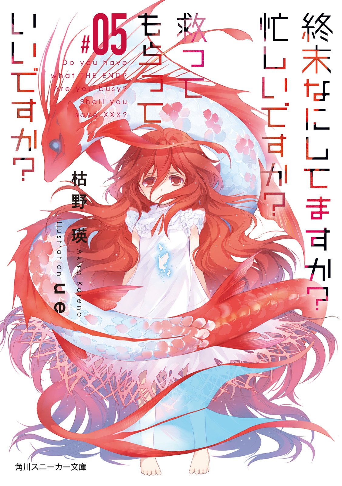
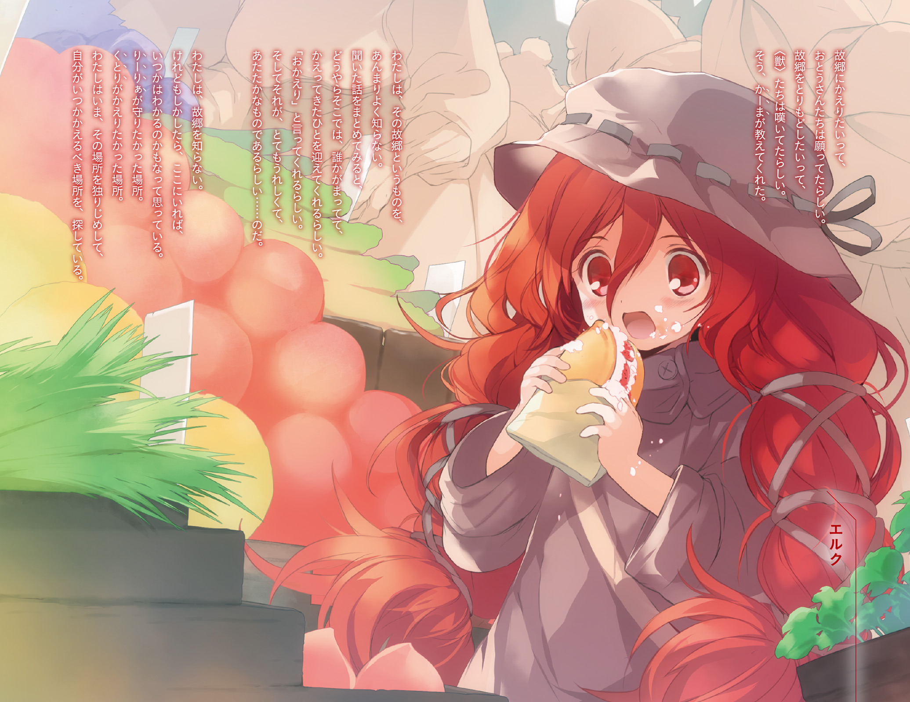
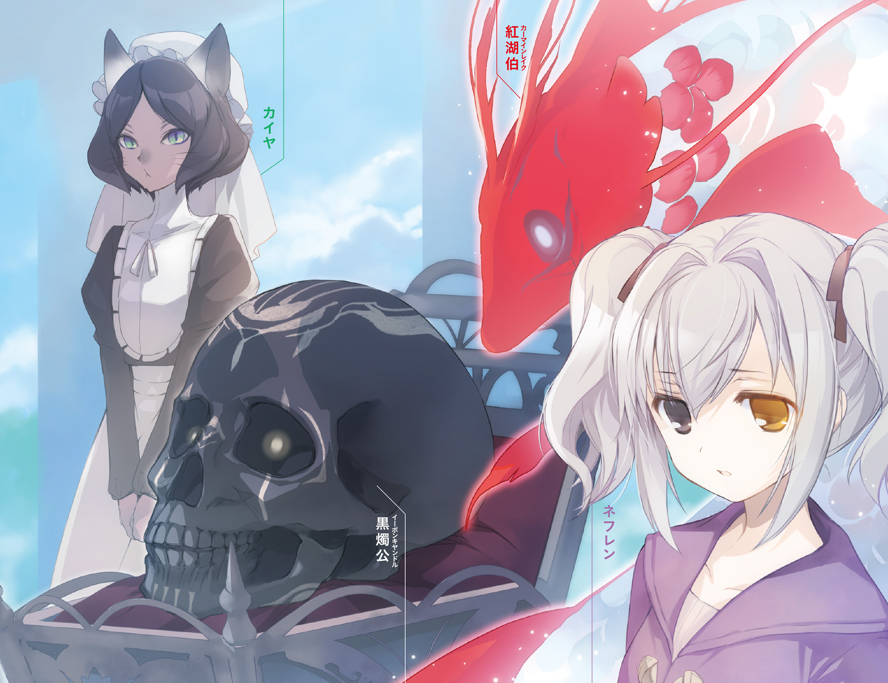
終末なにしてますか？ 忙しいですか？ 救ってもらっていいですか？#05
枯野 瑛
角川スニーカー文庫
本作品の全部または一部を無断で複製、転載、配信、送信したり、ホームページ上に転載したりすることを禁止します。また、本作品の内容を無断で改変、改ざん等を行うことも禁止します。
本作品購入時にご承諾いただいた規約により、有償・無償にかかわらず本作品を第三者に譲渡することはできません。
本作品を示すサムネイルなどのイメージ画像は、再ダウンロード時に予告なく変更される場合があります。
本作品の内容は、底本発行時の取材・執筆内容に基づきます。
本作品は縦書きでレイアウトされています。
また、ご覧になるリーディングシステムにより、表示の差が認められることがあります。
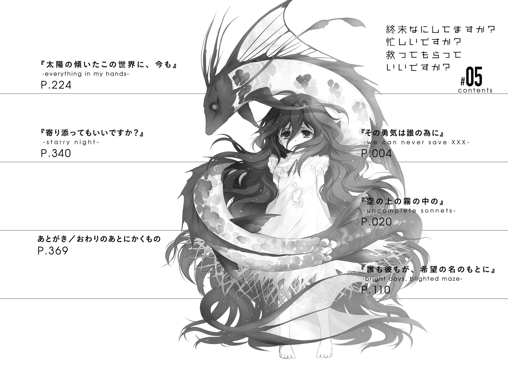
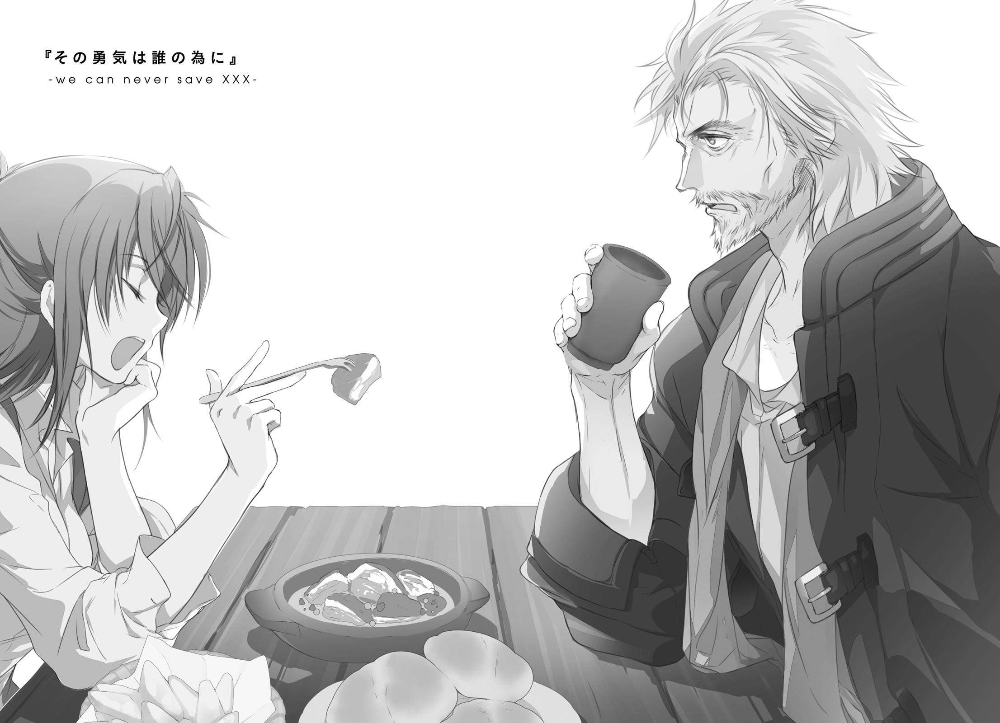
長すぎる旅が、彼らの記憶をすり減らしていった。
故郷はあまりに遠く、思い出はあまりに薄く。流れてゆく膨大な時間は、もはや時間としての意味をすら無くしていて。
旅の始まりは、何だったか。確か、戦争か災害か、そういった類のものだったはずだ。彼らは故郷を離れ、星々を渡る船に乗り、この旅を始めた。いくつもの星を訪れ、そして離れた。
気づいた時には、故郷への道は失われていた。
振り返った航路には航跡のひとつも見えず、ただ深い闇が広がっているだけ。
道が失われて初めて、帰りたいという想いが膨れ上がった。行き場を持たないそれは、すぐにただの妄執へと変わり果てた。
ただひたすらに故郷を想い、望み、願い続ける。
故郷の記憶は既にない。だから、船の中枢機構に刻まれた古い記録を読み返し、その幻影に焦がれ続けた。
彼らに死という終わりはない。
永遠に少しだけ足りない放浪の果て、彼らは故郷を諦めた。そして、次の永遠を過ごすための舞台として、故郷を模した『箱庭』の中に眠ることを望んだ。
それが、ひとつの終わり。
それが、ひとつの始まり。
彼らは、星々を渡る民。
後に星神と呼ばれることになる一族──

「──うわあ」
そこまでの話を聞いて、リーリァ・アスプレイは平淡な声を漏らした。
覚悟してはいたけれど、なんというかこれは、相当にキツい。
「今こそ語られる、これが世界創世の真実！ ......って、何なのその、思春期の妄想まっしぐらな俺設定。ししょーさぁ、もういい加減いい年なんだからさぁ、そろそろちったぁ落ち着いてもいいんじゃないの？」
「当代の正規勇者様が何ほざいてやがる。そもそもだ、俺ぁ絶対に噓は言わねぇぞ」
「それはわかってるけど。やっぱ真顔で聞ける内容じゃないってゆーかさぁ」
曖昧な笑みを浮かべて、蜂蜜酒のカップをあおる。
帝都第六街区の片隅、深夜にも煌々と灯を掲げた安酒場。肉の脂と煙草の煙のせいで視界が白く濁っている。清潔さにも上品さにも程遠いところだが、食事はけっこういける。さすがはししょーの選ぶ店だな、とリーリァは心の中で師の評価を改める。
「んで。その、ししょー流の創世神話によれば、星神たちはみんな、その......船の中枢機構に造らせた箱庭世界に、自分たちの魂を埋葬させたんだよね？ この際、魂なんて唐突なオカルトワードについてはつっこまないとしてだ」
くるくると指先を回して、
「その後に生き残った星神は二人、っていうか二柱だけ。そのうち一人は明日あたしたちが殺しに行くエルク・ハルクステンで、もう一人は──」
ぴ、と肉を刺したままのフォークを使って、目前の『ししょー』をまっすぐ示す。
「──世界の外からの来訪者、『異邦人』ニルス」
「人を食器で指すな、行儀が悪い」
「いやほらだって、ししょーは人じゃなくて神さまだって話なわけでしょ」
「神だとしても食器で指すな、行儀が悪い」
それは確かにその通りだ。
納得してフォークを翻すと、肉を口に放り込む。あふれる肉汁。表面の焦げ目が絶妙に苦くてうまい。くるりと振り返って厨房に声をかける。おっちゃーんこれ美味しいねもう一皿っ！
「それに、俺はハルクステンの連中とは同じじゃねぇよ。故郷も違えば旅路も違う。たまたま同じこの世界に漂着しただけの、まったく別口の旅人だ」
「この世界の標準的ニンゲンとしては、そのへん違いがあるように思えないんだけど」
「ハルクステンの連中ほど神がかれねぇんだよ、俺は。全知にも全能にも縁がねぇ。あいつらがやってるほど多彩でも強力でもねぇんだよホントに。異界由来の魔法の力だって持ち合わせちゃいるが、厳しい回数制限付き。あと二回使ったらこの世界とはおさらばだ。
そりゃ、確かに俺様はスペシャルだ。めちゃくちゃ強ぇし、めちゃくちゃ賢ぇし、めちゃくちゃ格好いい。だがそのへんが限界で、その上には行けやしねぇ」
どんだけ自己評価高いんだ。噓は吐けないんじゃなかったっけ──と意地悪を言いたくもなったが、やめておく。なにせ面倒くさいことに、『ししょー』ことこのニルス・Ｄ・フォーリナーは、実際にめちゃくちゃ強くて賢いのだ。最後のひとつ、めちゃくちゃ格好いいかどうかについてはちょっとコメントがしづらいけれど......まぁ、人によってはそう見えるということもあるのだろう、うん。美意識の個人差に対しては寛容でいたい。
「だから、お前らがこれから挑もうとしてる戦いにも、大した力は貸してやれねぇ。表舞台を現役勇者たちに任せて、裏方は裏方らしく後ろで地味な仕事を片付けるさ」
「......そか。仕方ないね」
呟くように答えながら、付け合わせの生野菜をばりぼりと嚙み砕く。
「その地味な仕事ってのは、真界再想聖歌隊がらみ？」
「ま、そうだな」
曖昧に答えて、ニルスは酒瓶をあおって、空にする。
「あれもなぁ。最初は純粋に人類を守るための秘密結社として創設したんだがなぁ。名前だってクリーンっぽいイメージを出すために、二年ばっかし熟考して決めたんだぜ？」
「いやいや？」
二年かけてアレか。アレなのか。
「それがよ、八十年ばかり放ってただけで、すっかり荒みきっちまってよ」
「いやいやいやいや？」
玄関で立ち話している間に鍋の中身がすっかり煮えていた、みたいなノリで語っていらっしゃる。が、八十年というのは本来、そんな夕食クッキング感覚で語っていい数字ではないはず。やはりそういうところ、不老にして不死である星神......来訪者の感覚は、人間のそれとは違ってくるものなのだろうか。
「そうこうしているうちに本格的に時間がなくなった。人類の破滅はもう秒読み段階に入ってる。しかし、半壊状態のうえ内部分裂して、さらには水面下の活動すら余儀なくされてる今の聖歌隊だけじゃまともに動けねぇ。しょうがねぇから、今のトップのやつらに連絡をとって、幾つかの局面については直接指示を出した。お前に摑まれた尻尾は、そんときのモノだろうな......と」
そこで言葉を止めて、ニルスは目を細める。
「さて、リーリァ。ここまでの話、信じるか？」
「いやそりゃ信じたかーないけどさ。噓じゃないんでしょ？」
頷かれる。
「だったら、可能性は二つ。ししょーがイタい妄想を頭っから信じ込んでるか、今のが全部本当のことだったか。......個人的には全力で前者を選びたいとこだけど」
はぁぁ、とため息。
「たぶんそれやると、ししょー泣くよね。それもかなりウザい感じで」
「そういう言い回し、お前とヴィレム、よく似てるよな......」
「そんなん、二人ともししょーに似たからに決まってんでしょ。いたいけだった少年少女をろくでなしに染め上げちゃって。責任とってよ責任」
「押しかけ弟子の分際で、なんつー言いぐさだよオイ」
何やらぶつくさ言っているが、リーリァは、聞こえないふりをすることに決めた。
「まぁそれはともかくだ」
肉だか脂身だかよくわからない塊を口の中に放り込みながら、ニルスは視線と表情を鋭く引き締める。
「リーリァ。お前、明日の戦いには行くな」
「口の中にものを入れて喋らない」
「ん？ ん、ああ」ごくん「リーリァ。お前、明日の戦いには行くな」
ちゃんと飲み下してから言い直した。律儀だ。
「エルク・ハルクステンはまだ幼い。人間を攻め滅ぼそうなんて判断を自分で下せるような知識はないはずだ。いま奴らが攻めてきているのは、地神のどれか......たぶん翠釘侯あたりの判断だろうな」
「なんでわかんの」
「そりゃ、人類史と同じくらいには古い知り合いだからな」
うっわぁ、さらっと何言ってんだこのひと。
「人類史と同じくらい長い間、会ってねぇけどな」
しかも微妙に頼りがいのないことを付け加える。
「世界の破滅が近いんだ」
酒瓶をあおる。心なしか、いつもよりペースが速い。あらゆる毒の効かない体なので、酒に酔うこともないのだと言っていた気がするのだけど。
「そいつを防ぐのに必要なのは、星神の遺体。正確にはその魂。そして、それを正しく加工し、起源呪詛とともに〝種〟に定着させる知識と技術だ。さっさとそいつらを揃えないと、遠からず人類がこの世界をまるまる滅ぼす」
「なんで」
「説明すると長くなる、そこは前提として流せ。......んでもって、その前提を抱えたうえで、地神どもの考えてることは簡単だ。大事なエルクの魂を傷つけるなどとんでもない。だから、人類のほうをぶっつぶす」
「ちょっと待って」
リーリァは師の言葉を途中で遮る。
「その状況、人類はもう手詰まりだ、って聞こえるんだけど。生き残ったら世界の破滅、死に絶えたらもちろん種の破滅、ってことよね？」
「そうでもねぇよ。呪詛の知識と技術は俺が持ってる。魂を加工するための呪術設備も、どこぞの街の地下にこっそり建造済みだ。あと必要なのは星神の魂ただひとつ......」
「却下」
きっぱりと切って捨ててやった。
「......まだ最後まで言い終わってねぇぞ」
「言われなくても、今の流れでだいたいわかるし。
あたしがエルク神を殺せるならそれでよし。教会に話を通してるのか......あるいはあたしたちの仲間に真界再想聖歌隊が混ざってるのかな、そのへんの伝手を使って魂を回収して、ししょーがその呪詛とやらをかければそれでいい。さっきまでの話からすれば、それがもともとの計画だったはず。
なのにわざわざ『逃げろ』って言うってことは、星神の魂を別のところから調達するつもりになったってこと。たまたま今夜あたしが顔を見せちゃったから情に揺らいじゃったとか、理由はたぶんそのへん」
ニルスの酒瓶を奪い、中身を自分のカップにまとめて注ぎ、飲み干して、
「......ししょー自身の魂、使うつもりなんでしょ？ それもたぶん、次善以下の策になってるってことは、成功率はそんなに高くないはず」
返事はない。
「そいつは通せない。当代の正規勇者はあたしなんだ。世界のために我が身を犠牲にするっていうなら、そいつはあたしの役目」
「お前」
「わかってる。星神はセニオリスを全開にしないと勝てない相手。殺すのは問題なくできるだろうけど、あたしの生還は絶望的。......でもさ」
にひ、と、いつものように笑う。
笑えていたと思う。演技には自信がある。
「それでも、全開にすれば、まず間違いなく勝てはするんだ。勝算が高いっていうのは、一番素敵なことだよ。注ぎ込んだ命も覚悟も、無駄にならないんだから」
「お前に、そこまでして戦う理由はねぇはずだ」
苦味を堪えるような顔で、懐かしい質問をしてきた。
あれは、何年前のことだったか。才能のない兄弟子が、どこかの戦場で、まったく同じことを聞いてきたのだ。
「お前の中に、故郷を滅ぼされた悲しみはあっても、怒りはねぇ。勇者の使命も聖剣の重みも、それこそ自分で望んで背負ったもんじゃねぇ」
「そだね」
あの時と同じように、素直に頷いた。
そしてここから先は、あの時には言わなかったこと。
「でも、しょーがないじゃない。あたしが降りたところで、ヴィレムが一人でも行くとか言い出すに決まってんだから。しかもアレ、ほっといたら本当にそれやるよ？」
「......あん？」
揚げ芋の籠から一切れをつまみとって、口に放り込む。
もぐもぐやりながら──以前に気づいたことを、気づいてしまったことを、ひとつひとつ順番に並べ始める。
「正規勇者は強い。あらゆる武技はそれに触れえず、あらゆる呪術はそれに届かず、あらゆる怪物はそれに敵わず。ゆえに、戦えば必ず勝利を収める。それはなぜか？」
ニルスは黙っている。
「正規勇者はどれも、互いによく似た悲劇を背負っている。誓いを背負っている。願いを背負っている。そういうものがなければ正規勇者にはなれない。そういうものがなければ正規勇者として機能しない。物語的に必然の背景を背負って初めて、物語的に必然の勝利を収められる。
理由も理屈も知らないよ。あたしが今言ってるのは、肌感覚で正規勇者ってものに対して感じてたことを言葉にしているだけ。でも、けっこう正しいとこ突いてるって確信は持ってる。つまり──」
ごくん、
「──正規勇者は、かつて実在した『典型的な勇者』の人生のコピーだ」
ニルスは黙ったままだ。
「あたしたちは、自分たちの人生を送ってるわけじゃない。みんなにとって都合がよかった誰かの便利な人生を、多少のアレンジを加えながらなぞってるだけだ。
詭弁と牽強付会は呪術の基礎、だね。よく似たものは同じ性質を共有する。『勇者』でしか倒せないような相手がいたとしても、『勇者』とよく似た人生を送ってきてるやつなら、同じようにそいつを倒すことができるはずだ、って。
だから『勇者』とよく似た人生を送るあたしたちは、かつて『勇者』がそうしたように、誰よりも強い力を振るう。敵と戦えば必ず勝つ。そして......」
あ。やばい。リーリァは危機に気づく。目もとが、熱くなってきた。
もう泣かないって、決めていたはずなのに。
ずっと隠し通すって、何を考えてるのかわかんない嫌なやつでいるんだって、自分自身に誓ったはずなのに。それなのに、止められない。
「かつて『勇者』がそうだったように......本当に救いたい相手は決して救えないし......帰りたい場所には、決して帰れない。そういうことなんでしょ、元十八代正規勇者ニルス・ディデク・フォーリナー？」
ニルスは。
リーリァよりもよほど複雑で面倒くさくて大変な人生（？）を送ってきたらしい目の前の男は。苦々しい顔をして、目を背ける。
「別に、はっきりしたルールがあるわけじゃない」
「それ、さっきも聞いたぞ？」曖昧に笑う「はっきり明文化されたルールこそないけど、そういうものだってこと自体は否定しないわけだ」
返事がない。
「だったら、うん。よかった。あたしの覚悟は、無駄じゃなかった。
あたしは確かに、両親や祖国を滅ぼされた怒りとか、聖剣に選ばれし者の使命だとか、そういうのをそんなに大事だと思ってない。けど、命を棄てて戦う理由を何も持ってないわけじゃないんだよ、ししょー」
涙を──もう、隠すこともごまかすこともできそうになかったから──指の背で、控えめに拭った。そうしてから、らしくもなく乙女チックな仕草だったかなとおかしくなって、ちょっとだけ笑う。
「ヴィレムには、帰りたい場所がある。助けたい相手だって、大勢いる。どっちも持ってないあたしとは違うんだ。そしてししょー、あんたともきっと、違うんだ。だから」
そしてリーリァは、涙に少し湿った声で、誇らしげに、宣言する。
「ヴィレムだけは、絶対に正規勇者になんか、ならせない。
戦う理由なんて、それで充分。あたしはそのためだけに正規勇者をやってるし、明日はそのためだけに、星神を討つんだ」
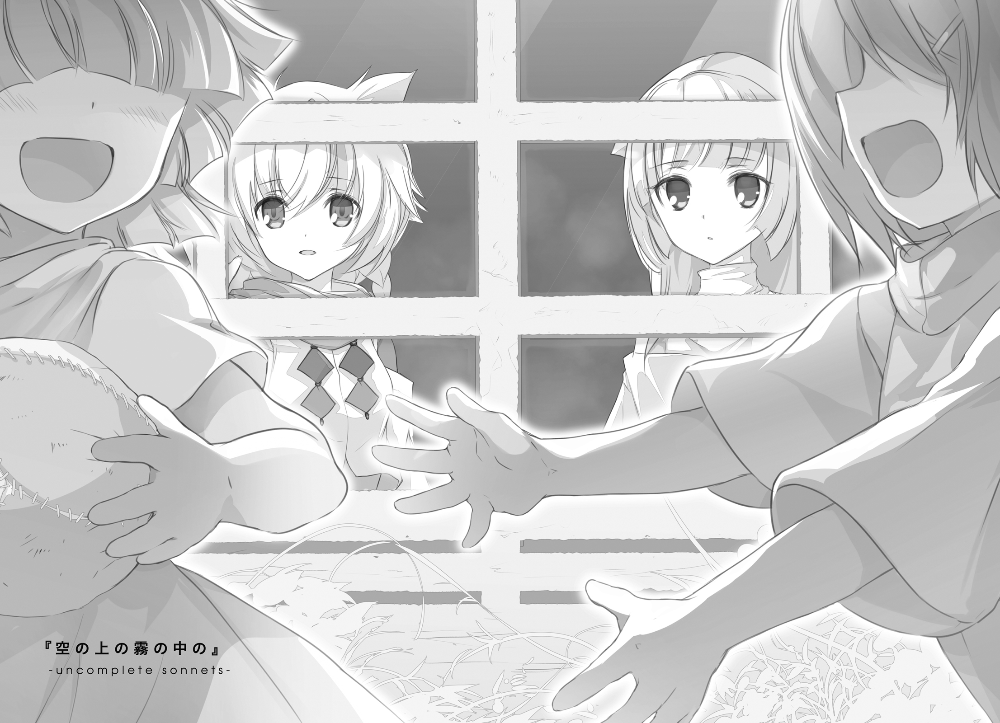
１．星神エルク・ハルクステン
彼女は、ただ、「誰か」になりたかった。
始まりは、ただ、それだけのことだったのだ。
小さく堅牢な結界の中に、一人の子供が微睡んでいた。
結界とはつまり、外部から独立した、ひとつの小さな世界のことだ。その子供は、生まれてからその時までずっと、その結界の内側から出たことがなかった。
『おぬしら星神は、存在そのものが巨きすぎるからのう。其処に在るというだけで、外の世界に生きる者の精神を圧し潰しかねんのだよ』
これは、子供の家族の一人であるいーぼの言葉。
『あんたのお父さんお母さんたちのほとんどは、この地に生きるため、自らの魂を細かい欠片に砕いた。でもアタシたちは、あんたに同じ道を辿ってほしくない。あんたは、アタシたちの最後の主なんだ。ずっと、今のままでいてほしい』
これは、同じく家族である、かーまの言葉。
『我ら三地神は、汝ら星神を──その殆どがこの船を去った今となっては汝一人を、導くために在る。この身この魂のすべてを懸け、あらゆる外敵から守り抜いてみせよう。あるじ、エルク・ハルクステンよ』
これは、これまた家族である、じぇいの言葉。
その子供......エルクが意識というものを得たその時からずっと、この三者がすぐそばにいた。優しく支えてくれた。色々なことを教えてくれた。様々な願いを聞いてくれた。
けれど、ひとつだけ。
生まれ育ったこの結界を出ることだけは、その外の世界をこの目で見ることだけは、どうしても許可してくれなかった。
ある時、じぇいがいなくなった。
次いで、いーぼまで姿を見せなくなった。
どこいったの、と尋ねても、かーまは答えてくれなかった。
『役目が終わったら、すぐに帰ってくるわよ』
そんな曖昧なことだけを言って、くるりと目を逸らした。
──やくめって、なんだろう。
そんなことをぼんやり思いもした。が、そこから先のことを考えるにはエルクは無知すぎ、己の無知について考えるにしても幼すぎた。
やがてかーまもどこかへ行ってしまい、小さな結界の中に一人きりで取り残された。
不安も戸惑いもなく、ただ狭い結界の中で、退屈だなとだけ考えていた。
退屈な時間は、当初思っていたよりも長く続いた。太陽も月もないその結界の中で、その子供はぼんやりと、家族の帰りを待ち続けた。
結界の中にあるおもちゃは、遊び尽くしてしまった。
ぬいぐるみも、すこし乱暴に扱っただけで、ちょっとずつ壊れてしまった。これ以上壊さないように、壁際に置いて近づかないことにした。じぇいが帰ってきたら、きっと直してくれる。だから、彼の帰りを素直に待とう。そう思った。
結界の外壁が破られる、大きな音。
何だろう、とエルクは思った。いーぼたちではないのは明白だった。あの地神たちは、結界の出入りにこんな騒々しい音は立てない。では、いったい誰なんだろう......
答えはすぐに、エルクの目の前に現れた。
人間。齢は十六。金属片を繫ぎ合わせたような奇妙な大剣を携えている。
名をリーリァ・アスプレイというその赤毛の娘は、正規勇者であり、圧倒的な力を持つ星神エルク・ハルクステンを殺すために讃光教会から送り込まれた、一種の兵器だった。
「......ぁ......く、ぅ......」
リーリァは、死に瀕していた。
体が傷ついていた。血が流れていた。無数の引き裂き傷が、娘の着衣とその下の肌を蹂躙していた。そのどれもが、少し間違えればそのまま致命傷になりかねないような、深い傷だった。
『──あなた、だれ？』
エルクは、素朴な疑念を、思念として放った。
敵意も殺意もない、単純で簡潔な疑念。しかし圧倒的な力を内包したそれは暴虐な衝撃となり、閉鎖された結界の中で反響し、リーリァの精神を打ち据えた。
水鳥の首を絞めたような声を出して、リーリァは苦悶する。
いーぼの言葉は、誇張でも何でもない。大鯨が身をよじれば、それだけで近くを泳ぐ小魚は翻弄される。エルクの持つ圧倒的な魂の大きさに比べれば、リーリァの、人間の矮小な魂など塵にも等しい。
「が......ふ」
リーリァは膝を折り、一度はその場に倒れ伏しそうになる。
手にした大剣──聖剣セニオリスを杖代わりにして、なんとか持ちこたえる。ずるり、ずるり。足を引きずるようにして、一歩ずつ、前に進む。
エルクは、きょとんとしている。まだ幼く、死というものを理解していない。目前のリーリァが死にかけていること、自分がその命を奪おうとしていること、どちらも幼い彼女の理解を完全に超えていた。
理解を超えていたから、興味を持った。
目の前のこれは、いったい何だろう。何をしようとしているんだろう。そう、思った。
『なんの、ごよう？』
次の衝撃が、リーリァを襲った。
足がよろけ、壁に叩きつけられた。
あふれ出る血で壁と床を汚しながら、それでもリーリァは、立ち上がった。
すごい。なんだかよくわからないけど、これ、本当にすごい。初めて見るものを前に、エルクは興味を募らせていた。その興奮が、思念の波により大きな力を与えた。
「あたしは......」
ごぼり。喉から溢れてきた血をいったん吐き捨てて、
「あたしは、リーリァ・アスプレイ。あんたを殺して、世界を救う、ただの勇者だよ」
『なんだか、たいへんそう』
雷に打たれたように、リーリァの体が震えた。それでも、
「大変だよ」
唇の端から血をこぼしながら、不敵に笑う。
エルクは、死や痛み、苦しみというものを理解していない。しかしリーリァのその姿を見て、ただならない決意を持ってそこに立っているのだろうことだけは感じ取った。
いーぼもじぇいもかーまも、それぞれに超越者でありすぎて、そういう姿を教えてはくれなかった。
『どうして、せかいをすくうの？』
「......あー」
大剣にすがるようにして立つリーリァが、しばし思案する。
ま、いいか。今だけ素直になろう。言葉に出さずに、そう呟いた。
「好きな人が、いるからね」
その時の表情が。
その笑顔が。あまりにも優しくて、眩しくて。
この人みたいになってみたいな、と。
そう、思ってしまった。
憧れを、抱いてしまった。
「それだけのために神殺しとか、我ながらバカやってるなーとは思うんだけどさ。でも、しょうがないよね。あいつのほうが、素でバカなんだ。あたしが先回りしてバカをやっておかないと、後であいつがバカをやる。なんせヴィレムって、本当にバカだから」
度重なる衝撃を受けて、リーリァの意識が砕けかけている。どこかぼんやりと夢見るような瞳で、それでも歩みは止まらない。
一歩、また一歩と、リーリァは距離を縮め、ついにはエルクのすぐ目の前に立った。
「それじゃあね、小さな星神。恨みはないけど、おやすみなさい」
せめて、いい夢をたくさん見てね──と。
大剣を構えた。
ゆっくりと、まっすぐに、丁寧に、エルクの胸元に差し入れる。まるで赤子の頭を撫でるような穏やかさで、剣は小さな体を貫いた。
きょとんとしたまま、エルクはまばたきをする。星神は不死者だ。生まれた世界でしか死を迎えることはできず、しかもその世界への道は失われている。だから、痛覚そのものは持ち合わせていても、それを危険だと感じ取ることができない。
血が流れ出す。
大剣の刀身に、幾筋もの罅が入った。罅がわずかに広がり、その隙間から淡い光があふれ出す。人の世にある最高位の聖剣セニオリス固有の特筆能力が発現する。あらゆるものを「死者」に変えるその力は、不死の者が相手であっても例外とならない。
淡い光が、ゆっくりと弱まり、消える。
最後まで心を砕かれたリーリァが、力尽きて目を閉じる。
──あれ？
すとん、と、幕が落ちるようにして視界が暗転した。
包み込むような浮遊感。どこまでも落ちて行くような錯覚。
一面の黒の中へと、低く、深く、重く。どこまでも、どこまでも。
そのようにして、幼い星神は、死という名前の長い眠りについた。
勇者が悪の星神の討伐に成功し、世界の脅威は去った。
正義は必ず勝つし、強き者は弱き者を必ず守り通す。
ありふれた英雄物語の決まり事をなぞるようにして、その戦いは終わった。
志半ばに斃れた者たちは不幸だったが、決して無駄ではない。彼らの犠牲があったからこそ、人々は生き残ることができたのだ。すべての死には、意味があったのだ。だから今はただ、この素晴らしきハッピーエンドを喜ぼう......
無邪気な喜びに沸く人々の、死角を縫うようにして。
封印庫に収められるはずだった星神エルク・ハルクステンの亡骸は、ある夜、準勇者ナヴルテリ・テイゴサックの手によって、秘密裏に運び出された。
星神の魂の欠片は、人類という種を創造する素材のひとつであり、人類を破滅から救う鍵である。真界再想聖歌隊はこの救済を現実に行うべく、四苦八苦してナヴルテリの持ち込んだ骸から魂を抜き出すと、千々に砕こうとした。
が、うまくいかなかった。
理由は多々ある。真界再想聖歌隊の祖であるニルス・Ｄ・フォーリナーが、先の戦いの時期に行方知れずになっていたこと。一連の研究の成果が多くの病への突破口になりうると気づいた医師組合が、土壇場になって研究者の何割かを引き抜いていったこと。帝国に仇なす悪の組織を叩きつぶさんと、正義感にあふれる冒険者たちが襲撃してきたこと。
様々な原因が複雑に重なり合い、必然の結果を導き出した。
砂のように細かくすり潰されなければならなかった魂は、半ば近くがその原形をとどめたままで、残りもせいぜい小石程度の大きさにまでしか砕けなかった。
当然それらは、救済の鍵とはなりえなかった。
ありふれた英雄物語の決まり事は、もう、役に立たなかった。
奇蹟を起こす祈りもなく、逆転の一手を打つ者もおらず、すべてを解決する古代の叡智が目覚めることも、なかった。
だから、それまでの経過にふさわしい順当な結果として、人間は滅びた。
後に残されたものは、この大地に巣食うあらゆる命を憎悪し破壊せんと暴れまわる、恐ろしい〈獣〉の群れ。
辛うじて最初の一年を生き延びて、安息の地を空の上に求めた数少ない逃亡者たち。
そして──粉々に砕かれたまま、行き場もないまま放置されていた、エルク・ハルクステンの魂のかけらたち。
「──また、空のうえの夢、みた」
〈月に嘆く最初の獣〉の創りだした幻覚空間の中。
長いあくびを嚙み殺しながら、赤い髪の少女が虚空に向かって話しかけた。
『例の妖精の話？ 湖の中に獣人の子を引きずり込んじゃった、っていう......』
その虚空から、大人の一抱えにも余る大きな空魚が、にょっきりと姿を生やした。
「ちがう。あの子は、あのあとすぐに討伐されちゃった。今度のは、べつの子たち。森のなかで、妖精だけであつまって大さわぎしてたの。言葉とかはわからないから、泣いたり、わらったり、さけんだり」
『近所迷惑ねぇ』
「うん、きみわるがられてた」
そりゃそうでしょうよ、と空魚が何度も頷く。
「......あの子たち、何なんだろう」
『んー？ どういうギモン？』
「夢のなかでね。わたしは、なつかしい場所にいるの。いーぼもじぇいもいたころの、あのちいさな結界のなか」
『ああ、なつかしき我らが星船ね』
「そのあちこちに、なんていうのかな、『お話』が落ちてるの。壁の穴だったり、たんすのすきまにはさまってたり、絵本のなかの挿絵にまぎれてたり。それをみつけると、あの子たちのことがわかるの。どこで、なにをしてて、なにをかんがえてて、なにをかんじてるのか。本を読むみたいにね、あの子たちの一生が読めるの」
『ここの結界がもう夢の中みたいなものだってのに、その中でまで夢を見てるってのも、お年頃の女の子として筋金入りよねぇ』
よくわからないことを言われた。
『それは、全部アンタ自身よ、エルク』
「わたし？」
『アンタの魂を砕きやがったアンチクショウどもはね、そんなに大した力も技術も持ってなかった。仕事がハンパだったわけ。出来上がった欠片は大きさも均一じゃなかったし、砕かれながらもお互いにつながりが残ってた。
夢に出てきたその妖精たちはね、アンタの一部だった魂の成れの果て。喩えるなら、そうねぇ......昔切った髪の毛みたいなモンよ。
アンタの死に方が中途半端だったから、魂の欠片のほうも、素直に死んだままじゃいられなかったんじゃないかねぇ。そして、同じひとつの魂であるという縁を伝って、アンタは夢という形でその子たちの生涯を受け取っている』
「じゃあ、あの夢は、この結界世界の外で、本当にあったこと？」
『そゆこと』
「あの子たち、いたずらして討伐されたり、大さわぎして気味わるがられたりしてるの、本当におきてることなの？」
『そうなるわね』
そっかぁ、とエルクは黙り込む。
ちょっと面白いな、というのが正直な感想だった。その時にエルク自身が滞在していた〈最初の獣〉によって創られたこの結界世界も、世間知らずの彼女にとっては、充分に楽しい場所だった。が、空の上で陽炎のように儚い命を生きる妖精たちの生涯は、それとはまったく違う刺激をエルクにもたらしていた。
短く愉快な物語を体験できる娯楽として、彼女は自分の夢を......自分から分かたれた自分の欠片たちの一生を、楽しんでいた。
それから、時間が経った。
この、〈最初の獣〉の世界において、時間の流れは意味を持たない。毎日が毎日とも、「どこにでもありそうな平凡な一日」として過ぎていく。陽が昇り沈むたびに明日が今日になり今日が昨日へと変わっていくのが本来の常識だが、ここでは常に変わらない今日だけがあり続けている。
そんな中、エルクの夢だけは、少しずつ変化を続けていた。
空を漂う〈深く潜む六番目の獣〉の襲撃により、いくつもの浮遊島が墜とされた。何匹もの妖精が魔力を暴走させることでそれを退けた。そのことに気づいた者たちがいた。それまで森の奥の厄介者でしかなかった妖精たちを捕獲し、浮遊島を守る武器として遣うことを思いついた。
「最近、ちょっと、夢が面白くない」
妖精たちが全身全霊で、自分の存在のすべてを懸けて楽しいことを追求していたからこそ、それらの夢は楽しかったのだ。それなのに、もう、そんな妖精の夢はほとんど見られなくなっていた。あるのはただ、自分以外の誰かを生かすために自らを殺していく、そんな道具のような妖精たちの後ろ姿だけだった。
それから、さらに時間が経った。
夜を迎えるたびに、エルクは相変わらず、妖精たちの生涯という物語を鑑賞していた。妖精たちが言葉を学び、剣を与えられ、まるで兵士のようなものになりながらも兵器として扱われ続ける様を、眺めていた。
その頃になると、妖精たちの中に、しっかりした自我を持ち、生きたいと願う妖精たちも交じり始めていた。そういう妖精に限って、なぜか生まれたばかりのころの姿はよく見えず、ある程度成長してからでないと夢が物語に繫がらなかった。
かーまによると『同じ欠片が転生を繰り返してるうちに独立した存在に近づいてきて、アンタとのつながりが薄れてきたのかもねぇ』とのこと。
ということは、そのうち外の物語はまったく見られなくなるのだろうか。娯楽を奪われるようで、ちょっとうれしくない話だった。
そして、さらにもう少し時間が経って。
エルクは、ひとりの妖精の夢を見た。
その妖精は、晴れた青空のような色の髪と、凪いだ海のような色の瞳を持っていた。
強い力の素質を持っていた。そして、その使い道までしっかりと決められていた。あの聖剣セニオリスを持って、特大の〈六番目の獣〉を相手に突撃して相討ちになる。それだけのために生まれて死ぬ、簡潔で閉じた物語が用意されていた。
ああ、まただ。
序盤を見ただけで、暗澹とした気持ちになった。この子もまた、これまでの妖精たちと同じなのだ。楽しいことを知らず、幸せになることを望みもせず、ただ短い命を使い棄てるだけの生涯を送るのだと、そうわかってしまった。
その諦めは、間違っていなかった。そのままであれば、彼女は確かに、その通りに生きてその通りに死ぬはずだったのだから。
転機は、みっつ。
一度でいいから知らない街を歩いてみたい、という小さな気まぐれ。
大事なブローチをかっさらって逃げ出した、一匹の猫。
そして──高いところから落っこちた彼女のお尻の下で、みっともなくも格好良く潰れかけていた、一人の黒髪の青年。
『け、怪我とかない!? ちゃんと生きてる!? 内臓とか潰れてな、あっ』
街中を二人で走り回って。別れて。再会して。
『──それじゃ、これからよろしく、わたしたちの管理者さん』
距離を測りかねて。認めて。自分の気持ちに気づいて。
『......キスさせろ、とか言ったらどうする？』
反発して。死の覚悟をひっくり返されたことを恨んで。
それでも希望に向かいたいと顔を上げて。
エルクは、その物語に、自分から分かたれた少女の生き方に、知らず見入っていた。
自分の知らない大切なはずの何かを、その少女は摑みとっていたように思えた。
大好きなひとがいて。そのひとのために、自分の幸せを諦めて。自分が無くなることがわかりきっているような戦いにも、迷わずに向かうことができて。
......ああ、そうだ。リーリァに似ているのだ。
かつてこのエルク・ハルクステンを殺した、あの人間の正規勇者。彼女に触れて、彼女の在り方に憧れて、彼女のようになってみたいと願いながら、自分は死んだのだ。
その幼い願いは、正確に叶っていた。これまでの妖精たちは、自身の幸福のことなど考えもせずに、次々と自分を捨てていた。大好きなひとだとか自分の幸福だとか、そういった要素についてはエルク自身がよく把握していなかったせいか省略されていたけれど。
最近、夢がつまらない？
冗談じゃない。あれは、自分で望んだことだ。外の世界に触れたかった。リーリァみたいにすごい剣を振り回したり、自己犠牲もしてみたかった。ただそれだけの幼稚な欲求を、ずっとずっと、文字通り無数の命を費やしながら満たし続けてきただけだ。
けれど、今、青い髪の少女は......クトリ・ノタ・セニオリスは、その茶番の外にいた。エルク自身がかつて願ったことの向こう側に、彼女自身の願いを持って立っていた。
大好きなひとがいて、その気持ちを隠さなかった。
そのひとに幸せになってほしかったし、自分の幸せだって見つける気でいた。
自分が無くなるかもしれない戦いに、怯えながら苦しみながら、それでも立ち向かっていった。
夢の中のエルクは、星船の遺跡に住む、幼い子供のままだった。だから自分のしたことについて、理解もしなければ何かを感じることもなかった。
けれど夢から離れ、結界世界の中で目を覚ませば、そうもいかない。
なんて、最悪の茶番だったのだろう。吐き気がする。讃光教会は正しかった。エルク・ハルクステンは最悪の邪神だ。こんなやつ、斃されてしまって当然だったのだ。
『別に、気にしなけりゃいーのよ』
かーまは、軽くそんなことを言う。
『死んだり生まれたりしてるの、全部、アンタ自身なんだから。最初から最後まで、ちょっと派手なだけの一人遊び。誰にも迷惑かけてないし、それどころか、その空の上の島はアンタの力で守られてるんでしょ？ いいことしてるじゃない』
違うのだ。そうじゃないのだ。
くとりはえるくかもしれないけど、えるくはくとりではないのだ。妖精たちは今もエルクの一部ではあるかもしれないけれど、それでもすべて、別の人格だ。それぞれに願いを持って生きているのだ。
自分は、彼女たちのように、何かに必死になったりはしていない。なれもしない。ただ、必死になれる誰かに憧れて、遠いところから眺めていることしかできない。
時間が経つ。
戦いの中、クトリが、壊れていく。その姿を、エルクはぼんやりと見届けた。
この夢は、短く愉快な物語を体験できる娯楽のはずだった。平和な結界世界の中では得られない刺激を楽しめる、ただそれだけのもののはずだった。なのに。
『お願いがひとつ、あるの。これがきっと、最後のお願い』
知ってるよ。
『はっきりとは思い出せないけど、助けたいひとが、いるはずなの。伝えたい想いも、あるの』
それも、知ってるよ。
わたしはあなたじゃないけど、あなたは、わたしだから。
くとりがびれむのことを想ってきた姿を、ずっと、見てきたから。
『全部わかってる。そのうえで、頼んでるの』
そうだよね。そう言うだろうと、思ってた。
踏みとどまってほしいとか。まだ生きていてほしいだとか。あなたの物語をもう少し続けてほしいだとか。そんな言葉は、夢の中の幼いエルクの口からは、出てこなかった。
だからただ、がんばれ、と。
そう言葉を送って、背中を押した。
夢の中のエルクは、涙のひとつも流さなかったけれど。
それでも目をそらすことなく、青い髪の少女と、黒い髪の青年の物語の終わりを、最後まで見届けた。
２．ネフレンであったもの
つんつんつん。
頰を、何か小さくて柔らかいものがつついている。
もう少し寝かせておいてほしいと思う。理由はよくわからないけれど、とても疲れているのだ。
『ねえ、ちょっと』
つんつんつんつんつんつん。
無視していると、つっつき攻撃が加速した。頰がむにむにと揺れる。痛くはないけれど、うっとうしい。寝返りを打って、その何かを追い払う。
ぱしゃん、と小さな水音。
『こらアンタ、いいかげんそろそろ起きなさいってば』
うるさいあっちいけ。さっきも言って......はないけど、自分はとにかく疲れているのだ。もっと、ずっと、眠っていたいのだ。
『いつまでもこんなとこで寝てたら、風邪ひくわよ？』
......ああ、そういえば。
言われて初めて気が付いたけれど、ここはなんだか、寒い場所のような気がする。全身が冷たい水に濡れている感触。あんまり気持ちよくはない。柔らかい毛布と、温かい枕とを希望する。
そんなことを吞気に考えながら、ネフレンはゆっくりと目を開──
壊セ壊セ壊セ壊セ壊セ壊セ壊セ壊セ壊セ壊セ壊セ壊セ壊セ壊セ壊セ壊セ取リ戻セ
「──っぴゃ!?」
唐突に湧き上がる圧倒的な破壊衝動に、意識をまるごと持っていかれそうになった。慌てて両目を閉じる。衝動の嵐が、ゆっくりと引いていく。
なんだ、今のは。
理由のない感情の代わりに、今度は理由のある恐怖がゆっくりとネフレンを満たしていった。自分の中に、自分の知らない何かがいる。いや、それは少し違う。自分の中身が、自分の知らない何かに変わり果てている。その実感がある。
『あ、ありゃあ......なんかとんでもないことになってんのねぇ、アンタ』
正体不明の誰かが、呆れたようにつぶやいたのが聞こえる。
少し濁った、中年女の声......に聞こえる。少なくとも、知己の誰の声でもない。
「......誰？」
『その話は後で。とりあえず、右目だけ開けてごらんなさい』
「でも」
『大丈夫。とりあえずアタシを信じなさい』
どこの誰ともわからない相手を、信じるも何もないものだ。けれど、その声から少なくとも敵意のようなものは感じなかったし、このままずっと両目を閉じて震えているわけにもいかないのも事実。
なるようになれと腹をくくり、おそるおそる、言われた通りにしてみる。
少しずつ、視界が広がる。
目の前に、朱色の魚が、浮いていた。
「............えと」
『......大丈夫？ ちゃんと見えてる？』
「目が壊れた。魚が飛んでるように見える」
『それ正常よ。ほら、アタシのキレーなウロコ、ちゃんと見えてるんでしょ？』
言いながら、くるんとその場で宙返り。朱銀色の鱗が、きらきらと濡れたように輝く。それは確かに、本人もとい本魚の言う通り、実に幻想的で綺麗な眺めではあった。
あの意味不明な衝動は......完全に消えたとまでは言わないが、先ほどに比べればだいぶ大人しい。うっとうしくはあるけれど、さほどの問題ではない。
ここは、どこだろう。
ネフレンは周囲を見回した。四方が崖のような土壁に囲まれている。見下ろすと、透き通った水が浅く溜まっていて、自分はちょうどそこに半分身を浸していた形になる。
見上げると──遥か高いところの天井が大きく裂けて、そこから青空が覗いている。
「もしかして、あそこから落ちたの？」
『そうみたいねぇ』
ぶるりと体が震える。
「寒い」
『だから、寝てたら風邪ひくって言ったでしょ？ ......まぁ、たぶんもう一生大丈夫なんでしょうけど』
奇妙な魚が、奇妙なことを言う。
「どういうこと？」
『それは......後にして、上に出る道を探しましょ？ いつまでもこんな場所にいたら気がめいっちゃいそうだし、個人的にも本物の太陽が恋しいし』
それは確かに。
『この辺りはもともと穴だらけで、地盤が弱かったみたい。この大穴ができちゃったのもそのせい。横道を総当たりしていけば、そのうち上に出られるんじゃないかしらねぇ』
「んー......」
左目を固く閉じたまま、ネフレンは魔力を熾した。
灰色に輝く幻翼を、背後に発生させる。
問題なく、いやむしろいつもよりスムーズに魔力は仕事をした。ネフレンの体が、ふわりと浮きあがる。
『......ねぇちょっと。飛べちゃう系の子なら、先にそう言いなさいよ』
「先に行く」
羽ばたき、ネフレンは地上を目指した。
なぜ、自分はまだ生きているのだろう。ネフレンは考える。
あの『プランタギネスタ』での戦いで、自分は致命傷を負った状態で地上に墜ちた。そして死への秒読みの真っ最中に、ヴィレムとともにおかしな結界世界に意識だけを閉じ込められた。そんでもって、その結界世界を破壊して外に飛び出した。ついでにその際、ヴィレムを飲み込みかけていた何やらおかしな黒いものの中に飛び込んで、半分くらいを体の中に取り込んでしまったりもした。
......うん。どう考えても、並の妖精ならば三、四回は死ねているはずのフルコース体験だ。そしてこのネフレン・ルク・インサニアは、例えばクトリほど特別な性能を持たない、まさに並の妖精であるはずだったのだけど。
改めて自分の体を見下ろしてみても──着ていた軍服のほうはもう完全にボロボロで原形をとどめてもいなかったけれど──傷らしい傷がまったく見当たらない。
治ったという言葉ではとても説明できない、異様な修復ぶり。新品の体をもうひとつ用意してそちらに意識を移し替えたのだ、みたいなぶっ飛んだ説明をされたほうが、まだ納得しやすかった気がする。
風が凪いでいる。
広がる青空だけを見れば、浮遊大陸群で見上げるそれと何も変わらない。
ぐるり見回せば、一面の灰色が、見渡す限りに続いている。
『......何もないわねぇ』
ふわふわとネフレンの近くに浮かんだ魚が、困ったようにぼやく。
無視して、ネフレンは自分の探し人の姿を見つけようとする。が、果たせない。
「ヴィレムが、いない」
彼と自分は、ずっと一緒にいたはずなのだ。あの幻覚世界に入り込んだ時も、それを破壊した時も、ネフレンはずっと、ヴィレムの腕の中にいた。仮に何かの衝撃で自分だけが吹き飛ばされるようなことになったとしても、そう極端に距離が離れるとは思えない。
『アタシの連れの気配もないのよ。まだ全然動ける体じゃないくせに、どこほっつき歩いてんのかしら』
首を巡らせ、改めて、この奇妙な魚のことを見る。
大きい。ネフレンを丸吞みにできる......というには少し足りないが、体に巻き付かれたら簡単に絞め殺されてしまうのではないかと思える。
魚というものは、一般的には水に棲むものだ。いちおう、水ではなく空をかいて泳ぐ空魚と呼ばれるものがいると本で読んだことはあるが、それもほとんど群れを成して物陰を泳ぐ小魚の話。こんなにも大きな空魚の種族があるなどという話は書かれていなかった。ましてそれが、言葉を喋るなどとは。
「──で、あなたは、誰？」
『んー、そうね、そろそろ自己紹介タイムかしらん。
名前は紅湖伯。見ての通り、風と雨の恵みを司る地神よ』
「......んー？」
地神。以前に読んだ本に、それについての記述があった。
かつて星神に仕えていたという従属神で、この世界を創造する作業を実際に行ったとされる、いわば直接の創造神。つまり、すごい存在だ。
「へえ」
いきなりそんなものを名乗られても。
しかもそれを、見ての通りとか言われても。
ネフレンの目の前に見えているのはただの怪しい喋る空魚であり、確かに普通ではないということだけはわかるけれども、神々しさとかは特に感じない。
「そうなんだ」
『そうなのよう』
生返事をするネフレンの前で、楽しそうにくねくねと舞い踊る。
『あ、勘違いしないでね？ 昔からこんなだったわけじゃないんだから。すんごいキレーでユービでソーレーな物質体、持ってたんだから！』
どうでもいい。
『五百年くらい前にその物質体をなくしちゃってねぇ。それから、誰かの精神に居候する形でしか自我を維持できない、かわいそうな幻想体になっちゃったのよぉ』
幻想体。よくわからない言葉だけど、ニュアンスは伝わる。
「......つまり、これ、実体じゃない？」
『そーよ。アンタにしか見えないし、この声もアンタにしか聞こえない。どーぉ、エラバれし者のトクベツ感とか、実感できちゃった？』
「......全然」
そもそも周りに自分以外の誰もいない状況で、そのありがたくもない特権に何の意味があるというのだろう。
「それで。その神さまが、どうして私にくっついてるの」
『そう、それなのよ！ それが本題なの！』
急に声の調子を上げて、ぴちぴちと尾びれを振り回す。うっとうしい。
『本来の宿主にしてた子は、ちゃんと別にいたのよ。その子と一緒に、ずっと結界世界の中につかまってたの』
結界世界。〈月に嘆く最初の獣〉であったアルマリアが、かつて地上にあったゴマグ市の住人すべてを招き入れて構築していた......永遠の箱庭。
『でも、アンタたちがその結界世界、ブッ壊しちゃったじゃない？ その時のショックで、宿主の子の精神から振り落とされちゃってさ。しかも見失っちゃってさ』
「え......？」
『このままじゃ消えちゃうーっ、て思って慌ててたら、近くにアンタを見つけたの。やったこれも星神様の思し召しよーっ、てことでさっそくお邪魔させてもらったワケ。いやまぁ本物の星神様はそんな気ぃ利く子じゃないけど』
ちょっと待ってほしい。
あの世界は牢獄だ。それも、大勢の人間を一度に閉じ込めきっていた特別製だ。だからその中に、この自称地神も閉じ込められていたというのは、別に不思議な話じゃない。けれど。
「いつからあそこにいたの？」
『ずっと昔ねぇ』
「肉体がなくなった後じゃ、結界から意識を解放されたあと、生き返れないはず」
『そーね。だからアタシはピンチだったわけだし』
「そっちじゃなくて。その、宿主にしてた誰かがいるんでしょう。大丈夫なの？」
『あらまあ。見ず知らずの子のこと、心配してくれてるの？ 優しいのねぇ』
そういう問題じゃないと思う。
『それとも、アンタとあの子、赤の他人ってわけじゃないって、気づいちゃってる？』
そういう問題でもな──え、何？
少し驚いて、そのはずみに、少しだけ左目を開いてしまった。
壊セ壊セ壊セ壊セ壊セ壊セ壊セ壊セ壊────────
「ぁ......う......」
すぐに、閉じる。それでもその一瞬の間に、特大のハンマーにこめかみを撃ち抜かれたような激しい痛みが、頭の中に残留した。
砂の上にうずくまって、苦しみに耐える。
『いちおう、気をつけなさいよ？ ヘタしたらそれに、自我、乗っ取られるわよ？』
「......どういう......こと......？」
『たぶん、アンタの中には、〈月に嘆く最初の獣〉の魂魄体が入り込んでんのよ。ちょうどアタシが入り込んでんのと同じ感じかしらね......〈獣〉には自我なんてもんはないから、純粋な欲望とか衝動とかのカタマリでしかないけど』
純粋な、欲望。衝動。
なるほど、確かにそんな感じはする。
「あの人間種たちみたいに......私も、〈獣〉に、なるの？」
『あー......それはないわねぇ、たぶん。厳密には物質体じゃないとはいえ、アンタの体は、もともとアンタのものだもの』
「もともと？」
『転生を繰り返してるうちに限りなく人間に近づいたみたいだけど、人間そのものになったわけじゃないし。心を搔きまわされることはあっても、体を取り戻されるようなことはないかしらねぇ、たぶん』
......よくわからない。
少し歩くと、奇妙な痕跡が見つかった。
それは、野営の跡だった。円形に積まれた石、その中で燃え尽きている薪だったもの、そして、そのそばで半ば砂の中に埋もれていた、数々の木箱やブリキ缶。
『マナーのなってない観光客ねぇ、地上はゴミ捨て場じゃないってぇのに』
紅湖伯が何やら吞気なことを言っている。たぶんこういう軽口にはいちいち付き合わなくていいんだろうな、と、ネフレンは学び始めていた。
これはたぶん、サルベージャーが訪れた跡だろう。地上に降りて発掘を行って、その結果思いのほか大量の宝物を手に入れたので、飛空艇に積んできていた物資を一部廃棄していったとか、そういうアレだ。
手近なブリキ缶をひとつ、掘り起こしてみる。
片腕に抱えるほどの大きさ。中身は空。側面に殴り書きされた文字は砂にこすれて消えかけていたが、かろうじて『Ｌ７種標準兵糧─Ｍ』と読めた。
「兵糧......」
一瞬、『プランタギネスタ』の跡だろうかと思った。しかし、そんなはずはないとすぐに考え直す。
あの艇がここを去った後に、ここには〈最初の獣〉が出現していたのだ。あらゆるものを砂に還すというあの〈獣〉の力の前に、こんなブリキ缶ごときがカタチを留めていられるはずがない。
ここで誰かが野営を行ったのは、ヴィレムが〈最初の獣〉を刺し、あの結界世界が消えた後のことのはずなのだ。
「私、あの地下で、そんなに長く寝てたの？」
『十日くらいかしらね』
さらっと、とんでもないことを言われた。
「......おなかすいてないんだけど」
『そりゃ、永劫の存在たる〈獣〉を受け入れてるんだもの。体は乗っ取られてないってだけで、干渉は受けるわよ』
さらっと、これまたとんでもないことを言われた。
『そうねぇ......今のアンタは、ちょっとだけ〈獣〉に変わってる。不老で、不死で、不壊で、不衰。そう考えりゃ、わかりやすいかねぇ？』
わかりやすい。
わかりやすいけど、そんなこと、わかりたくなかった。
「永遠の命、ってやつ？」
『ある意味ではね。不滅ってわけじゃないから、滅びる手段はいくつもあるけど』
「そう」
これは、何かの皮肉なのだろうか？
死ぬことを覚悟していたし、受け入れていたし、実際にその一歩手前にまで何度も踏み入っていたくせに、気がついてみれば、それらの覚悟と正反対の状況になっている。
「......帰る場所、なくなっちゃったな」
ちょっとだけだろうと何だろうと、〈獣〉は〈獣〉のはずだ。浮遊大陸群に戻ることは、たぶん許されない。
あの妖精倉庫での日々が、何げなかった毎日が、今さらながらに、とても遠いもののように思い出される。
『大丈夫？』
「ん」
肯定とも否定ともとれない──自分でもどちらなのかよくわかっていない──鼻返事をすると、ネフレンは、砂に埋まっていた木箱のひとつから、大きな赤い布地を引っ張り出した。
ボロボロになっていた軍服の代わりに、体に巻き付ける。
──砂の上を、何日も、歩いた。
〈獣〉に近づいたというネフレンの体は、疲労も消耗もしなかった。歩き続けようと思えばいくらでも歩き続けられた。
けれど、そうする気にはなれなかった。
数時間に一度は足を止めて、適当な岩場で休息した。
夜になったら体を横たえて、目を閉じた。幸いこの体は、睡眠という習慣のことは忘れていなかった。疲労はなくても、眠ることはできる。夢をみることもできる。
いつかはきっと、この思い出のすべても灰色の砂に消えてしまうのだろうけども。今はまだ、楽しかった過去を想い、心を温めることができる。
一度、〈獣〉の群れに遭遇した。
なだらかな砂丘の上に、十匹近い〈穿ち貫く二番目の獣〉が、紐のような体をぴんと立てて、全身から生えた針を体に寝かせて、全身に太陽の光を浴びていた。
ネフレンが近づいても、反応をしない。
ちょいちょいとつつくと、苛立たしげに体を少しひねるだけで、やっぱり襲い掛かってきたりはしない。
──もしかして、同族だと思われてる？
限りなく不死に近いとかいう〈獣〉は、食事を必要としない。だからお互いを捕食しあうようなこともない。〈獣〉ではないすべての生命を破壊すべくひたすらに暴れまわるそれらは、逆に、〈獣〉以外の何もない場所では、拍子抜けするほどに大人しい。
あるいは、これこそが、〈獣〉たちの本来の姿なのかもしれない。この平和と平穏を強く求めるからこそ、それを乱す異物を全力で排斥しようとする......これらがやろうとしていることは本当にただそれだけであって、逆に異物が近くにない時には、こうして穏やかにただ時を過ごしているだけなのかもしれない。
比較的小さな〈穿ち貫く二番目の獣〉を捕まえて、軽く抱きしめてみる。いやいやと抵抗するように身をよじられたが、針を起こして突き刺してきたりはしなかった。
『参ったわねぇ』
紅湖伯のぼやき声。
お互いにあまり気の合う性格ではないけれど、何もないこの地上の砂原においては、貴重な話し相手だ。いちおう顔を向けて、話の先を促す。
『エルクの気配、とっても遠いのよ。しかもこの角度からして、空の上』
「......例の、あなたが宿主にしてた子の話？」
『そうそう』
「空の上ってことは、浮遊大陸群？」
『かもしれないわねぇ......』
ぐるんぐるんと辺りを飛び回りながら、身もだえする。
『ネフレン、あなた、そこまで飛んでいける？』
「......やればできるかもしれないけど」
普通に考えれば、無茶なことだ。距離も、高度も、生身の妖精の翼で届くようなものではない。しかし今のネフレンは普通の存在ではない。疲労も消耗もないこの体であれば、不眠不休で何日だろうと飛び続けることができる。
けれど、ためらわれる。
よりにもよって〈獣〉に近づいた今のこの自分が浮遊大陸群に近づくということが、何を意味するのか。当然、ネフレンはよく知っている。〈獣〉の脅威から浮遊大陸群を守るためだけに、自分たち黄金妖精の存在はあるのだから。
想像してみる。幻翼を広げたアイセアやラーントルクが、遺跡兵装の切っ先をまっすぐに〈獣〉たるネフレンに向けてくる姿。
「......やりたくない」
『そこを何とかお願いできない？』
「嫌。行きたかったら、一人で行って」
『出来たらもうやってんのよう！ アタシゃ、アンタに憑依してるんだってば！』
くねくねと、紅湖伯が踊る。
『ああもう、やっとのことであの面倒な幻覚結界を出られたってのに、なんでこんな面倒なことになってんのよう！ 黒燭公も翠釘侯もどこで遊んでんのよさっさと迎えに来なさいってのよう！』
──ヴィレムは、どこにいるんだろう。
騒ぐ自称地神を無視して、ネフレンは思索を始める。
そのエルクとかいう誰かさんのことは知らないけれど、ヴィレムはまず間違いなく、この地上のどこかにいるはずなのだ。
もちろん、彼が彼のまま無事でいるなどと楽観をしているわけではない。自分とは違い、彼は純然たる人間だ。〈月に嘆く最初の獣〉の魂魄体だとかいうあの黒いナニカを注ぎ込まれて、無事に自我をつなぎ留められている理由などない。心も体もすべて〈獣〉に乗っ取られて、まるで違う姿に変わり果てているだろうことは想像に難くない。
けれど、それでも。
──アルマリアに、よろしくって、言われたし。
彼のそばに行きたい、とネフレンは思った。
彼が〈獣〉になり果てているというのなら、その〈獣〉に寄り添いたいと思った。
この灰色の大地の上、ネフレンが未来に望めることは、そのくらいしかなかった。
３．望まれない帰還
悪いやつがいました。
強いやつが、そいつをやっつけました。
世界から悪がなくなって、みんな幸せになりました。
そういう風に始まる物語があっても、いいだろう。
そういう風に終わる物語があっても、いいだろう。
ただ、彼らの物語は、残念ながらそうではなかった。すべての不都合の源泉であるような巨悪も、その悪を爽快に叩き潰せるような強い力も与えられなかった。
だから彼らの物語は、少しだけおかしな場所から始まって。
そして彼らの物語は、暗闇の中をさまよう彼ら自身の足跡を追いかけて、彼ら自身の行き着いた場所で終わるのだろう。
浮遊大陸群、11番浮遊島上空。
一隻の飛空艇が、雷雲に隠れるようにして飛んでいる。
外見は、民間の地上調査艇のそれだ。
船体全体がそこはかとなくボロい。何度も何度も地上降下用保護措置を繰り返した防塵板は趣深いまだら模様に染まり、回転翼の左右で規格が違い、いくつかの舷側窓は硝子に罅が入っているせいで固くシャッターが下ろされたままだった。船体にペンキで殴り描かれているのは黒猫の横顔と、『バトー冒険公社』の文字。
しかし、知識を持つ者が近くにいたならば、この外見に違和感を覚えたことだろう。
汚れがひどいわりに防塵板自体はほとんど損傷はない新品同様で、間に合わせのパーツを取り付けているというわりにその飛行は安定していて、舷側窓の向こうに覗くシャッターは船体に不釣り合いなほど頑丈なもので、そして何より、轟くような駆動音は明らかに大型の呪燃炉のものだ──とても、民間の小型艇に見合うものではない。
つまりこれは、見た目通りの民間の飛空艇などではない。
この船の正式な名は『トゥモローグラスパー・ナンバー７』。
13番浮遊島に本拠を持つエルピス国防空軍に所属する、れっきとした軍用飛空艇だ。
操縦室。
蛙面人の兵卒が、ぎょろりと丸い目を動かして、壁面の計器類を確かめた。右端から左端まで、すべての計器が愛想も面白味もない安定した数字を示し続けている。航行は順調だ。
このままいけば、この飛空艇は、夜が明ける前に、11番浮遊島の第一港湾地区へと到着する。そして、地上に降りて鹵獲してきたばかりの獲物を、国防軍の研究技官たちに引き渡すことができる。
「──あの、武官」
ぐりん、と蛙面人が首だけで振り返る。
「やっぱり、今からでもあの積み荷、捨てませんか。命令違反にはなりますけど、いくらなんでも危険すぎると思うんです」
「ふん。臆病風にでも吹かれたか？」
狼徴人の武官が、嘲るように口角を上げて牙を剝きだした。
「そうじゃないです。ただ、少し......気味が悪くて。特に第二と第三の貨物室に入れてるあいつら。あんな見た目の〈獣〉がいるなんて話、聞いたことないですよ」
ぶるり、と蛙面人は一度だけ身を震わせる。
「どんなめちゃくちゃな災厄を持ってくるか、わかったものじゃないです」
「何も恐れることなどない。我々は副団長と、その策を信じていればいいのだ」
副団長。
その名が出た瞬間に、蛙面人の目がわずかに泳ぐ。
「別に、あの方のことを疑っているわけではないのですが、その」
「だいたい、あの連中を危険と言い張ってるのは、護翼軍の連中なのだ。その『危険な連中』と戦ってることで金をもらってる手合いだ。だったらその言葉、まともに信じるほうが愚かしい」
「......どういう意味です？」
「敵は実際以上に危険だと吹聴したほうが、スポンサーからカネを引き出せる。自分たちだけで戦場を独占してれば、噓がよそにバレることもない。つまり、実際はそれほどでもない相手を、商売上の都合で強敵だと偽っているのだ」
「でも、そんな！」
蛙面人の声が震える。
「実際に浮遊島が沈められてるんですよ!? オレの実家、15番島にあったんです！」
「当然だ。楽勝に見えたら元も子もないだろう。たまに手を抜いて犠牲者を出しておけば、『危険』というレッテルに説得力が増す。演出というやつだな」
「それは──いや、しかし」
「地上に降りたサルベージャーたちが殺されているという話も、大した訓練を受けてない民間の連中ならば当然だとしか言えん。俺やお前のような、本物の戦いを知る軍人が、必要以上に連中を恐れる理由にはならない」
「う......」
「だいたい、仮に本当に危険なものだったとしても、あれらはいま、我らの結界技術によって完全に無力化されているのだ。もうこの時点で、不可侵不可触の天災などというお題目が大噓なのだということは、証明されている」
蛙面人が黙り込む。
狼徴人は小さく鼻を鳴らす。
「貴様が浮遊大陸群の未来を案じていることは、よく理解している。11番浮遊島という大勢が住む島に、持ち込んではならないものを持ち込もうとしている──そのことを引け目に感じていることもわかっている。だが、もう少し単純に考えろ」
「単純に......ですか」
「我らの未来は、我らの手で戦って勝ち取るべきだ......という軍団長の言葉だ」
さらっと、狼徴人は言う。
「あの方のこの言葉、どこか間違っているか？」
「え......い、いえ」
「そう、正しいのだ。それが、真理であり正義だ。ならば、〈獣〉との戦いを独占している護翼軍には、真理も正義もあるはずがない」
「それは」
「正しさを貫くには、時に犠牲を払わねばならないこともある。それが、目の逸らしようのない現実というものだ。しかしだからこそ我らは、勇気をもってその道を貫き通さねばならない。それが、エルピス国防軍に属した者の責任であり、誇りであるはずだ」
「そ......」
そういうものなのだろうか、と、蛙面人は首をかしげる。
何かが違うような気がする。けれど何が間違っているのかがわからない。何も間違っていないということはつまり正しいということで、自分の迷いは恥ずべき怯懦でしかなかったということか。
「わ、わかりました、先ほど自分が具申したことは忘れてください」
「そうしよう。貴様の中の勇気に火がついたようで、何よりである」
狼徴人は満足げに、力強く頷いた。
──その艇の、第一から第四までの貨物室。
それらは、それぞれがまるで要塞のようだった。
鋼板を何枚も張り重ねた壁に、呪術処理を施された銀を薄く塗りつけてある。そして床上には、色とりどりの木片と鉱石と骨片とが、三重の同心円を描くようにして埋め込まれている。それらはそれぞれに、太陽やら大地やら生命やら、つまりは世界を形づくる要素を模している......それぞれの円がそれぞれに、ひとつずつの世界の縮図として描かれている。
これは、簡易的だが強力な、多重結界。
そもそも結界術というのは、世界そのものを隔てる壁と、それを創りだし維持する技術である。一度出来上がった結界の内側は、外側とは異なる世界となる。その際、内側の世界のルールはわずかに外の世界のそれとずれてしまう。そして、そのずれの生まれ方次第では、それらの世界は互いの行き来ができないものとなる。
こうして創られた世界の壁は、いかなる膂力をもってしても、破れることはない。キャンバスに描かれた狼が画家を食い殺すことなどないように、この結界の内側にあるモノは、その外にある何をも傷つけることはできない。
その結界の中心近くに、何かがうずくまっていた。
その何かは、黒髪の徴無しの青年の姿をしていた。
「......ぐ、ぁ......」
それが、低く、悲鳴のような声を漏らした。
自分が囚われていることに気づいているのだろう。そして、その場所から容易には脱出できないということも理解しているのだろう。身を小さく屈め、閉ざされた小さな世界の中で、苦悶を嚙み殺している。
──突然の、重い衝撃。
船体が大きく揺れた。
「なんだ？ まさか、偽竜浮石でも漂っていたか？」
狼徴人が眉をひそめた。
「いや、ただの小さな浮遊岩ですね。まいったな、雷雲にまぎれて、気づかなかった」
言葉とうらはらに、蛙面人の口調に緊張はない。
ぎょろりと目だけを動かして計器の様子を確認し、
「ま、大きな問題はないですよ。仮にも軍用艇ですからね、あの程度の衝撃で沈められるほどヤワじゃないです。塗装は少し剝げたでしょうし、後で整備班にどやされるかもしれませんが」
「そうか、それは少し気が重いな。やつらの機嫌をとろうと思ったら、並の量の酒では足りんのだ。その分の領収書を持っていくと、今度は経理が嫌な顔をする」
「そこは何とかうまくやってください......ん？」
蛙面人の指が、計器のひとつを軽く撫でる。船内各所で常時計測されている傾斜の表示に、わずかなぶれがある。
「どうした」
「あちゃぁ......これ、たぶん船体のフレームが少し歪んでますよ。民間で直そうと思ったら、修理費めちゃくちゃかかる感じです。うちは軍だから問題ないですけど」
「いや待て、やはり問題ではないか。整備班に振る舞わねばならん酒が増えた」
「それは、まぁ、やっぱり何とかうまくやってくださ──」
顔を上げる。
「──いま、何か聞こえました？」
「む？ 何の話だ？」
「なんかこう、ばずん、って感じの音が向こうから」
ちらりと動かした視線の先には、一枚の扉。その扉の向こう、通路を抜けたさらに先には、あの第二貨物室がある。
「気のせいではないのか？」
「んー、ですかね」
さて、蛙面人の見立ては正しかった。
船体を揺らした先の衝撃は真実、ただの小さな浮遊岩の衝突によるものでしかなかった。雷雲に隠れた敵艇の砲撃を受けたのでも、どこかから入り込んだ破壊工作員が活動を始めたのでも、そして貨物室の中の『荷物』が暴れだしたのでもない。
被害の判断についても、彼は間違っていなかった。衝撃が竜骨を小さく歪め、船体全体の構造にわずかなひずみが生まれた。それが直接の被害のすべてだった。もちろんその程度のことで航行に問題が出ることはない。これが民間の艇であれば、修理費を嫌ってそのままずっと放置していてもおかしくない、そういう類のダメージでしかない。
そこまでの判断は、すべて正しかったのだ。
しかし彼は、自分たちの艇の貨物室に施されていた結界術について、詳しく理解していなかった。
これほどに小規模な結界術というものはエルピス国防軍の現状の技術ではどうやっても不安定であること。自分たちの後ろにあるものは半ば試験的に組まれたものであり、実地での運用に耐えるという保証がされていなかったこと。「すでにある世界の内側に新たな世界を創り上げる」という無茶は、わずかな狂いも許さないほど精緻な陣があってこそ維持できるものだということ。
資料は読んだはずだ。知識はあったはずだ。しかし彼は、理解していなかった。
もっとも、そこに理解があったとしても、結末は何も変わらなかったはずだが。
突然、軍用飛空艇『トゥモローグラスパー・ナンバー７』の後部三分の一ほどが、文字通りの意味で消滅した。船体だったものが一瞬のうちに灰色の砂へと崩れて、激しい雷雨の中へと流れ落ち、そのまま溶けて消えていった。
重量のバランスが崩れ、船体が大きく前に傾いた。
ばりばりと派手な音を立て、無事だった場所も自重で引き裂かれ始めた。
破壊的なねじれの加えられた回転翼が一基、根元からちぎれ飛んでいった。生み出した圧力の逃し先を失った呪燃炉が、爆発的な炎を噴き上げた。
悲鳴も怒声も、一瞬だけのこと。
それもすぐに、雨にかき消されてゆく。
そして、『トゥモローグラスパー・ナンバー７』は、墜落した。
「──見て、流れ星」
11番浮遊島南西部に広がる大都市、コルナディルーチェ市。
嵐の夜ではあったが、それでも何名かの者たちが、分厚い雲に覆われているはずの空を見上げていた。そして、それを見た。
それは、雨にも風にも負けることなく燃え盛る、巨大な火の玉だった。
「お願いごと、お願いごと、ええと」
本物の流星であれば、暗雲よりも手前に光って見えるはずがない。しかしそういったことに気づける者はいなかった。いつもより明るいなとか、いつもより長く見えてるなとか、その程度の違和感しか抱かれることはなかった。
そんな中の一人、眠れずにベッドの中から空を見上げていた猫徴種の少年が、慌てたような早口で、こう願った。
「浮遊大陸群がいつまでも平和でありますように」
轟音と爆風。
木々がなぎ倒され、土や岩が抉り起こされた。
膨大な量の黒煙が噴き上がり、暗い雨空へと吸い込まれていく。
燃え上がる炎は、降りしきる雨の中でも、まったく勢いを弱めようとしない。
「う......ぐ、ぁ......」
炎上する飛空艇だったものからは少し離れたところに、一人の青年が──青年の姿をしたものが、墜ちていた。
それは、苦しんでいた。
高所から落ちたことによる衝撃、だけではない。自分自身の内側から湧き上がる激しい破壊衝動が、炎のような熱となって、それの体を苛んでいた。
「......り......縁へ......」
震える腕を伸ばし、体を引きずるようにして、前へと進む。
自分はここにいてはいけないのだと、それは理解していた。どれだけ理性が拒もうと、本能の叫びにいつまでも抗しきれるものではない。
この空にある何もかもを、不自然なる侵略者たちの大地を、砂に還したい。
切ない叫びにも似たその願いが、こうしている今も、徐々に心を蝕んでいるのを感じる。だから、一秒でも早く、この体を浮遊島の縁から外に投げ落とさなければならない。
今の自分のこの体がどのくらいしぶといかは、わからない。浮遊島の高さから地上に墜ちれば、さすがに死ぬかもしれない。しかしそれならそれで構わない。二度と自分がこの空の上に至ることがなくなる、それこそが一番重要なことなのだから。
縁がどちらの方角にあるかは、わからない。全身を包み込む、凍てつく雷雨と夜の闇。五感もひとつとして役に立たない。だから何も考えず、ただ前のほうへと這い進んだ。
「......おい」
背に叩きつける雨の隙間を縫うようにして、男の声が聞こえた。視線をそちらに向けると、いつの間に近づいてきたのやら、燃え盛る松明を手にした大柄な男がそこに立っているのが見えた。その背に別の、小柄な何者かを背負っている。
壊セ。
何の違和感もなく、すとんとその衝動が胸から落ちてきた。
意識せず、右手がすぐ近くに生えていたオリーブの樹を摑んだ。ばずん、という小さな音。そして次の瞬間には、手ごたえなく拳を握りしめている。その拳を開けば、雨を含んだ一握の砂が、どろりと流れて落ちた。
少し遅れて、幹の半ば近くまでを抉り取られたオリーブが、みしみしと悲鳴のような音を立ててその場に倒れる。
「来......るな......」
何かが視界に入ると、それを壊したくなる。だからせめてもの抵抗として左の手で、自分の両目を塞いだ。
「逃げ、ろ、危険だ......！」
男たちの姿のあった方へと、ただ呼びかけた。
「うげぇ。まさか本当にヴィレムなのかお前」
男の声は遠ざかるどころか、近づいてきた。
厚底の革靴が泥を踏みしめる音が、はっきりと聞こえる。
「いや、別に疑ってたわけじゃねぇぞ？ ただ、にわかには信じられねぇっつーか、いくらなんでも五百年越しじゃ懐かしい以前にマジカヨ感のほうが強くてだな？」
軽い口調で、何やらぶつくさと背中の誰かに話しかけている。
何をしている、早く逃げろ。このままじゃ、間に合わなくなる。
「近づ、くな......！」
「......って、ヴィレムお前。もしかして、意識が残ってたりすんのか？」
残っている。けれど、そう長くはもたない。そう答えるだけの余力がなかった。そして、その質問の奇異さに気づくだけの余裕も、なかった。
「皮一枚で踏みとどまってるってとこか。ったく、相も変わらず非常識にしぶてぇ奴だ」
苦笑しつつ、声は、すぐ目の前にまで迫る。
「ああ、わかってるっての」
これは、背後の何者かに向けた言葉か。
「他人じゃねぇんだ、俺だって見捨てたかねぇよ。けどよ、それがこいつのためになるかはわからねぇぞ。余計に苦しめることにもなりかねないのはわかってんだろ？」
相手の返事を待っているのか、背後に意識を向けたまま、短く沈黙する。
「──まぁ、そうだな。お説ごもっとも。ここは押し切られといてやるよ、ワガママ姫」
そして改めて、緊張感のない顔でこちらに向き直り、
「感謝しろよ。とっくに干からび切った俺の力だが、他でもねぇ師弟のよしみだ、もう一度だけ、お前らのために絞ってやる」
手のひらが、青年の額に、優しく当てられる。
「俺が〈獣〉の相手をすんのは、これが最初で最後。特別だ。お前だけは、俺の手で眠らせてやるさ」
......言葉の意味が、わからない。
けれど。ようやく、ひとつだけ、気づけたことがある。
自分は、この声の主を知っている。
ずっと昔、どこかで、とても親しく交わした声。自分は、人生のどこかで一度は、憧れを込めてこの声の主を見上げていたはずだ。そして、もしかしたら、今もある意味においては、憧れ続けていたはずだ。
ああいう大人には決してならないと。そう自分に言い聞かせ続けることで、その憧憬をずっと再確認し続けてきたはずだ。
「無明の夜に、月を見上げ」
その言葉には、まるで古い詩を吟じるような、奇妙な抑揚がついていた。
その抑揚に合わせるように、額に触れた手のひらから、何かの違和感が浸み込んでくるのを感じる。
異様なことが起きている、と直観した。危険なことかもしれない、と判断もした。けれど体は動かなかった。
「夜闇の軟泥が、瞳を包む」
静かに、命じるように、その言葉を放つ。
瞬間。すとんと重たい緞帳を落とすようにして、青年の意識は途切れた。
４．戦いの終わり
時間はゆっくりと流れていく。
道端の草が緑を深めて、木々が先を争うように花を咲かせて、吹き過ぎてゆく風が少しだけ優しく暖かく感じられるようになった。
その間に、妖精倉庫の住人は二人増えた。
一人は26番浮遊島の森の中、もう一人は40番の湖のそばで発生していたのを、護翼軍の捜索機関が拾い上げて妖精倉庫に連れてきたのだ。それまで最年少組だったアルミタたちは後輩ができたと大はしゃぎし、「お姉さんになるんだったらしっかりしなさい」とティアットに釘を刺されていた。
その一方で──実に喜ばしいことに──減った顔はない。
あれから〈深く潜む六番目の獣〉の襲撃は一度も起こらなかった。だから、戦場に向かう者も、そこで命を散らす者も、いなかった。
クトリ、ネフレン、ヴィレム。
かけがえのない三名を失ったあの日からずっと、皮肉にも、妖精倉庫は彼らが望んだような平穏の中にある。
「戦イノ予見ハ、変ワラズ語ラレテイナイ」
通信晶石の向こう、愛想のない爬虫種の巨漢が、そう語る。
「未来ニ〈六番目ノ獣〉ノ襲撃ガアレバ、必ズ銀瞳ノ予見ニカカル。束ノ間ノ安息デハアルガ、戦士達ガ刃ヲ休メル時ハ、マダ残サレテイルヨウダ」
「......そう」
ほおう、と、ナイグラートは安堵の息を吐いた。
いつものことではあるが、護翼軍との──〝石灰岩ノ肌〟一位武官との定期通信は緊張する。彼自身がどうだというわけではないのだが、何せ話題が話題である。妖精倉庫の大切な子供たちを戦場に送り出す相談など、とても平常心でできることではない。
しかし、だからこそ、しばらく何も起こらないという連絡を聞くと、とても嬉しい。
こういう時だけは、完全な精度を誇ると言われる銀眼種の戦術予知を素直にありがたいと思える。戦いはないと予知が言っている以上、不意の戦闘すらありえない。もうしばらくの間、このゆったりした時間が続くことは確定だ。
「よかった」
心の底からの本音として、その一言をつぶやいた。
「今回の平和は、ずいぶん長いのね。ちょっと前まで、月に二、三回は出撃があったのに......何もないまま、もう、何か月も経ってる」
「ム」
相槌なのか、それとも別の何かなのか。爬虫種はよくわからない声を出して黙り込む。
構わず、あふれ出す喜びを垂れ流しながら、ナイグラートは続ける。
「ユーディアたち、すごく元気にしてるわよ。ほら、先月うちに新しく来た子たち。夜に子供たちだけでいるのが怖いらしくて、毎晩私が一緒に寝てあげてるんだけどね。寝顔がもうね、頭からばっくん食べちゃいたいくらいに可愛くてね？」
「ソウ、カ......」
呟くように返す声が、どことなく暗い。
さすがにそろそろ、ナイグラートも、何かがおかしいと気づいた。
「どうかしたの？」
「イヤ......少ナカラズ、話シニクイコトナノダガ」
言い淀んでいる。珍しい。
「あ、もしかして、アレの話？ 〈月に嘆く最初の獣〉がいなくなったからって、確か大急ぎで調査隊を送ったんでしょ？ もしかして、何か見つかったの？」
「ソウデハナイ。調査隊カラノ報告ハ、スベテ、我ヨリモ上ノドコカデ遮ラレテイル」
「え」
〝石灰岩ノ肌〟は一位武官である。ナイグラートは護翼軍の構造について詳しいわけではないが、一位武官というやつはそうとうに高い地位だと理解している。その彼に情報が伏せられているということは、ちょっと普通ではない。
それはつまり、地上で何かが見つかったということ。そして、その何かについての情報は、一位武官にも伏せなければならないほど影響力のあるものだということ。
興味は湧いた、が、どうやら今の本題はそこにないらしい。
「戦イノ予見ニツイテノ話ダ」
「ええ」
「今日ヤ明日ダケノ話デハナイ。今後、〈六番目〉ノ訪レガ、一切予知サレテイナイノダ」
意味がわからない。ナイグラートは首を小さくかしげる。
「少ナクトモ数年。アルイハ永劫ニ。今ノ平穏ハ、ソレダケノ長キニワタッテ続ク」
「少なくとも数年......永劫......」
何の話だろう、としばらくその言葉を頭の中で反芻し、
「そうなの!?」
あふれる喜びをそのままに、詰め寄るようにして確認する。
ずっとというのはさすがに望み過ぎだとしても、数年以上にわたって少女たちを戦わせなくてもいいというのなら、それはとんでもない朗報だ。
辛い思いも悲しい思いも、もうしたくないし誰にもさせたくない。
「わあ。わあ、わあ、わああ」
変な声が出てしまう。止まらない。
軽く握った拳を胸元に合わせて、部屋の中を飛びまわりたい衝動を必死に抑える。
「......コノ報ヲ受ケ、我ラ武官ノ上、将官ラノ間デ意見ガ割レテイル」
〝石灰岩ノ肌〟の声は、変わらない。
喜びのかけらすら、その言葉や表情からは、感じ取れない。
「今ノトコロ、風向キハ極メテ悪イト言ワザルヲ得ン」
「え、何？ 何の話？」
「妖精倉庫ヲ解体スルベキ、トイウ声ガアガッテイル」
ぽかん、とナイグラートは口を開く。
「どういう、こと？」
「戦士ガ戦士デ在リ続ケルタメニハ、戦場ガ必要ダ。戦ウ場所モ敵モ失ッタ戦士ハ、モハヤ民ノ崇敬モ供物モ集メルコトガデキン」
淡々と......
少なくともナイグラートにはそう聞こえる声で、大トカゲは告げる。
「風ガ止ンデシマエバ、如何ナル旗モ翻ルコトハ無イノダ」
「なによ......それ......」
爬虫種の話は相変わらずわかりにくい。が、さすがに長い付き合いだ、ナイグラートは言葉の意味を正確に汲み取れた。汲み取れてしまった。
護翼軍もオルランドリ商会も、決して一枚岩の組織ではない。
黄金妖精と遺跡兵装の組み合わせを決戦兵器として運用している今の戦い方を、快く思っていない者も数多く所属している。
無理もないことではある。
人間種の遺した力を使うこと。徴無しが浮遊大陸群すべての浮沈を文字通り背負っていること。構造も理屈もわからない力に頼らなければならないこと。死霊なんぞに生命ある者たちの運命を任せていること。子供の姿をした化け物への純粋な嫌悪。遺跡兵装を買い集めるためにかかる膨大な費用......
嫌われる原因なら、いくらでもある。色々な価値観の持ち主たちが、それぞれの価値観に則って、黄金妖精たちの存在に反感を示している。
それでもなお彼女たちが決戦兵器の座に在り続けているのは、ひとえにそれが必要だからだ。彼女たちの戦いと犠牲の上にしか、浮遊大陸群は存続できないからだ。
しかし、その前提が崩れるならば、話は大きく変わる。
〈六番目の獣〉の襲撃がなくなったなら、彼らはもう黙っていないだろう。それぞれが抱えた反感を、それぞれが用意した正論に乗せて、彼女たちにぶつけてくることだろう。
〝石灰岩ノ肌〟の言っていたのは、つまりそういうこと。
黄金妖精という『兵器』には、不安定さなどに始まり、数多くの問題がある。ゆえに護翼軍の中から、〈六番目〉の脅威のなくなったこの機会に手放してしまえという声が上がってきている。そうなれば、
「もしそうなったら......あの子たちは、どうなるの？ まさか、そのまま自由になれたりとか、そういうのは......」
自分でもわかっている。そんなことはありえない。
彼女たちはもともと、火のついた爆弾が服を着て歩いているような存在だ。
いや、服を着せているのは他でもないナイグラートなので、この妖精倉庫がなくなってしまえば服すら着ていない着火済み爆弾と同じになってしまう......のはどうでもいいこととして、制御されないまま野放しになど、してもらえるはずがない。
「──幾ツカノ都市軍ガ、〈獣〉ニ備エタ己ノ牙ヲ鍛エタイト言イダシテイル」
〝石灰岩ノ肌〟の告げてくる事実に容赦はない。
「護翼軍オヨビ黄金妖精ノミニ〈獣〉トノ戦イヲ任セテオクノニハ不安ガアル、トイウノガ彼ラノ以前ヨリノ主張デアッタ。彼ラニトッテ、コレハ我意ヲ通ス絶好ノ機会ダ」
「それは、よその軍が黄金妖精を保持できるようにしろってこと？ 今みたいに、発見できた全員を護翼軍が集める形じゃなくて？」
「アァ。護翼軍ノ中ニモ、ソノ声ニ賛同スル者ハ少ナクナイ」
ああ、なるほど。
〈六番目の獣〉相手の決戦兵器という肩書きひとつを失っただけで、黄金妖精たちの立場は『強力で不安定な爆弾』へと変化する。使いどころが難しいそれを、維持するのを厭う者がいるのは当然だ。
そして、敢えて持ちたがる者がいることも、まったく不思議ではない。強い力というものは、持っているだけで自分に安心を、周囲に不安をもたらすものだ。浮遊大陸群は一枚岩ではない。貴翼帝国にエルピス集商国、楡木茶郡にボレアルウッドランド......周囲の島に軍事力を誇示し政治的な圧力を持ちたいと考える島や都市は、決して少なくない。
けれど、それはつまり。
「冗談じゃない。よその連中なんかに、うちの大事な子を渡せるはずがない」
もちろん、預けた先が悪い場所だと決まったわけではない。蓋を開けてみれば、意外と悪くない生活が彼女たちを待っているかもしれない。
しかしそれでも、あの子たちにこのナイグラート以上の愛情を注げるようなやつなど、いるはずがない。この場所で過ごした時間が、流した涙が、そう自信をもって言い切らせてくれる。
あの子たちを、自分から取り上げないでほしい。
「マダ、確定シタ話デハナイ。ソウ結論ヲ焦ルナ」
「でも、充分にありうる未来なんでしょう？」
「早マルナ。我モ含メ、反対意見モ数多ク出テイル──」
ぴしゃりと言い放ち、しかしその後に、〝石灰岩ノ肌〟は余計なひとことを付け加えてくる。
「──ダガ、覚悟ダケハ、決メテオケ」
ふと、学生時代のことを思い出した。
確かあれは、史学の講義の時のこと。被甲人の史学教授が、聞き取りにくいくぐもった声で、言ったのだ。
いわく、闘争は自然の摂理であり、すべての生命の宿命である。平和は不自然で、だからこそ、尊いものなのだ。
不自然であるということは、ただ座していても得られないものだということだ。本能を抑えつけ、理性で求め続け、そのための努力と犠牲を払って初めて得られるものだということだ。そうして初めて得られるものであるからこそ、平和というものは美しく輝いて見えるのだ、と──
なるほどなー、とあの時には思ったものだった。
自然界には存在しない、苦労して自分たちで作り上げたものだからこそ、尊い。言われてみれば何事にだって同じようなことは言えるはずなのだ。平和だけがその例外になるような理屈はない。納得できる。
そして教授は、その日の講義の終わりに、思い出したように言葉を付け加えていた。
──不自然なものには、どうしたって無理が出る。無理なものを維持しようとしたら、当然、余計に失われていくものも出てくる。
──奇妙に思えるかもしれんがね。平和というやつには、戦争状態よりもはるかに大きなコストがかかるのだ。見えにくいところでな。それが、遥かな古代から、誰もが平和を希求しながらろくに維持できなかった、何よりの理由だよ。
「......なんで、そういうことになるのよぅ......」
通信を終えてすぐに、ナイグラートは机に突っ伏した。
部屋には彼女一人しかいない。誰もいないからと、自分の袖に顔を埋めたまま、べそべそと泣き始める。
「戦わなくてよくなったなら、それでいいじゃない。平和に暮らせるようになったなら、それでいいじゃない。なんでそんな簡単な話で終わらないのよぅ......」
もしもこれが勧善懲悪の創作物語の話だったなら。悪い敵が倒されて、世の中が良くなったなら、それで終わりだ。みんな幸せになりました、の一文で世界は閉じてしまい、そこより未来のことは描かれない。
現実というやつは、そういう創作物語の世界より、少しだけ複雑にできている。
終わってしまった物語の後ろにも、時間は流れる。つかみ取ったはずの幸せが色褪せたり砕け散ってしまったりもする。美しいままに終わってくれるものなど、何ひとつない。
「......ヴィレムの、馬鹿ぁ......」
涙は、ここにいない誰かさんへの愚痴へと変わっていった。
「こういう気持ち、一人で抱えるの辛いって、言ったじゃない......これからは二人で分け合ってくれるって、約束したじゃないのよぅ......」
みっともない愚痴だと、自覚していた。けれど、かまうものか。
部屋の中には、このナイグラート一人だけしかいない。愚痴を聞かれて困る相手も、そもそもこの愚痴を届けたい当の本人も、ここにはいやしないのだから。
５．過去に向き合う
最近、ナイグラートの様子が少しおかしい。
窓辺でぼうっとしていたり、泣きそうな顔をしていたり、頭を抱えてのたうち回ってみたり、ふらっと裏の山に行って熊を狩ってきたりしている。
いや、これだけを挙げると、いつもと何も変わっていないようではあるけれど。
けれどやっぱり、なんというか、一見していつもどおりのその彼女が、どことなくおかしく見えるのだ。なんとも言葉にしにくいけれど、そういうことなのだ。
まぁ、そんなことは、この際おいておくとして。
このラーントルク・イツリ・ヒストリアはいま、ひとつの問題を抱えている。
パウンドケーキを焼いた。
コーヒーの豆を砕いて生地に練り込み、果実蒸留酒で風味をつけた。炒ったナッツ類で歯ごたえも確保した。
もともと、お菓子作りはラーントルクの趣味のひとつである。以前も、訓練のない日の気分転換などに、ちょくちょく厨房の隅を借りておやつを作っていた。一時期は味の追求にはまっていたこともあって、自分ではなかなか悪くない腕をしていると思っている。
その自分が、今回は実にうまく焼けたと思った。自信作だ。
だらしなくにやけてしまいそうな顔を、必死になって引き締める。
絶賛の声を期待して、切り分けた皿をちびっこたちの前に置いた。そして、
──判で捺したように一様な、微妙そうな顔を見た。
「何かちょっとちがう」ティアットがそう呟いた。
「気取った味がする」パニバルがずばり痛いところを突いた。
「にがいぞ！」頰に食べかすを引っ付けたコロンが、はっきりと言い切った。
総じて、不評。
「......不覚、です」
失敗の理由は、すぐに理解できた。自分の食べたい味と、ちびっこどもの食べたい味とは違う。そんな簡単なことを勘定に入れるのを忘れていた。ただそれだけ。
食べる相手のことを考えていたら陥るはずのない、あまりに初歩的なミス。自分の器の小ささを突きつけられたような気がして、ラーントルクはその場にぺたんと腰を落とした。
「あ、でもでも、わたしはすごくおいしいと思いますっ！ 大人な味です！」
がたりと椅子から立ち上がり、ラキシュがわたわたとフォローを入れてくれる。
細やかな気づかいのできる、本当にいい子だ。抱きしめてあげたい。
けれど今は、その優しさが、ちょっとだけ辛い。
ボール遊びに参加した。
今の流行はラーントルクが知らないタイプの遊びのようだったので、まずはルールを聞くところから始めた。チーム戦。互いのゴールにボールを入れ合う。チーム全体で一定の点数をとるか、もしくはチームメンバーの全員が得点したら勝ち。なるほど。
「チーム戦闘の訓練になるぞって、ヴィレムが教えてくれた遊び方なの」
その情報には少しカチンと来たが、顔には出さない。そんなところでまであの二位技官を意識しているのだと思われるのが嫌だったので、ぐっと堪える。代わりに、この遊びを制覇することで溜飲を下げてやろうと心に決める。
甘かった。
ラーントルクは成体妖精兵で、単純な身体能力は幼体たちよりはるかに上である。本気を出すような大人げないことをしないのはもちろん、手加減は上手にやらないとゲームを台無しにしてしまうだろうと思っていた。
本気を出させられた。
その上で、惨敗した。
理由は明快。「チームメンバーの全員が得点したら勝ち」という勝利条件は、当たり前だが、一人では達成できない。そして、うまく仲間に得点を入れさせるというのは、単に力が強かったり足が速かったりするだけでどうにかできるようなことではない。チームワークだとかアシスト能力だとか戦場を俯瞰する視点だとか、そういった総合的な能力がどうしても要求されてくる。そんでもって、その総合力において、ラーントルクはちびっこたちの誰にも敵わなかった。
「得点力のある人は、試合後半まで温存しとくのがセオリーね。牽制に使えるもの」
「ストライカーよりも、仲間をストライカーにするアシストのほうが重要なんだ」
「きあいと、こんじょう！」
フォローなのかアドバイスなのかよくわからない言葉が、次々と敗残の兵にかけられる。ラーントルクはその場にぺたんと腰を落とした。
「だ、大丈夫です、ラーントルクさんならすぐうまくなります！」
例によってラキシュが、胸元に小さなガッツポーズを決めながらフォローを入れてくれている。本当にいい子だ。
そしてやっぱりその優しさは、このやさぐれた負け犬の心には、ちょっと刺さる。
「何やってんすかねぇ」
遊戯室の窓からひょっこりと顔を出して、アイセアは呆れた声を出す。
「なにやってるんでしょうね......ほんとに......」
すぐそばの壁に背をもたれ、ラーントルクは疲れた声を返す。
いちおうこれでも、年長者としてのプライドがあったのだ。この妖精倉庫という場所で育ち、小さな子たちの先達として暮らしてきた者として、いきなりどこかから降って湧いたような男に後れを取るわけにはいかないのだ。
そんな理屈でラーントルクは、ここにいない誰かさんに対して戦いを挑んで......
そしてこの通り、見事に惨敗した。
「そんなに気にしてるんすか、技官のこと。もういない人の幻影を相手に戦ったって、勝ち目はないっすよ？」
「そういうのじゃないです」
つい、とそっぽを向く。
「にゃは」
「......なんです？ 私、何か面白いことでも言いましたか？」
「やー、ちょっち懐かしくて。技官がここに来たばかりのころ、クトリも似たようなこと言ってたんすよ」
何それちょっと待ってくださいいくらなんでもそれは聞き捨てなりません私は別にあの技官に対してクトリのような感情を抱いているわけでは決してなくてむしろその正反対でありたまたまリアクションが似通ってしまったからといって強引に結び付けられても。
「そうですか」
叫び出したい本音をぐっとこらえて、静かに一言だけ答えた。
柔らかな風に運ばれ、楽し気にボールと戯れるノフトの声が聞こえてくる。あ、こら、やったな、むぁっけるかくぉのーっ。
聞こえてくる範囲で判断する限り、どうやらノフトは問題なくあのオリジナル球技に馴染み、ちびっこたちと張りあえているようだ。つまり、あのゲームからの脱落者は、年長とか年少とかそういったものとは関係なしに、ラーントルクただ一人。
どうしようもない敗北感にまみれ、壁に預けたままの背をずるずると引きずるように、その場に尻を落とす。
ため息を飲み込むようにして、
「......そういえばアイセア、最近は読書室じゃないんですね」
話題を変えた。
先日までのアイセア・マイゼ・ヴァルガリスはずっと、読書室と資料室にこもりきって、何かの調べものに集中していた。食事と入浴と睡眠の時間くらいしか、そのふたつの部屋の外で彼女の姿を見ることはなかった気がする。
「知りたいことは、もう調べ終わったんですか？」
「んや、終わったというかその逆というか」
窓枠に両腕を組み、その上に自分のあごを乗せて、アイセアはぶふーと強く息を吐く。
「ここで調べられることには限界がある、ってことを思い知ったんすよ」
「私たちや遺跡兵装の研究にこじつけられる資料なら、ナイグラートに頼めば、商会に取り寄せてもらえますよね。そうできないような分野の資料なんですか？」
妖精倉庫は、建て前上、黄金妖精や遺跡兵装の研究施設を兼ねている。だから、多少関連性の怪しいものであっても、専門書の類であれば、経理課の財布の紐も少し緩くなる。
以前ラーントルクが少しかじっていた古代文字──地上の人間種たちが使っていた言葉──の研究書も、もともとは、妖精倉庫きっての乱読お化けであったネフレンが一時期はまっていたものである。
「や、題材に問題はないんすよ。だから、取り寄せて手に入るようなものなら、迷わずそうしてたんすけどねぇ」
アイセアが唇をとがらせる。
「大陸群でも五冊しか現存してない貴重な古書らしいんすよ、これがまた。お金じゃ買えないどころか、中身を見せてもらうだけでも許可が必要なシロモノっす」
「それは......どうしようもないですね」
「そ。どーしょーもないんす」
二人同時に、少し重い息を吐く。
黄金妖精は兵器であり、妖精倉庫から離れて勝手に出歩くことが許されていない。まして、そこまで貴重な本の閲覧が許されるような社会的信用だってありゃしない。
「やっぱり、似てません」
「何の話っすか」
「私たちとクトリです。あの子だったら、たぶん『どうしようもない』なんて言葉じゃ止まらない」
「あー、そうっすねぇ」
クトリ・ノタ・セニオリス。確かにあれは、そういう子だった。
不可能を理解できないほど頭が悪い、というわけではない。理性ではきちんと道理を理解し、受け入れる。けれど、それと感情とのかみ合わせが致命的に下手なのだ。理性と感情がずれにずれてずれまくって、その果てには、どちらかに派手に振り切れてしまったり突然の奇行に走ったりしていた。
賢い生き方とは、とても思えなかった。けれど、楽しそうな生き方だなとは、時々思うこともあった。きっと、一生、自分には真似できないタイプの楽しさだ。
（......まぁ、そもそも、真似したいともあまり思いませんし）
ちくりと胸を刺す痛みには気づかないふりをして、ぼんやりとそんなことを考える。
「それで？ そもそも、何を調べていたんです？」
「ん、興味あるっすか？」
「それは、まぁ」
もちろん、知りたいに決まっている。
ただ、これまでは何となく聞きそびれていた。親友たちを失った直後、涙を堪えて黙々と資料室にこもっていたアイセアの背中に、何か近づきがたいものを感じていたから。
「聞いていいんですか？」
「隠すようなことでもないっすよ。知りたかったのは単純に、あたしらがそもそも何者だったのか、って話です」
「......哲学ですね」
「や、そっちのほうの意味じゃないっすよ。もうちょっと現実的っていうか、物理的なニュアンスの話っす。技官が言ってたんすけどね、黄金妖精って存在自体は昔からいたけど、今のあたしらとはだいぶ違うモノだったらしいんすよ」
「違う？」
「もっと小さくて、何も考えてなかったらしいっす」
思わず、グラウンドのほうに目をやった。小さくて何も考えていなさそうな妖精たちが、泥にまみれ、楽しそうに走りまわっている。おまけにノフトも、その中に違和感なく交じって転げまわっている。
「や、ああいうのとも違って」
ぱたぱたとアイセアが手を振る。
「人間種の手のひらにのっかるくらいのサイズだったらしいっすよ。そもそも死霊の一種、死者の魂の欠片が間違えて物質化した自然現象でしかないから、ほとんど幻像みたいなものにしかなれなくて触れることも難しかったとか」
「はぁ......」
自分たち妖精とは、死霊の一種である。それは知っている。
自分が死んだことを理解できていない魂が、この世界にふらふらと迷い出た結果として発生する自然現象の一種である。それも知っている。
そのうえで......確かに、その理屈を前提にするなら、妖精たちがしっかりとした身体や自我を持つということは、不自然だ。いまアイセアが語った過去の妖精たちのような──そしておそらくはかつてヴィレム・クメシュが語ったような──陽炎のような存在として現れるほうが、理に適っている。
「魂の物質化、それ自体はそんなに珍しい現象じゃないらしいんすよ。ただ、そこらの生き物の魂くらいじゃ単純なサイズが足りなくて、薄い霧みたいなカタチをとるのが限界ということで」
「......おかしな話ですね」
少し興味を惹かれ、言葉を挟む。
「妖精がそういうものなら、私たちの存在はどう理屈づければいいんでしょう？」
「そこなんすよねぇ。あたしらは死霊だけど、こうしてちゃんと肉を持ってるわけですし......まぁ肉付きのほうは多少貧相っすけども」
なぜそのワードを、こっちの身体を見て言いますか。あなたのほうがよほど貧相でしょうこれでも妖精たちの中では比較的量があるほうなんですよいやそういう話ではなく。
「ただ、現代の神霊研究書を通して調べてみても、内容はそれと大差なかったりするんすよ。妖精は死霊で、死霊は霊体で、物理的質量はゼロに近い。物質として安定せず、すぐに消失し無に還る、だそうで」
「それは......仕方ないんじゃないですか。
この妖精倉庫は、いまだ解析されざる過去の遺産の吹き溜まりです。そうでなくても気味が悪いし、いつ大爆発を起こすかもわからないし、だからこそ68番なんて辺境の浮遊島に押し込められているわけですから」
「そうなんすけどね。いちおう、そこんとこに新しい仮説を立ててた人はいるみたいなんすよ。ここの倉庫の、何代か前の管理者が書いた草稿なんすけど」
何代か前。ということはもしかして、自分の知っている誰かだろうか。
そう思って記憶を遡ろうとして、すぐにやめる。ここの管理者に派遣されてきた者たちは、基本的には、ほとんどここに顔を出さずに任期を終える。そんな相手のことなど、もちろんろくに覚えていない。妖精倉庫の管理者、二位呪器技官、という肩書きを聞いて思い出せそうな顔は、ひとつきりしかありゃしない。
「なんでも、そこらの生き物の魂じゃサイズが足りないっていうなら、最初から桁違いに大きな魂の持ち主を想定すれば矛盾なく黄金妖精の存在を説明できる、とかなんとか」
「何ですかそれ」
予想以上の強弁に、本音がそのまま口から漏れてしまった。
「どんだけ力業の理屈なんですか。矛盾は消えても、リアリティが吹き飛びましたよ」
「最初っから魂だ死霊だなんて話をしてるんすよ？ 今さらリアリティ持ち出すのもどうかと思うんすけどねぇ」
「現実の私たちの話をするなら、そこは最優先でしょう！」
「そうは言っても」
アイセアは明るく笑い、
「あたしらは死霊でお化けで、つまるとこ現実じゃないってのが大前提っすからねぇ」
────それは。
「それを言ってしまっては......おしまいじゃ、ないですか」
「おしまいじゃないっすよ。その逆。
あたしらの存在は、しょせん、幼い死者の見る束の間の夢。そこから目を逸らしちゃ何にもならない。そいつが、あたしらの大切なスタートラインなんすから」
それは......確かに、そういうものなのかも、しれないけれど。
「ちなみに、あたしの......ってか、うん、アイセアの前世は、同じ黄金妖精っす。十年くらい前にここにいて、遺跡兵装パーチェムをブン回しながら、十八で死んだ」
「......はぃ？」
思わず、アイセアの顔を覗き込んだ。
いつもの彼女の、感情の読みづらい笑顔だけが、そこにある。
「そしてさっきの仮説は、あたしのこの記憶と矛盾しない。黄金妖精自身がでっかい魂の欠片だというなら、でっかい魂が必要だっていう新しい黄金妖精の素材としての条件を満たせるわけっすからね」
「アイセア、あなた......」
「あ、この話、みんなには秘密でお願いするっすよ。あたし主観的にはけっこう長く生きてるっすけど、この話をしたのは、クトリとあんたの二人だけなんすから」
いつものように、にひひと笑う。
もしかしたらこの子は、こういう時に浮かべるべき、他の表情を忘れてしまったのかもしれない......そんなことを、ふと考えてしまう。
「もちろんこんだけじゃ、あたしらすべての前世が同じ黄金妖精だって結論を出すには早すぎるっす。それに、仮にずっと同族への転生が繰り返されてきてたのだとしても、少なくとも、遡っていった先には何らかの違うルーツがあるはず。あたしは、そいつを知りたかったんすよ」
言葉が、返せない。返せる言葉が、そもそも見つからない。
ラーントルクは、ごくりと苦い唾を飲む。
「ま、行き詰まった以上、この話はここでおしまいっす。二位技官がまだここにいたら、ちょいといいアドバイスのひとつもくれてたかもしれないんすけど。いないもんはしょーがないっすからね。
もともと、クトリを助けるヒントがないかと思って始めたことなんで。間に合わなかった以上、どのみち続ける意味もなかったんすよ」
にはは、とアイセアは声を出して笑った。
笑顔の後ろにすべての感情を隠す彼女にしては珍しいことに、それは、見ているほうが泣きたくなるくらいに寂しげな笑顔だった。
６．緊急地上調査隊
呪燃炉と回転翼とが、それぞれに賑やかに騒ぎ立てている。
搔き混ぜられた気流が、しっちゃかめっちゃかに吹き荒れている。
地上の砂の遥か上、薄絹のような雲の中に埋もれるようにして、飛空艇が滞空している。
投下した観測用の木箱は、何の問題もなく地上の砂浜に到達した。縄で引き上げて確認してみても、何の異常も認められない。これはつまり、この付近は既に、近寄るものすべてを瞬間的に風化させ砂と化す〈月に嘆く最初の獣〉の制圧圏内ではないということだ。
「移動したって痕跡もねぇし......こりゃ、〈最初の獣〉が突然崩壊して死んだってぇ話、あながちガセとは言い切れねーかもだな」
ぼりぼりと禿頭を搔きながら、緑鬼族の青年が訝しげにぼやく。
「つーか、そうであって欲しいぜ。人知れずどっかに移動したとかだとしたら、また気づかねーうちに戻ってくるかもしれねーわけだし」
「ふっふ。原始的な不安と恐怖は、理性と技術で克服するのが知的生物というものだよ」
ちちち、と短い指を振りながら、軍服姿の紫小鬼が鼻を鳴らす。その肩には、一位技官の階級章。
「既に、ここから離れた八方に、火薬樽を配置してある。単純な衝撃以外の手段で外装が損なわれたら、即座に大きな音が出る特注品だ。
その〈最初の獣〉とやらの万物風化現象は、常時働いているものなのだろう？ ならば、そやつが出現したならば必ず樽のどれかが爆発する。その音を聞いてから、我らは悠々とここを離れればよいのだ」
「そりゃたしかに、便利そうでいいけどよ。テキが真下から這い上がってきた場合はどうなるんだ？」
誇らしげに胸を張っていた紫小鬼が、ぴたりと動きを止める。
「......その〈獣〉は、砂に潜るのか？」
「いや、知らねーよ。あの連中に関しちゃ、どいつが何をやらかしても不思議はねーってだけだ。特に〈最初の獣〉に関しちゃ、謎が多いしな」
「そ、そんなことにまで対応しろというのは通らんぞ。技術というものは、具体的な内容のわかっている問題に対処するために存在するのだ」
「あんたがそう言うなら、そういうことでも構いやしねーけどな」
飛空艇が、ゆっくりと高度を下げ始める。緑鬼族はゴーグルをかけなおし、地上に広がる一面の灰色に視線を落とす。
「転がってくる問題の全部がいちいち自己紹介してくれるわけじゃねーからな。状況に先手を打たれてから慌てるのは、あんただぜ？」
「む......う」
気持ちとしては、何かを言い返したいのだろう。しかしこの紫小鬼は、ほんの数か月前に、まさに状況に対して後手を引くことになったせいで派手な醜態を晒したばかりだ。そのことを思い出してでもいるのか、しおらしく黙り込む。
「ま、そういうことだから、油断だけはしねーようにしてくれ。何が起きても対応しろとは言わねーから、何が起きても行動だけはできるようにな」
「......善処しよう」
苦々しげに、呟くように言う。
随分と物わかりがよくなったものだ、と緑鬼族──グリック・グレイクラックは内心で感心する。
つい先日までのこの一位技官は、他人の言葉に耳を貸すタイプではなかった。それに比べて今は、それなりの抵抗は残しているものの、なんだかんだでこちらの言葉を耳の中には入れている。そもそも今回のこの地上行の指揮を引き受けたということ自体をとってみても、どうやらあの日の体験は、彼にとっても大きな転機になったということか。
あの日──〈六番目の獣〉の大群に襲われ飛空艇『プランタギネスタ』が沈みかけたあの時に、自分たちは色々なものを失った。多くの命を失い。多くの傷を負って。そして何より、あの少女たちの戦う姿を見て、無知という財産を失ってしまった。
自分たちはずっと、守られていたのだ。あの妖精たちの戦いの上に、平穏な日々を与えられていたのだ。当たり前のように死んでいった少女たちの骸の上に、当たり前のように生き続けてきたのだ。罪悪感と無力感の混合物が、ずしんと重たく腹にたまる。
一度そうと知ってしまえば、もう、知らなかったころには戻れない。
黄金妖精と遺跡兵装、この二つのことが護翼軍でも機密扱いになっている理由も、痛いほど実感できた。こんな思いを抱える者は、少ないほうがいいに決まっているのだから。
守られるだけの立場である自分ですら、そう感じているのだ。その彼女たちを守りたいと願ったヴィレムは、あの無力な人間種は、どんな思いでいたのだろうか......？
「......妙だな」
地表を睨みつけていたグリックの視界に、幾つかの異常が入る。
「ど、どうした？ 〈獣〉か？」
「いや」
グリックは首を横に振る。あれは〈獣〉の痕跡ではない、むしろその逆だ。
岩陰の目立たないところに、円の形に積まれた小石。焦げた木切れ。放り棄てられた木箱たち。
「野営跡だ」
風の強いこの地上で、これだけわかりやすい形で跡が残っている。ということは、それほど古いものではないはずだ。
「〈最初の獣〉が消えたのを嗅ぎつけて、俺たちより先に誰かが下りてきていたらしいな。どこのサルベージャーかは知らねーが、鼻の利くこった」
「なんだと」
紫小鬼が小さな瞳をぎょろりとさせるが、彼らの視力は緑鬼族たちほど遠視に向いていない。地上に向けて一生懸命に目を凝らしこそするが、何を見つけることもできずに首をかしげる。
「まさか、先に荒らされているということはないだろうな」
「さて、どうだろうな」
自分の首にかけていた双眼鏡をとり、手渡す。紫小鬼は礼も言わずにそれをひったくると、窓から身を乗り出すようにして地上を見下ろす。
「Ｋ96─ＭＡＬ遺跡地区。こんだけ保存状態のいい人間種の遺跡は確かにレアだし、サルベージャーにとっちゃ美味しい場所だ......つってもなぁ」
腕を組んで、眉──は無いので額に皺だけ寄せて、
「〈獣〉が一匹消えたかもしれねーって情報ひとつだけで、そこまで素早く食いつくほどのものかっつーと......微妙だな」
「採算が合わんという意味か？」
「いや、そういう問題じゃなくてだな......」
否定しようとして、ふと思う。確かに、そこの点もおかしいのだ。
サルベージャーにとって、地上に降りるということはその時点で大博打だ。大陸群を包む結界を飛空艇で越えるというだけでも、大きなコストがかかる。往復の動力費やら食糧やらも馬鹿にならない。もし仲間以外の労働力を雇うなら、リスク込みの手当が必要になる。契約によっては、万が一の時に雇用人の遺族に届けるための見舞金を、予め専門の事務所に預けておかなければならないこともある。
それだけ大量の金をかけて地上に降りても、もちろん収入は約束されていない。
何があるのかもわからない、だからこそ何が見つかるかもわからない──それが地上のロマンであり、同時に、地上の現実である。目もくらむような財宝が見つかることもあれば、まともな値のつくものが何ひとつ見つからないこともある。比率としては、言うまでもなく、圧倒的に後者のほうが多い。
だからサルベージャーという連中は、グリック自身も含めて、総じて適当な性格をしている。何かいいものが見つかる、かもしれない。何かいいことが起こる、かもしれない。そういった不確かな情報に対して、それでもほいほいと乗っかりオチを確かめに行ってしまう。サルベージャーであれば必ず、そういう悪癖がある。なのに、
「食いつきが早すぎる。俺たちより先にここに降りたってことは、あんたら護翼軍がやってた監視よりも密に、この辺りの情報を集めてたってことだ」
「ふぅむ？」わかっていない顔。
「それだけでも相当の金がかかる。何が手に入るかもわからねーサルベージ事業に、いきなりそこまで投資するなんてのは不自然だ」
「ふぅぅむ？」わかっていない声。
「だいたい、〈獣〉が消えてすぐにここに来るって時点でおかしいんだ。リスクがでかいだけで何の得もない。強いて言うなら他のサルベージャーたちの先手をとれるってくらいだが......いや、そうか、逆なんだ。先手のためにそこまでのリスクもコストも受け入れられる、つまり採算を合わせられるという確信が......」
「ふぅぅぅむ？」
紫小鬼の小さな手のひらが、ばちこんと緑鬼族の背中を強く叩いた。思わずつんのめり、窓から転がり落ちそうになる。
「痛ぇぞ!?」
「私をおいて、一人の世界に入るからだ。ここはいいから、そろそろ準備をしたまえ」
「......準備？」
「むろん、降下準備だ。いつまでもここで見ていても仕方があるまい。我々は地上に降りるために、ここまで再び飛んできたのだからな」
──ああ。それは、まったくもって、その通りだ。
Ｋ96─ＭＡＬ遺跡地区。かつて大勢の人間種が住んでいて、今は眠っているであろう場所。自分たちは、この地に用がある。
「っと、その前に確認をしておかねばな。どうかねアドバイザー。我々は降りても良さそうかね？」
「ん......あ、ああ。そうだな。目に見えてそうとわかる危険は、今んとこねーよ」
「了解した。──機関長に伝えろ、二番と六番の制御翼を閉じて降下準備、補助呪燃炉はいったん落とすが、いつでも再起動できるようにしておくのだと！」
伝声管に向けて大声を飛ばしながら、紫小鬼の小さな背中が狭い通路を走り去っていく。
まともにアドバイスを求められると、それはそれで気持ち悪い。と、その本音は言葉にせずに飲み込んで、グリックは地平の近くへと視線を送った。
「......あ？」
赤い点が、見えた。
目をこらす。よくわからない。
双眼鏡を目に当てる。今度は細部までよく見える。
それは、赤い大きな布を体に巻いた、小柄な少女だった。
「............あ？」
首を傾げる。
双眼鏡から目を離し、壊れていないかとあちこちを確認し、それから改めて地平を歩く少女の姿を確認しなおして、それから、
「────────は、灰色のお嬢ちゃんんん!?」
悲鳴とも快哉ともつかない、そんな大声をあげた。
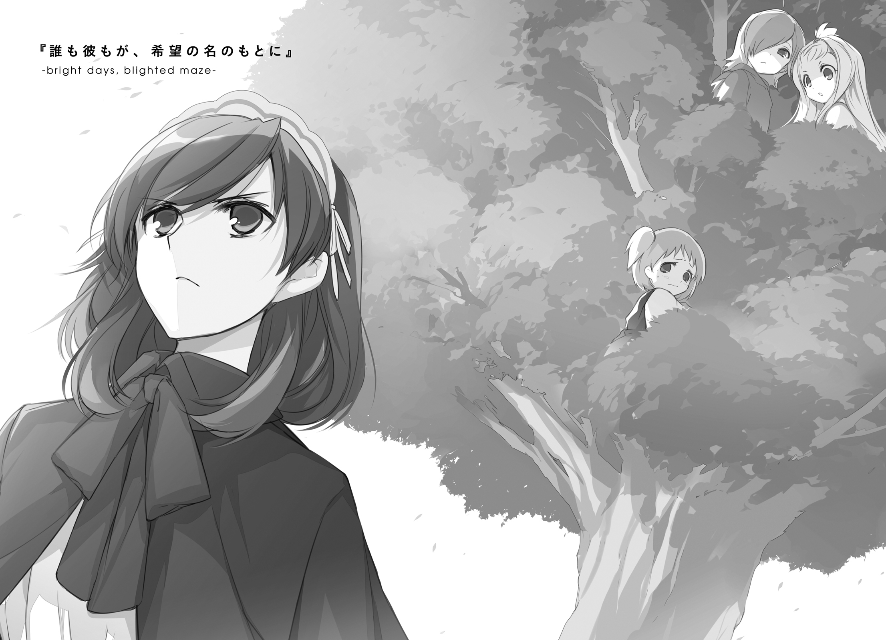
１．秘密会議
『なんだか、おかしなことになったわねぇ』
まるで他人事のようにつぶやく、妙な声が聞こえた。
ネフレンにしてみれば、そもそもこの声の主こそが「おかしなこと」の筆頭である。
「............」
ちょいと視線を上に向けると、朱銀の鱗を持つ空魚──のように見える何かが、悠然と空中を泳いでいた。
よく見ればその体は半ば透けていて、幻像か幽体のようなものであろうことはすぐにわかる。問題は、その幻像だか幽体だかのお魚さんが、どうしてこんなところにいて、どうして吞気なことをしゃべっているのかだ。
『アタシゃ、あんまりのんびりしてらんない身なんだけどねぇ。さっさと黒燭公のやつと話つけて、迷子の子供を捜しに行かないとなんだけど』
「うん、賛成」
のんびりしていられないのは、ネフレンも同じだ。
その、いーぼん何とかという人のことは知らないが、自分は自分で、迷子の大人を捜しに行かなければいけない身だ。いつも強がっているけれど寂しがりやで、いつどこで壊れてしまってもおかしくない繊細さを抱えたあの面倒な人間──ヴィレム・クメシュを。
『──残酷なことを言うけど、その希望はないのよね、たぶん』
空魚が、天井近くをふわふわと漂う。
自分にしか見えてもいないし聞こえてもいないと承知の上で、ネフレンはそちらを見上げて、問いかける。
「どういうこと？」
『ヴィレムってあの、黒髪でちょっとカッコいい感じの男の子でしょ？ カレならもういないわよ。完全に人間やめて〈獣〉に還ったとこ、アタシ、この目ではっきりと見たもの』
くりくりと魚の目を動かしながらそんなことを言う。
『無事ではいるかもしれないけど、もうあなたたちの知るカレとはまったくの別物。ヘンな期待は捨てておいたほうがいいわ』
「それなら、それでもいい」
首を振る。
「ヴィレムが何に変わっていても、私がやることは変わらない。隣に行くだけ」
幸い、いまの自分は〈獣〉にとって敵ではないらしい。ならばヴィレムが〈獣〉に変わってしまったとしても、その隣にいることはできるはずだ。たぶん。きっと。
『いくら愛情が深くても、それで奇蹟が起きるとは限らないのよ？』
よくわからないことを言われた。
なんでここで、愛情なんて言葉が出てくるのだろう。
そういうのは、クトリみたいな子の専売特許のはずだ。自分は、そういう前向きっぽい何かのために彼に寄り添っているわけではない。
「......ん？ お嬢ちゃん、何か言ったか？」
ソファの隣に座る緑鬼族の青年が、こちらを振り返った。
「ただの独り言」
ということにしておこう。
もちろん、独り言というのは正確な事実ではない。紅湖伯の姿はネフレン以外の誰にも見えず、その声もやはりネフレンにしか聞こえない。だからその会話は必然的に独り言のように聞こえてしまうというだけのことだ。
この、幻覚とも何ともつかない謎の空魚の存在については、既にいちおう説明してある。が、その間で交わしているただの雑談についてまで説明をするのは面倒だった。
「気にしないで」
「そうか。まぁ......落ち着かねぇ気持ちは、よくわかるぜ」
緑鬼族、ええと確か名前はグリック、は苛立ちを隠そうともせず、がりがりと禿頭を搔く。
ここは、護翼軍の所有する大型飛空艇の、接客室である。
壁紙には豪奢な花模様が描かれているし、天井は高いうえにシャンデリアめいたものが吊り下げられているし、窓のカーテンはやたらと分厚くて高そうな生地を使っているし、調度にはやたらと金色の装飾が施されているしで、つまるところ成金趣味丸出しの空間である。ぶっちゃけ居心地はかなり悪い。
確かにグリックの言う通り、あまり落ち着けるような場所ではなかった。
「いつまでこんな、カネモチくせー部屋に閉じ込められてなきゃいけねーんだ」
「待たせたな」
重たそうな扉がゆっくりと開き、一人の軍人が部屋に入ってきた。
毛の白い兎徴人。その肩には、一位武官の階級章。
「最近、護翼軍は微妙な立場にある。厄介な客の応対で時間をとられた」
「そっちの事情は、知らねーな」
不快そうに、グリックが吐き捨てる。
「護翼軍は特定の浮遊島に所属しない。逆を言えば、すべての浮遊島の支援を受けねば存続できん。少なくとも建て前はそういうことになっている。そこにつけ込み要求を通そうとしてくる厚顔な島があるのだよ」
「だから知らねーっつってんだろ。もっと先にする話があんだろ？ 違うか？」
「ふむ」
兎徴人は小さく頷く。
「もっともだ。少々遅れたが、名乗らせてもらおう。私の名はバロニ＝マキシ、この通り、護翼軍の憲兵科で一位武官を務めている──」
「だから、あんたがどこの誰ってのも、この際どうでもいいんだよ」
グリックは身を乗り出すようにして、
「知りたいことは一つだけ。俺たちは、どこに連れてかれようとしてんだ？」
「君にまで留まってくれと言った覚えはない。我らが必要としているのは、遺跡兵装適合精霊ネフレン・ルク・インサニアただ一名のみだ」
ん。名を呼ばれたネフレンの眉が、少しだけ動く。
インサニアも持っていない上に、よくわからないものが混じってしまっている。自分がネフレン・ルク・インサニアである自信が持てない。そんな自分をまだその名で呼んでくれるのかと思うと、なんというか、ちょっと嬉しい。
「うるせえ、ゴタゴタ言ってねぇでその一名を解放しろっつってんだ！」
ばん、と高そうなテーブルが激しく叩かれる。
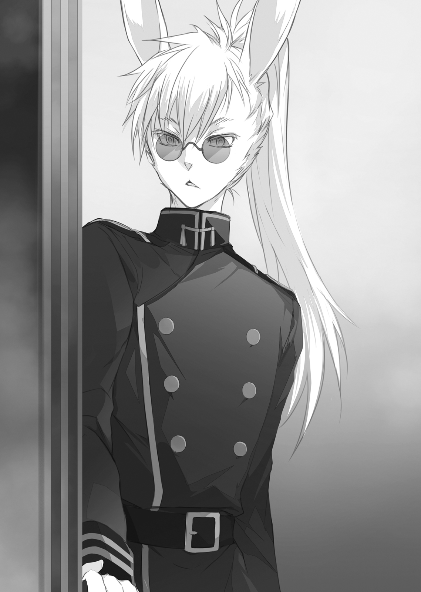
「この子はな、アイツがどうしても家に帰してやりたいと願った子なんだよ！ そのためにアイツは命まで懸けたんだ！ 家じゃ、大勢の家族が待ってんだよ！ どうしてそーいう、当たり前のことがわかんねーんだ！」
何やら熱く燃え上がっている。
いい人だな、と思った。鬼だけど。
使い捨ての兵器（しかも使用済み）でしかない自分のことを、一人の子供として、本気で気遣ってくれているのが伝わってくる。
ただ、その気遣いは、少しだけずれている。妖精倉庫は確かに家族のようなものだが、そこに誰かが帰ってこないなどということは当たり前の日常の一部だ。待っている者など......いや、それがいないとまでは言わないけれど。急いで帰ることには、それほどの意味はないはずなのだ。
もちろん、そんなことを声に出したりはしないけれど。
そんなことを考えながら、ネフレンはいつも通りのぼんやりした無表情を浮かべる。
「──グリック・グレイクラック」
バロニ＝マキシはやれやれと呆れたように首を振り、
「君のことは調べさせてもらった。一度は、護翼軍に身を置いていたそうだな。半年ほどで退役したが、当時の人脈や資産を元手にしてサルベージャー稼業を始めたと」
ちっ、とグリックが舌を打った。
「有能だったと聞いている。惜しいことだ」
「昔のことだ、もう忘れた」
「それでも、軍服に身を包んでいたことがあったというのは事実だろう。ならば、聞き分けのないふりをするのもやめたまえ。話がこじれれば、余計に時間がかかるだけだ」
「そーいうのが合わねーから辞めたんだ」
不満も露わな顔で、グリックは背中をソファの背もたれに投げ出した。
「......待って。私もひとつ、聞きたいことがある」
ネフレンは片手を挙げる。
「結局、ヴィレムはどこなの？ 居場所の見当はついた、って聞いたけど」
『あ、はいはいはい！ エルクのことも！ うちの子の居場所も聞いてお願い！』
ネフレンにしか聞こえないらしい紅湖伯の声が、耳元で騒ぎ立てる。
『ここって、黒燭公の組み立てた世界の内側でしょ？ 気配が拡散しちゃって、よくわかんないのよ。あの子の場所』
「......あと、もう一人、小さな子が近くにいたはず、らしいんだけど」
「ああ、ヴィレム・クメシュ二位呪器技官のことだな。小さな子、というのはよくわからないが......例の幻覚がそう言っているのか？」
ネフレンは頷く。
バロニ＝マキシはつまらなそうに小さく鼻を鳴らし、
「正確に把握しているわけではない。が、確かに見当はついている。かねて疑惑のあった相手だが、君たちが具体的な証拠を持ち帰ってくれた」
「は？ 俺たち？」
視線を向けられた当のグリックが、きょとんとして目を瞬かせる。
「エルピス集商国。知っているな？」
ネフレンは頷く。グリックは頭を搔きながら、
「あれだろ、13番島の西側半分。なんとかいうでっかい石を神様だって言って崇めてる連中の国。入国税がやったら高ぇんで、行ったこたぁないんだが」
「そう、その国だ。彼らは様々な種族により構成される多種族国家だが、信教をひとつに統一することで国としての治安を得ている。そのためか国民性として自尊心が高く、国策も強気だ」
「まぁ、そうだな。それで、その連中がどうした？」
「君たちが地上で発見した野営跡および兵糧の缶は、彼の国の国防空軍のものだ」
「そういう話の流れだな。それで、そいつらが何したって聞いてんだよ」
「総合的に考えて、エルピス国防空軍の偽装飛空艇が、複数の〈獣〉を地上から持ち帰った疑いが極めて濃い」
──沈黙。
「え？」
「は？」
ネフレンとグリック、二人の疑問の声が重なった。
「悪ぃ。よく聞き取れなかったんだが、今なんて」
「エルピスの連中が、浮遊大陸群に〈獣〉を持ち込んだ、と言ったのだ」
──再び沈黙。
「何故そんなことを？」
先に我に返ったネフレンが尋ねた。
「〈獣〉を持ち込むなんて、大陸群の憲章に完全に反してる。危険なものだということもわかっているはず。それに、そもそも遭遇するだけで危険なものをどうやって『持ち込む』なんてことができるの？」
「簡単だ。あの連中は以前から、近隣諸島との政治的取引のカードとして、『浮遊大陸群の守護者』という肩書きを欲しがっていた。そのため、ずっと護翼軍が独占してきた〈六番目の獣〉との戦いに首をつっこみたがっていたのだよ」
「はぁ？」
グリックがますますワケがわからないという顔をする。
「珍しいことではない。
大陸群全体を守るという使命を持った護翼軍は、およそ大陸群にあるすべての軍事組織の中でも、特権的な立場にある。そして、〈獣〉との戦いおよびそれに関わる情報、さらにはそこで遣われる兵器を独占している。そのことを面白く思わない者はとても多い。エルピス国防空軍は、その中でも特に気が短い連中だということだ」
「......何でまた、好き好んであんなおっかねぇ連中に関わりたがるんだ？」
「その説明は容易だな」
バロニ＝マキシは二本だけ指を立て、わざわざ一本ずつ手折りながら、
「ひとつめは、まさに『おっかねぇ』からこそ利益につながるということ。ふたつめは、そもそも護翼軍が〈獣〉の具体的な情報をほぼ独占しているため、その恐ろしさを直接知る者が極めて少ないからといったところか」
「まじかよ」
知らねぇって怖ぇな、とグリックは絶望の表情で天井を仰ぐ。
「潜り込ませていた工作員からは、彼らが最近、対〈獣〉戦用の兵器を幾つも開発したと報告を受けている。その中には、捕縛用の新しい結界術も含まれているらしい。つまり今の彼らには、〈獣〉を連れ帰る手段が存在する」
バロニ＝マキシの耳介が、片方だけくいくいと折れる。
「むろん、事が表に出れば憲章違反の謗りを受けることには違いない。そこまでして断行した理由までは現状では何とも言えんな」
「待って。それじゃまだ、説明になってない。ヴィレムの居場所の話はどうなったの」
「今の情報から推してみるといい。結論はひとつしかないはずだ」
どういう理由か、エルピス国防空軍は地上で見つけた〈獣〉を空へ運んでいる。そして今のヴィレムは〈獣〉へと変じている。つまり、どういうことになるのか。
ああ、なるほど。歯車ががっちりとかみ合っている。確かに行きつける結論は、ひとつしかない。ネフレンはソファから立ち上がる。
「どうしたお嬢ちゃん？」
「13番島に行く」
「君にはその前に行ってもらう場所がある」
「どいて。連れてってとは言わない。自分で行くから」
魔力を熾し、翼を広げた。
「いやいや待て待てさすがにそれはやめとけ」グリックが慌てる。
「エルピスは広いぞ」バロニ＝マキシの声は落ち着いている「国家を称する規模の都市群の中から、当然隠蔽されているであろう軍施設ひとつをどうやって探し当てる？」
......焼き払うとか？
「そもそも、連中が空に連れ帰った〈獣〉で何をしようとしているのかすら明確ではないのだ。焦れば、それだけ解決が遅れる。今はそういう時期だと思え」
「それは......うん」
翼を畳み、ソファに腰かけ直す。
「二位技官の行方が判明し次第、ネフレン君にも伝えよう。だから今は大人しく機を待っていてほしい」
「うん......」
「エルピスのやろうとしていることは、我々としても放置できることではない。調査は全力で行うし、その過程で二位技官の情報が入ることもあるだろう。少なくとも、君個人が走り回るよりは効率的なはずだ」
「うん......わかった、ありがとう」
「礼には及ばない」
身を翻し、背中で語る。
「今のネフレン君は、極めて特殊な状態にある。後のことを考えれば、積極的に機嫌をとっておくことには充分なメリットがあると判断しただけだ──そろそろ失礼する」
かつん、と靴底が床を蹴る軽い音。有言実行、兎徴人の一位武官は扉の向こうへとその姿を消していた。
「......私、ご機嫌、とられてたの？」
『いやこっちに聞かれても、知りゃしないわよ。自分の気分に聞きなさいっての』
「うーん」
首をひねる。
目を閉じて、心を鎮めて、それから自分自身に問いかける。
「はい」か「いいえ」のどちらかで答えてください。
あなたは、浮遊大陸群を滅ぼしたいですか？
少し考えてから、答えは「いいえ」。
大丈夫。自分は大丈夫だ。ここで「はい」を選ぶような何かに変わってはいない。
確かに、中身も方向性もない焦燥感が、胸の中で渦巻き続けているのを感じる。けれどそれは、ネフレン自身を飲み込むような類のものではない。
それはきっと、黄金妖精が人間を偽装するものであって、人間そのものではないからだ。人間を〈獣〉へと換える......あるいは還すこの衝動は、人間に似たネフレンの中に蟠ることはあっても、その本質を変えていくには届かない。
けれど、ヴィレムの場合、そう易くはいかない。
正真正銘の人間であり、今ネフレンが抱えているものと同じだけの量の衝動を内に注ぎ込まれたであろう、彼の場合は。
──きっと、自分と同じようには、耐えられないはずなのだ。
『完全に人間やめて〈獣〉に還ったとこ、アタシ、この目ではっきりと見たもの』
紅湖伯の言葉を、信じたわけじゃない。けれど、積極的に疑うこともできない。
彼が何に変わっても隣に行くだけ。それは半分くらい本心で、半分くらいは強がりだ。
あの人には、まだもう少しだけ、踏みとどまっていてほしいと思っている。
だって彼は、あんなに優しくて、あんなに懸命なのだから。
自分たち妖精のように、生まれながらにして空っぽな終わりを運命づけられているような寂しい存在ではないはずなのだから。だから。
せめて、あのどこまでも忙しい準勇者に、人間として生きた彼に、一筋の救いを。
そう、願わずにはいられない。
２．終わりの足音
妖精倉庫に、珍しいタイプの客が来た。
ぱりっとしたスーツ姿の豚頭族と、その護衛であろう屈強な獣人たち。
「......どちらさまかしら？」
「失礼。我々はこういう者です」
ナイグラートは差し出された名刺を受け取り、一瞥して、表情を引き締める。
「お話は外で」
「おや。中には入れていただけないので？ 今ここの管理者はあなた一人きりだと聞いています。誰の耳があるわけでもないでしょう？」
「お話は外で」
ナイグラートは硬い声で繰り返すと、玄関先にかけておいた外出用のコートを肩にひっかけた。肩をすくめる豚頭族が道を空ける。
「市街地まで歩くけど、構いませんよね？」
「お勧めの場所などあれば」
「こんな田舎に、選択肢はありませんけど」
澄ました顔のナイグラートが、先導して道を歩き始める。男たちがそれに続く。
「......あやしいな！」
妖精倉庫そばに生えた一本の樹のてっぺん。右手を庇にナイグラートたちの背中を見送りながら、コロンが言った。
「ナイグラートがあんな顔をしているところは、初めて見るな」
その樹の半ばほどまで登ったところ、幹に背をもたれたパニバルがつぶやいた。
「彼女がかしこまらないといけないほど、地位の高い相手だったようにも見えないが」
「うむ。そういうのとは、なにかちがう気がする」
コロンとパニバルが、揃って首をかしげる。
「二人とも、降りようよぉ......この樹、危ないから登っちゃだめだって、先輩たちに言われてたでしょぉ」
だいぶ低いところ、太い枝にしがみつくようにしているラキシュが、二人を見上げて今にも泣きそうな声で訴える。
「おんなに生まれたからには、たかみをめざすものよ！」
コロンがびしっと空を指さした。たぶんポーズに大した意味はない。
「わたしたち妖精にとって、敏捷性の維持は有意義なことだよ。これも特訓の一環だ」
しれっとした顔で、パニバルが屁理屈をこねた。
「そういう問題じゃないよぅ、見つかったら怒られるよぅ」
「それは嫌だな。その時はラキシュを置いて逃げよう」
「うむ、しんがりはまかせよう！」
ひどいよぉ、とラキシュは涙目で笑う。と、
「こらお前らぁ！」
二階の窓から、ノフトの怒声が聞こえてきた。
「落ちるのが怖いって思えないうちは木登り禁止だって、前から言ってるだろーが！」
「だから言ったのにぃ」ラキシュが泣きべそをかく。
「こわさをしるために、のぼってるの！」コロンが開き直って胸を張る。
「いま、ナイグラートが客人たちと一緒に出ていった」パニバルが、しれっとした顔で話題を強引にそらした。
「......客？ 誰だ？」
「知らない顔だ。彼女にしては珍しく、ずいぶんと澄ました顔をしていたよ」
「澄まし顔？」
ノフトは眉をひそめ、部屋の中を振り返る。
「どう思う、ラーン？」
「話を振られましても、肝心のその彼女の顔を見ていないので何とも」
「そりゃそーだけど。何か嫌なものを思い出したりしないか？」
「しますよ」
七年か八年か、そのくらい前のことだ。コロンたちは覚えていないか、あるいはそもそも知らないだろう。けれど、ノフトとラーントルクははっきりと覚えている。
当時、ひとつの、ガラの悪い豚頭族の犯罪組織があった。
それが、ある夜、突然なくなった。
具体的に何があったのかを、ノフトもラーントルクも知らない。子供は夜は寝るものだと教えられていたし、反抗する勇気はなかった。うっすらとした記憶を辿れば、やたらと獣の遠吠えのうるさい夜だったような気がする。
その日を境に、この島に住む人々のナイグラートに向ける目が、がらりと変わった。
親愛なる隣人に対するものだった態度が、獰猛な肉食獣のような扱いへと変化した。
具体的に何があってそういうことになったのか、ノフトもラーントルクも知らないし、今さら知りたいともあまり思わない。
ラーントルクは読みかけの本をぱたんと閉じて、小さく息を吐く。
「歴史が繰り返されたりしなければ、いいんですけど」
市街地、おなじみの軽食屋。
他に客の姿はない。店員は、注文した飲み物を人数分持ってきた後、ぶるぶると震えながらカウンターの奥へと引っ込んでしまった。
「端的に要件を申し上げますと」
豚頭族は軽く身を乗り出して、親し気な笑みを見せる。
「ナイグラート嬢。我々は、あなたを引き抜きにきました」
「......そうですか」
ナイグラートは静かに答えて、紅茶に口をつけた。
苦くてまずい。吐き出したい気持ちを堪えて、テーブルの上へと戻す。
「勝手ながら身辺を調査させて頂いたのですが、驚きました。若くして総合学術院で修めた資格の数、在学中の成績、どれをとってもあなたは一流の人材だ。だというのにオルランドリは、その人材をこんな辺境で無駄にしている」
「......それはどうも」
そういえば、そうだった。ナイグラートは思い出す。
自分は、ちょっとしたエリートコースを歩んでいたはずだったのだ。
出世に役立ちそうな資格をいくつもとって、大きな商会に就職して、とんとん拍子に偉くなって、お金を稼いで素敵な人と巡り合って。
そんなキラキラした人生を夢みて、途中までは達成した。
商会内部で、ちょっとした権力抗争に巻き込まれた。とばっちりで、辺境の閑職に飛ばされた。あの直後は、順調だった人生の急な方針転換に驚いて、少しばかり荒れていた気がする。当時の倉庫の子たちには怖い思いをさせちゃったなぁ......などと、少しだけ懐かしい気分で思い出す。
「我々は違う。当然のことですが、あなたの能力に見合った待遇で迎えさせて頂きたいと思っています」
「それはどうも。でも、なぜ私を？」
「聡明な貴女のことだ、予想はついていらっしゃるのでしょう？ 護翼軍とオルランドリの決戦兵器、危険な黄金妖精を飼い慣らし続けてきた手腕と経験を、我々は特に高く評価している」
思わず勝手に動きそうになった手を、意志の力で抑えつけた。
「先ほど、兵舎そのものを拝見しての率直な感想ですが......オルランドリは何をしているのでしょうかね。あれではまるで、潰れかけた農場の厩舎だ。黄金妖精に自分たちの命運をまるごと託していながら、その管理にはまるで予算を割いていないと見える」
「上には、上の事情があるのでしょう」
ナイグラートは静かに答えた。
もちろんナイグラートは、その事情というものをよく知っている。だがその詳細について、目の前の男たちに対して詳細に語ってやるつもりはなかった。
それにどうせ、この連中のことだから、その辺りについてはとっくに調査済みだろう。わざわざ語って聞かせてやる道理はない。
「それは、ええ。仰る通りですとも」
豚頭族は嬉しそうに何度も頷いてみせる。
「そしてその事情がゆえに、彼らはもうすぐ、黄金妖精の独占を放棄する。護翼軍以外の組織が、あの強大な兵器を手にする時代がくる。そして、質の良い黄金妖精を調教できる商会が、その時代を先導するのです」
両手を広げて、楽し気に語る。
「我らエルピス集商国が、オルランドリに代わってその椅子を獲る。あなたはそのために必要な人材だ、最高の待遇でお迎えする用意があります」
「それは、過大な評価、ありがとうございます」
にこりとも笑わず、ナイグラートは淡々と答えた。
「ところでお聞きしたいのですが、もしこのお話、お断りさせてほしいと答えたならば、どうなさるおつもりですか？」
「それは──もちろん仮の話としてお答えしますが」
豚頭族が顎を撫でた。
左右を固める獣人たちが、がたりと荒々しく立ち上がった。
「彼らは、女性にお願いを聞いてもらうことが得意なのです。ただ、その手段は個人的に好みではない。愚かな選択はおやめなさい」
「そう？」
ナイグラートは獣人たちの顔を一瞥してから──
今日この場で初めて、笑ってみせた。
「ごめんなさい。私、お肉のまずそうな人って嫌いなの」
「やれ」
一瞬で真顔になった豚頭族が命じ、獣人の一人が動いた。テーブルを蹴り倒し、丸太のような右腕を伸ばすと、ナイグラートの首を摑む。そのまま絞め上げる。
カウンターの奥で、店員が甲高い悲鳴をあげた。
「──ああ、失礼」
豚頭族がそちらを向いて肩をすくめる。
「少々お騒がせします。これから壊してしまうかもしれないテーブルや椅子などは、後で倍額にして弁償させていただきますよ」
「あら、太っ腹なのね」
「大きな事業には、それにふさわしい予算が下りるものです。はした金を惜しむ者に大金は摑めない。我々はオルランドリとは違うので......す？」
ナイグラートは、平然とした顔をしている。豚頭族はそのことにようやく気づく。
そんなはずは、ないのだ。
獣人の膂力で首を絞め上げられて、華奢な徴無しごときが平然としていられるはずがない。呼吸を止められ、声など出ないはずだ──驚愕した視線が、そう叫んでいる。
「何を驚いてるの。私のプロフィール、調べたのよね？ 喰人鬼だってことも知ってたはずでしょ？」
「そ、それは......いやしかし......」
「喰人鬼がどういう種族なのか、のほうを知らなかったのかしら。一般的に徴無しは体格が貧弱だから怖くないだろう、とかそんな感じ？」
豚頭族の呆然とした顔は、果たして肯定なのか否定なのか。
「けっこう有名だと思ったんだけど。私たち、他の人たちよりちょっとだけ頑丈だし、ちょっとだけ力が強いの。本気で人をスカウトしたいなら、そういうの、ちゃんと勉強してからにしておいたほうがいいわよ？」
にっこりと笑って、自分の首を摑んだままの獣人の腕に、手を添える。
鋼のような筋肉に、ナイグラートの指先が沈んでいく。獣人が悲鳴を上げる。
「......それで。これから壊れちゃうものは、倍額で弁償してくれるんだったわよね？」
「え？ あ......え？」
「そういうことなら、私も安心」
ナイグラートはカウンターのほう、ぶるぶる震える雇われ店員へと顔を向ける。彼らは喰人鬼がどういう種族であるかをよく知っている。話が早くて助かる。
「ねぇ、後でご主人に伝えて。新しい店が完成した時には、ぜひお祝いさせてねって」
豚頭族が、疑問を目に浮かべた。新しい店とは、いったいどういう意味なのかと尋ねようとした。しかしその問いは言葉にならなかったし、その必要もなかった。答えは彼のすぐ目の前に転がっていた。
ぶん、と喰人鬼が軽く腕を振った。大して力を込めていたようにも思えないその動きだけで、獣人の一人が軽々とほうり上げられ、傍に立っていたもう一人を巻き込み吹き飛んだ。頑丈なはずのブ厚い木製のテーブルがいくつもなぎ倒され、飴細工か何かのように簡単に砕けていく。
「は？」
獰猛な咆哮を上げて、別の獣人が喰人鬼に飛びかかる。目の前の相手がただの怯える女ではなく、最悪の化け物なのだと認識を切り替えている。単純な力では勝てないからと、腕をとり、床に組み伏せようとする。一度そうしてしまえば、単純な力だけでは切り返すことができないはずだった。
「あら、情熱的」
ぶん、と再び喰人鬼が腕を振った。
獣人があっさり吹き飛んで、頭から天井に突き刺さった。
体格差も。武技への練度の差も。本来戦いという場において大きな違いを生むはずのそれらの要素が、何の役にも立たない。
「あ、ああ......」
腰がくだけ、豚頭族はその場に座り込む。
その姿を見て、喰人鬼は優しく穏やかに、そして凄艶に笑った。
悲鳴。絶叫。破壊音。破砕音。もうひとつおまけに悲鳴。
そんなこんなで、この日ひとつの軽食屋が、68番浮遊島から姿を消した。
「報告ハ聞イタ」
通信晶石越しに見る爬虫種の顔は、いつも通りいまいち読み取りにくくはあるものの、どうやら呆れているように見えた。
「派手ニヤッタヨウダナ」
「連中が悪いのよ」
しれっと答える。
「うちの大切な子たちを、私の目の前でモノ扱いするんだもの。万の死に値するわ。
あ......それと、大の男が何人もかかって、力にものを言わせて女を言いなりにしようとしたのよ？ よく考えてみれば、これもちょっと許されないことのはずよね」
「貴様ラシイ順序ダ」
フン、と〝石灰岩ノ肌〟が鼻を鳴らす。
「ソレヨリモダ。少シ、伝エルベキコトト、頼ラネバナラヌコトガアル」
「......何それ」
眉をひそめる。
「話があるならいま聞くし、できることがあるならやるわよ？」
「虫ガツイテイル」
虫。
......盗聴、されている？ 通信晶石での会話が？ 誰に？ どうやって？
いま自分たちが使っている晶石は、軍と商会の間の重要な連絡を行うためのもの。そうそう簡単に余所から聞かれるようでは存在意義が疑われる。
そんなことが、本当に可能なのか。可能だとしたら、その手段は何か。〝石灰岩ノ肌〟の表情に焦りは（たぶん）ない。ということはつまり、盗聴されているということ自体には緊急性はないということで......
気づいた。
ああ、なんだ、そういうこと。
この回線は、やはり、そう簡単に余所から聞かれるものではない。ならば答えは簡単で、余所ではない場所から聞かれているのだ。
虫は、〝石灰岩ノ肌〟のすぐ近く。護翼軍の中にいる。
護翼軍は一枚岩ではない。特に黄金妖精の扱いについては意見が割れている。同じ組織の身内の中にも、味方ではない者が交じっているのだ。
「それって、放っておいてもいいものなの？」
「ワカラヌ。ソノ判断ハ誤レヌ。ダカラコソ、頼ミタイ」
「了解よ」
ぐっと息を吞む。
「ちょっとくらいわかりにくい言い方してもいいから、何でも言って」
〝石灰岩ノ肌〟の小難しい言い回しは、付き合いの長い自分でも聞き取るのにそこそこ苦労する。そこをうまく使えば、盗聴者を出し抜くこともできるかもしれない......そんなことを考えながらそう言ったが、
「こるなでぃるーちぇニ来イ」
「は？」
こんな時に限って、めちゃくちゃシンプルに要件を語られてしまった。
「コルナディルーチェ市に......え？ 私が？ 行くの？」
「ソウダ。ソレト、戦闘可能ナ成体妖精兵タチヲ全員連レテコイ」
「ちょ、ちょっと待って。あの子たちもって、それ、どういう名目でやるの」
「......コチラニ案ハナイ。策ハ任セル」
「ちょっとぉぉ！」
妖精たちは軍とオルランドリの所有する兵器だ。今後その状況が変わる可能性はあるにしても、少なくとも今のところはそうなっている。特に成体の妖精兵は浮遊大陸群を守る戦力の要だ。そうそう気軽にあちこちに連れ出すことは許されない。何らかの正当な理由、できれば作戦の発令が必要だ。
ナイグラートは、オルランドリの商会員だ。そして商会員がアイセアたちを連れて勝手に島を出たならば、護翼軍の中の一部に、妖精倉庫叩きの格好の材料を与えてしまうことになるだろう。それは、長期的に見て、倉庫の寿命を縮めることになるはずで、
「我モソノ地デ待ツ」
......ああ。なんだ。そういうこと。
長期的に見て悪手であることなど、当然〝石灰岩ノ肌〟も承知している。その上で、策をこちらに丸投げしてとにかく顔を出せと言ってきているということは。無理を承知で、そうすることが必要だと判断されているということだ。
それだけ目の前の状況が逼迫しているのだろうか。まさか、長期的なことを考える必要が既にないなどということではないと信じたいが。
「わかったわ。なんとかしてみる」
詳しい事情を聞き出そうとしても、今は無理だろう。隠されているのであろうあれこれは、顔を合わせたその場所で聞き出すことにする。
「......せっかく戦いの話をしないで済むようになったのに、なかなか、明るい話はできないものなのね」
通信を切る前に、少し愚痴っぽくそんなことを言ったら、
「目ノ前ノ敵ガ消エレバ、誰モガ、次ノ敵ヲ隣人ノ中カラ探シダス......」
珍しいことに、やはり愚痴のような言葉が返ってきた。
「オソラク、平和コソガ最モ恐ロシイ災厄ナノダト、誰モガ識ラズニ心得テイルノダ」
さて、難しい問題を押し付けられたものだ。
剣を持つ成体妖精兵を全員連れて来い......ということは、対象になるのは。
アイセア・マイゼ・ヴァルガリス。
ラーントルク・イツリ・ヒストリア。
そして、ティアット・シバ・イグナレオ......この三名だ。
ノフトは成体妖精だが、適性を示していた遺跡兵装デスペラティオが失われてしまったため、今は専用の剣を持っていない。小さな子供たちばかりを残していくのも不安だし、年長者である彼女に留守を任せるのがいいだろうか。......あまり思慮深いとはいえない彼女を年長者としてカウントすることにわずかな不安はあるけれど、そこについては積極的に目をつぶっていくことにしたい。
そうなると、考えなければいけないのは、名目だ。
浮遊大陸群を守るための戦力すべてを引き連れてコルナディルーチェ市まで飛んでいくならば、どれだけ強引なこじつけでもいいから、大義名分が欲しい。
「うーん......」
考え事をしながら、廊下を歩く。
たとえば、買い出しというのはどうだろうか。いや、どうもこうもない。いったい何を買おうとすれば、68番から11番まで空を渡る必要が生じるというのか。もっと近場で済ませろと言われれば返す言葉がない。
ならば、観光というのはどうだろうか。コルナディルーチェは浮遊大陸群屈指の古都であり、あそこにしかない名所がたくさんある。さすがにそれに関しては近場で済ませることは不可能だ......が、うん、そもそも吞気な理由が通るはずがない。わかってた。
それなら、他にどういう手があるだろう。コルナディルーチェに駐留している兵力を相手に模擬戦を申し込んでみるとか。いやそれじゃ受理された後じゃないと言い訳に使えない。じゃあ許可は事後承諾で済ますということで強引に模擬戦を仕掛けてみる。いやいやそれ単に戦争が始まるだけだ。
案が浮かばない。困った。どうしよう。
そんなことを考えながら、厨房に寄って紅茶を淹れた。雑念だらけの状態で淹れたせいか妙に酸っぱいものが出来上がってしまったが、まぁ、昼間に飲んだものよりだいぶましだ。とりあえず喉に流し込んでいったん落ち着こう、とカップを傾けようとしたら、
「あ、あのっ、いま、いいですかっ」
橙色の髪の小さな妖精......ラキシュが隣に立っていた。
「......ええと、ごめんなさい。いまちょっと考え事をしてて」
「あ......はい、すみません......」
しゅん、と肩を落とす。
「後で出直します」
「あああああ、ちょっと待って。ごめんなさい、優先順位間違えてた」
こみあげる罪悪感がナイグラートを早口にさせる。
「あなたたちを後回しにしたんじゃ、元も子もないわよね......どうかしたの？」
「あ、はい......いいんですか？」
「もちろん。今度は何かしら。またコロンが窓でも割った？」
「いえ、今日のはそうじゃなくて、わたしのことなんですけど」
「あらま」
珍しいこともあるものだと思う。
幼い妖精たちは基本的に天衣無縫というか破天荒というか、とにかくそういう方向で元気な子ばかりなのだが、ラキシュはその中の数少ない例外だ。暴走しがちな他の妖精たちのそばで、いつも制御役を務めている......制御しきれているかどうかはさておき、そうあろうとしている。
その彼女が自分について何かを報告してくるなどということは、これまでなかったように思う。
「どうしたの、植木鉢でも割った？」
「いえその、そういうのじゃないんですけど」
言いにくそうに口ごもってから、意を決したように、
「夢を見たんです」
「............ん？」
一瞬、意味がわからなかった。
「さっき、お昼寝してるときに、見たんです。
すごく暗いところで、こう、色んな光に囲まれている夢でした。その光が、本みたいにお話が読める光で、その......あうう、うまく説明できません......」
ええと。それは。
「もしかして、例の、〝特別な夢〟？」
「あ、はい！」ラキシュは勢いこんで「それは間違いないです。起きたとき、すぐにわかりました。今のがそうだったんだ、って」
幼体の少女たちは、ある時期になると、必ず、ある夢を見る。
行ったことのないはずのどこかで、見たことのないはずの光景を見て、会ったことのないはずの誰かと話した。そんな夢だ。どこまでも幻想的な世界の中で、しかしそれがどこまでも現実的な手触りを持って感じられる──
そして、目を覚ました瞬間に、理由もなく確信できてしまうのだ。この夢は特別だ。自分はたった今、何か大切なものと繫がったのだと。
それが、幼年期の終わり。成体の妖精になる準備ができたということを意味する。
「............」
幼体が、特別な夢を見た。
ならばその次にやらなければならないことは何か。体の調整だ。一人前の成体妖精兵として活動ができるようにと、身体のデータをとりつつ体質をいじらなければならない。
「そ」
「そ？」
そのためには、コルナディルーチェ市にある総合施療院まで、この子を連れていかなければならない。
これは、妖精倉庫の管理に携わる者としての、当然の義務だ。
義務ということはつまり、大義名分だ。
「それよぉ！」
感極まって、目の前のラキシュに抱きついた。
「ひゃあっ!?」
もちろん全力で抱きしめたりなどしたら、ラキシュの上半身と下半身が泣き別れしかねない。マシュマロに触れるようにやわらかく丁寧に、それでも獲物を逃がさない程度には力強く。かつてナイグラートが苦労して身に付けた、ハグの極意である。
「ああもう、ラキシュあなた、本当に気の利く子！ 大好き！」
「え？ え？ え？」
混乱して、ラキシュは目を白黒させる。
３．過去のない男
重くねっとりとした泥の中から起きあがるような、そんな感覚。
一度身を起こすと、肌にまとわりつく黒いものが、ゆっくりと流れ落ちていく。けれど決してなくなったりはしない。足元に蟠り、決して離れてはくれない。
──それが、目覚めの瞬間の、彼の気分だった。
「う......」
ゆっくりと、目を開く。
真っ暗だった世界に横一列の光が差し、少しずつ大きくなって、そして至近距離から覗きこんでくる小さな女の子の顔になった。
「......え」
「あ」
まっすぐに視線が合った。
ぱちくりと、大きな緋色の目が一度まばたきするのを見た。
真剣だった表情が、ゆっくりと、満面の笑顔へと変わっていくのを見た。
「び......」
び？
「びれむ、気がついた！」
「......は？」
頭がうまく動かない。得体の知れない雑念のようなものが頭蓋の内側に渦巻いていて、何かを思い出そうとすることすらできない。びれむとは何だろう。とても聞き慣れた音のような、それでも少し違和感があるような。
「にるす、こっちきて！ びれむが起きてる！」
振り返り、その場でぴょんぴょん飛び跳ねながら、大きな声で誰かを呼ぶ。やけくそに長い赤毛が、ふわふわと柔らかそうに揺れる。
「あー、聞こえてるっての。あんま大声出すな、近所迷惑だ」
だるそうに後頭部を搔きながら、一人のくたびれた男が部屋に入ってきた。
そう、部屋だ。改めて見回せば──手入れの行き届いた、おそらくは宿の一室。
自分が寝かせられているベッドを含めて、調度は豪華でもなければ貧相でもない。相場は一晩で三十ブラダルといったところか──掃除が行き届いていることなどはぱっと見ただけでもわかるし、もう少し上の額かもしれない。
いや、そんなことはこの際、どうでもいい。
額の奥が鈍く痛んでいる。思考がまとまらない。どうでもいいことが気になって、大事なことのほうに意識が向かわない。
「よう、ヴィレム」
枕元まで近づいてきたその男は、真意の見えないにやにや笑いを浮かべて、そんなことを言った。
「......ヴィレム？」
「そうだ。お前の名前だよ。きちんと忘れてたか？」
ヴィレム。ヴィレム。なるほど。これが自分の名前。
言われてみれば確かに、音が妙に耳に馴染んでいる。しかし、そんなことまで言われなければわからないということはつまり、
「俺は、記憶喪失なのか？」
尋ねた。
すぐに、その質問のおかしさに気づいた。自分が記憶を失っているかどうかなど、自分自身にしかわかるはずがない。少なくとも、他人に尋ねるようなことではない。そう思った矢先に、
「まぁな」
まさかの返事があった。
「状況を簡単に説明すると、こうだ。
お前の記憶と人格には、今、ヤバいもんが巣食っている。そいつを表に出しっぱなしにしておくと肉体ごとヤバいことになる。だからこの俺様が直々に、記憶の大部分に蓋をして封じ込めてやった。間に合わせの応急処置だが、何せ俺の仕事だ、そうそう簡単にゃ解けねぇようにしてある。号泣して感謝しろ」
「いやどこが簡単なんだよ」
「うるせぇ、最初にややこしい状態抱えて俺の前に現れたのはどこの誰だ」
それを言われると、黙り込むしかない。
「......ここの俺ってことか？ 覚えてねぇけど」
「お前とこいつのコンビだな。二人で仲良く、厄介ごとを持ってきやがって」
大きな手のひらが、先の女の子の頭をばふばふと叩く。
「いたい！ いたい！」
「気にすんな、今さらこんなんで死に直しゃしねぇよ」
ぐりぐりと力任せに髪をかき回す。
「だめ、いたい、やめて！」
「わははは、そうかそうか」
ベッドの上で、上半身を起こす。
ヴィレムの腕が、目にも留まらぬ速さで動いていた。男の手を払いのけると、女の子をぐいと抱き寄せる。軽く小さな体が、ぽすんとヴィレムの胸板の上に乗った。
「ひゃっ」小さな悲鳴。
冷たいな、と思った。普通、このくらいの大きさの子供は、体温がやたら高いものと相場が決まっているのだが。
「事情は知らねぇけど、やめとけよ。嫌がってんだろ」
「......おう」
戸惑うように答えながら、男はなぜか、穏やかな目を見せる。まるで、このやりとりを懐かしんででもいるような。
腕の中の女の子は言葉を失い、息を止めて、顔を赤くして、目をぱちくりさせている。特に嫌がっているようには見えないし、しばらくこのままでいようと思う。
「それで？ さっきの口振りじゃ、あんた、この子にも何かしたのか？」
「怖ぇ顔すんなよ。少なくとも嫌がられるようなことはしてねぇぜ？」
「どの口で言ってんだよ。たった今、派手に叩いてただろうが」
「ありゃあ、ただのスキンシップだ。微笑ましいだろ、そう目くじらたてんなよ」
「あんた以外の当事者が笑えてない以上、その言い分は通らねぇよ」
睨みつける。
「変わらねぇなぁ......」
なぜか、しみじみと言われた。
「ま、いいさ。そいつは動く死体だ。いわゆる低級死霊の一種だな、笑えることに」
ちょいちょい、と指先で女の子を指さす。
「は？」
「いや、本来は不死身の体なんだがな。『死体にする』呪詛がかかってやがるから実質上は普通の死体だ。んで、このスペシャルな俺様が直々に、ほんのわずかにその呪詛をほどいてやった。その隙間から、半分くらいに砕けてスリムになった本人の魂が入り込んだ。肉体が百分の一、魂が二分の一くらいの、ささやかな復活ってとこだな」
「いやあんた、何言ってるのか普通にわかんねぇんだけど」
死体？ 死霊？ 不死身？ 魂？
普通に聞く言葉ではない、と思う（記憶がないから断言はできない）。少なくとも、そのどれもが、自分の腕の中にいるこの小さな女の子には似つかわしくない。
「疑うなら、剝いてみな。心臓が切り裂かれたまま、治ってねぇから」
「は？」
ほんと何言ってんだこいつ、とは思ったが、いちおうその言葉には従ってみた。女の子の服の首のあたりに指をひっかけて、くい、と手前に引く。隙間から中を覗き込む。
──胸元に深く刻まれた、大きな刀傷。
どう見ても致命傷だ。正しく生き物であるモノならば、こんなものを抱えて、生きて動いていられるはずがない。
「な......っ」
「ほれ、言ったとおりだろ？ 俺ぁ間違ったことはちょくちょく言うが、噓だけは絶対に言わねぇよ」
誇らしげに言うようなことではないと思ったが、ひとまずどうでもいい。いったい何がどうなっているのかと、改めて女の子の胸元に視線をやって、
（ん？）
血の通っていないはずの少女の、それなのになぜか真っ赤に上気した顔を見る。今にも泣き出しそうな勢いで、目もとに涙が溜まっている。
その理由を察した時には既に遅く。
「ばかあ────────っ!!」
その両手に、左右の頰を同時にひっぱたかれた。
げらげらと、男が笑っている。
「何が面白ぇんだよ」
「そりゃ、おめぇの今の面に決まってんだろ。芸術的に真っ赤だぞ、鏡見てみろ」
予想はつく。わざわざ見たくない。
代わりに、あの女の子が飛び出していった扉のほうを見る。
冷静になって思い返せば、今のは失敗だったとさすがにわかる。あんなに小さな子でも、いやあんなに小さな子だからこそなのか、女の子は女の子なのだ。扱いは慎重であるべきだった。
いや、女の子でも死体なのだったか。いやいや、死体でも女の子は女の子なのか。結局なんで死体が動くんだ。不死身って何だ。ああ畜生、わけがわからない。
「......まぁ、それはともかくだ。マジな話をすんぞ」声のトーンを落とす「お前、自分のこともそれ以外のことも、どのくらいまで覚えてる」
「俺のこと......」
少し、考えてみる。
まず、こうして会話ができている以上、大陸群の公用語のことは忘れていない。部屋の中にあるさまざまなモノの名前も──ぐるりと見回して確かめてみる──問題なく思い出せる。
しかし、自分自身のことについては、さっぱりだ。どこにいて、誰と親しくて、何をしていたのか。どういうことを好んで、どういうことを許せなかったのか。そういった情報のすべてが、頭の中の奥深くから浮かんでこない。なんとか思い出そうとしても、まるで底なし沼に潜るような息苦しさに阻まれて、うまくいかない。
それでも、強引に記憶の泥の奥へと手を伸ばし、
──誰かが寂しげに微笑んでいる。
「つっ!?」
突然の頭痛。額を押さえる。
「やめろ。わざわざ俺が封印してやったんだ、無駄にすんじゃねぇよ」
呆れたように、男は言う。
「お前がお前でいられるギリギリのラインが、今のお前だ。目の前のラインを一歩踏み越えりゃ、あとは転げ落ちていくだけ。お前だったものは消えてなくなる。そうなったらもう、俺にもどうもしてやれねぇ。
いいな。今後の人生が惜しかったら、絶対に、何も思い出すな」
「......やんなきゃいけねぇことが、あったかもしれねぇだろ」
両目を固く閉じたまま額を押さえ続けていたら、頭痛は少しずつ和らいでいった。
「諦めろ」
男は肩をすくめる。
「別に嫌がらせで言ってるわけじゃねぇぞ？ 何をやりたがってるのかは知らねぇが、思い出した瞬間にお前はお前じゃなくなる。お前じゃねぇお前が、その何かをやり遂げるはずもねぇ。つまり、どちらにせよ達成不可能だ」
それは正しい理屈だった。つまり、感情的に突っぱねる以外に否定の手段がなかった。
なのに、その肝心の感情が湧いてこない。うまく否定できない。
「............ああ」
なぜだろう、今ほんの少しだけ、ほっとした。過去を思い出さなくていいのだと、背負わなくていいのだと言ってもらえたことで、どこか救われた気がする。
頭痛は引っ込んでも、頭と胃がどうにも重い。
枕の上に、頭を投げ出した。
「忠告に従っとくよ。覚えちゃいねぇけど、世話になったのは事実みたいだしな」
「まぁ、今はもう少し寝とけ。次に起きた頃にゃ、そのゴチャついてる頭もちったぁマシになってるだろうさ」
急激に、睡魔が襲ってくる。
「......ああ」
ぼんやりと、答える。
「そういや、聞いてなかったことがある」
「何だ」
「あんたと、あの子の、名前」
「そう......いや、そうだな。ああ、すっかり忘れてた」
男はぼりぼりと頭を搔きながら、
「俺はニルス。あのちびすけがエルク。そんでもってお前の名前がヴィレムだ」
ニルス。
それに、エルク。
「両方とも、どこかで聞いたような気がする。もともとの知り合いなのか？」
「そうだな。お前はかつて、この俺のことを、師匠と呼んで慕っていたのだ」
めちゃくちゃうざい顔で胸を張られた。
「いや、さすがにねぇだろそりゃ」
「疑うなよ！ 噓なんて吐いちゃいねぇぞ!?」
「いやいやいくらなんでも無理があるだろ。あんた、人に何かを教えるようなガラには見えないぜ？」
「いやこれ事実だからな！ なんでそこだけピンポイントで疑うんだよ!?」
「人徳」
「懐かしいなその言いぐさ!? お前本当に記憶封印されてんだろうな!?」
まぁ、それは自分でも奇妙だなと思う。
自分のこの態度は、実質初対面の相手に対して向けるものではないとはわかっているのだ。なのに、こういうふざけたことを言い合っているのが、妙にしっくりくる。それこそ、遠く離れていた故郷に、久しぶりに帰ってきた時のような。
「師匠っていうより、クソ親父って感じだな」
「......ったく、本当に、お前はよぉ......」
ニルスは深々と息を吐いて、
「まぁいい。俺ぁ行くからせいぜいよく休め」
「ありがとうな、色々と」
「素直な礼なら最初にやれってんだ、ったく」
背中越しにでも、苦笑しているのが伝わってきた。
振り返らないところを見ると、もしかすると照れてすらいるのかもしれない。
「──あぁ、そうだ」
扉のすぐ近くに立って、ニルスは思い出したように付け加える。
「あまり右目は使うな。俺の封印は精神の変質に対してしか効いてねぇからな、変質した肉体のほうはそのままだ。あまり馴染むと、引きずられて封印が緩む」
「右目？」
「自分で確かめな。鏡はほれ、そこだ」
扉が閉まる。足音が遠ざかる。
最後に顎で示された場所には、手のひらに載るサイズの、小さな卓上鏡。
なんだってんだよ......と不満には感じたが、さすがに無視はできない。眠る気まんまんだった体をベッドから引きずり出すと、その鏡を手にとって、自分の顔に向けた。
「............」
映っていたのは、どうにも覇気に欠ける感じの、黒髪の青年の顔。
特筆点その一。両の頰が、小さな手のひらの形に、赤く腫れている。
特筆点その二。右の瞳が......右の瞳だけが、まるで猛獣のそれのように、金色に爛々と輝いている。左の目が髪と同じ黒であることからして、生来のものではないだろうことは間違いない。おそらくはニルスの言っていた、ヤバい何かが自分の中でヤバいことをしていた、その証なのだろう。
「......なるほどな」
その金色を見ているだけで、不安が膨れ上がってくる。これは決して、良いものではない。その確信のもと、右目を瞑る。
そしてベッドの毛布に潜り込み、残る左目のほうも静かに閉じた。
「ニルスさんなら、今朝早くに出ていきましたよ」
翌朝、宿の主人──珍しいことに徴無しの男だ──にそんなことを言われた。
「は？」
「ちょっと遠出してくる、だそうです。帰ってこられるかどうかもわからない、あとは達者で暮らせ──だそうで」
「いやちょっと待て。何も聞いてねぇんだけど？」
「思い立ったらすぐ旅立ってしまう方ですからね。あの話しぶりだと、そのうち思い出したように帰ってくるかもしれませんが、いつになることか」
「いやいやいや？」
そりゃどんな風来坊だ。
助けられた立場で言ってはいけないことかもしれないが、後に残された者のことを少し考えて欲しい。過去を覚えてもいなければ、何か手持ちの資産があるわけでもない。右も左も上も下もわからないようなのを一人きりで放置していくなど、普通じゃない。少なくとも自分だったら怖くてできない。
かつて自分はあれを師匠と呼んでいたのだという。やっぱりそんなことはありえないと思う。あのいい加減な男を師と仰ぐ自分の姿がまるで想像できない。
「あ、お連れの方もお目覚めのようですね」
誰のことだよ、と思って振り返ってみれば、廊下の角から、あの赤毛の女の子──エルクが顔を覗かせていた。
「お連れ？」
「そう聞いていますが」
なるほど。そう説明していたのか。当事者抜きで。
恩人に対する苛立ちを募らせつつ、ヴィレムは軽く手招きする。エルクは少しためらう仕草を見せたが、すぐに姿を現し、小走りに駆けて近づいてきた。
「お、おはよ......」
「昨日は悪かった」
頭を下げた。エルクはきょとんとした顔になる。
「あ......う、うん。わかれば、いい......というか、もう、そんなにおこってない......」
「そうか。エルクは優しいな」
顔を上げて、笑いかけてやる。
なぜかエルクは「うっ」と小さくうめくと、半歩ほど退いた。
「どうした？」
「な、なんでもない」
これほど説得力のない「なんでもない」も珍しい。追及してやろうかと意地の悪いことも考えたが、さすがに大人げないのでやめておく。
自分とエルク、この二人は互いに近くで見つかったという話だった。そして同じように、ニルスに助けられた。そしてやはり同じように、ニルスに置いていかれた。
どういう長さの付き合いになるかはまったくわからないが、仲間同士、仲良くしておくに越したことはないだろう、たぶん。
まずは、新しい人生を送るための準備からだ。自分に何ができて何ができないのかを把握しよう。仕事も探さないといけない。エルクはまだ幼いし、自分がなんとか彼女の分も稼がないといけない。
そして、ニルスが帰ってきたら、恨み言のひとつでも言ってやる。そう決めた。
「ちなみに昨晩の宿代をまだ戴いていないんですが、どうしましょう」
前言を少しだけ修正する。
ニルスが帰ってきたら、恨み言に加えて拳のひとつも叩きこんでやる。そう決めた。
「......この近くで、身元のわからない徴無しでも雇ってくれそうな場所に心当たりはねぇか？」
「そうですね。ぱっと思い当たるところが、まずひとつありますが」
あるのか。まず無理だろうと思いながら聞いてみただけなのに。
「そいつはありがたいな。ぜひ紹介してほしいんだが」
「ちなみに三食まかないもつきますし、小さなお嬢さんが一緒でも構いませんよ」
「それって」
「ところで申し遅れましたが、私、ここの主人でアスタルトスと言います。小さな宿屋ですが仕事の数は結構ありますので、覚悟してくださいね？」
握手を求めるように、右手を差し出してくる。
あのニルス野郎、この展開まで計算に入れて俺たちを置いていきやがったな。
そう確信しながら、今は好意に甘えるしかない自分が悲しい。
「......ああ。よろしく」
がっくりと肩を落としたくなる気持ちと戦いながら、右手で握り返した。
４．古い都と妖精たち
妖精倉庫は68番島にある。
コルナディルーチェは、11番島にある。
ざっくり言ってしまえば、それぞれ浮遊大陸群の外縁部と中央部にある。当然その間にはかなりの距離がある。しかもその間に直通の航路などという便利なものはなく、大回りを覚悟していくつもの連絡飛空艇を乗り継がなければならない。
もちろん、軍の巡回艇のひとつも回してくれれば話は早いのだろう。しかしあれは基本的に狭いし、振動緩衝機構を省略しているのでめちゃくちゃ揺れるし、窓が小さいうえ乗りっぱなしになるので気が滅入るし、などなどの理由でナイグラートが「やだ」と突っぱねた。反対意見はなかった。あるはずがなかった。
丸一日ほど、飛空艇に揺られた。
「わぁ......」
飛空艇を降りたラキシュが、満面の笑みで辺りを見回した。
「す、すご、すごすごいよ、ねぇティアット、これ、これ！」
「うん、すごい、すごいからラキシュちょっと放して」
肩をつかまれぶんぶんと振り回されていたティアットが、身をよじって抗議する。
「だって、ほら、これ、本物、本物だよぉ......」
「知ってる、知ってるから、本物なのわかってるから、放して」
「わああああ」
ラキシュはすっかり我を忘れている。
まぁ、無理もないことだとラーントルクは思う。
何せ、ここは他でもない、コルナディルーチェ市なのである。青空の宝石箱。夢と浪漫の混ぜ込み焼き。
そもそも自分たち妖精は、68番浮遊島から自由に外に出ることが許されていない。だから、他の浮遊島のことを知る機会は、本やら映像晶石やらの物語の中にしかない。そして、キラキラと輝く多くの物語の中で舞台となっているのが、このコルナディルーチェ市。ここで〝二番目マント〟が悪党から百万ブラダルを奪い、〝錆色の鼻〟が愛と出会い、〝ミンチュエットの一族〟が波瀾万丈の時を過ごした......そのすべてを、自分たちはずっと、憧れの目で見ていた。
その舞台に、初めて自分の足で立つことができる。これはもう、堪え切れないくらいに嬉しいことのはずだ。
正直を言えば、いちおう初めてではない自分だって、けっこう興奮している。
「......で、これからどこに向かうんです？」
さすがに顔に出すとみっともないかなと思い、ちょっとだけ深呼吸をしてから、静かな声でナイグラートに尋ねた。
「そうねぇ。最終的には司令本部のほうなんだけど、その前にラキシュを先輩のところに預けてこないとかしらね」
「先輩、とは？」
「ほら、あなたたちも成体になったときの調整でお世話になったでしょ。単眼鬼のおっきなお医者様。あの人、私の学術院時代の先輩なの」
「そりゃまた、恐ろしげな組み合わせっすねぇ。同期のひとたち、卒業まで生きた心地とかしなかったんじゃないっすか？」
アイセアが横から口をはさむと、
「失礼ねぇ。危ないことなんて、そんなにはしなかったわよ」
否定にならない否定が返ってきた。あまり触れないほうがよさそうに思える。
「......ほら、ラキシュ、ティアット。行きますよ」
ぶんぶんぶんと振り回す者と振り回される者とを、まとめて捕まえた。
「私たちは観光に来たわけじゃないんです。きちんと、するべきことをしましょう」
「あ......す、すみません」
ラキシュが我に返り、素直に頭を下げる。
「ふおおお、浮遊島が回ってる......」
ティアットは眼をぐるぐるさせたまま我に返らない。まぁ、そのうち回復するだろうし、とりあえずは問題なしということにして。
「それじゃ、行きましょうか」
言って、ナイグラートは巨大なリュックサックを背負い直す。
革製の丈夫なそれの上のほうから、布に包まれた何本もの突起状のものがのぞいている。中身は遺跡兵装......アイセアのヴァルガリス、ラーントルクのヒストリア、ティアットのイグナレオ、そしてお守り代わりに、所有者のいない剣をもう一本加えた、四本の聖剣。合わせれば小さ目の洋服ダンス（中身入り）くらいの重さはあるはずなのだが、そんなことをまったく感じさせない扱い方だった。
「二人とも、しっかりしてください。目的地まで少し歩きますけど、余所見していて迷子になったりとかしないように、気をつけるんですよ」
「は、はい、がんばります」
頑張らないといけないという時点で不安はあるが、その前向きな姿勢は認めたい。
「......ちょっとくらい寄り道しながらとかじゃダメ？ 前回見られなかった場所とかたくさんあるんだけど」
こっちは少しくらい頑張る姿勢を見せてほしい。
「何度も言わせないでください。私たちは、観光に来たわけじゃないんですよ？」
腰に手をあて少し強い口調で言うと、ティアットはしゅんとなって黙り込んだ。
言い過ぎたかなとも思ったけれど、うまいフォローの言葉が思いつかなかった。大丈夫、ティアットももう立派な成体妖精兵なのだから、自分のことくらいきちんと律してくれるだろう......と思う。
「あああっ、あれ、あれ、もしかしてファルシタ記念大広場ですかっ!?」
言ってるそばからこれである。
「あの、真ん中にあるのって、大賢者様の像ですよね？ 近くに行って見てきてもいいですか!?」
ぐるっと首を巡らせ、ラーントルクはそちらを見る。広場と噴水と。無数のカップルたちと、大きなフードをかぶった精悍な老人の像。
この浮遊大陸群の始まりを支え、今なお守護を続けるという伝説の人物、『大賢者』の似姿......であるらしいのだが。なぜかその像には「男女の縁を強く結びつける」という噂が立っていた。ことの真偽は不明だが、愛し合う者たちにはそんなことはどうでもいいようで、大広場のあちこちで様々な種族のカップルが愛を囁き合っていた。
......うん。寄り道禁止とかとは関係なく、ああいう場所に小さな子を近づけてはいけないような気がする。なんとなく。
「わたしも見に行きたい！ 前に来たとき、ヴィレムにダメって言われて見れなかったから！」
ここぞとばかりに便乗して主張するティアットの頭に、こつんと小さく拳を落とす。
「言ったでしょう。余所見も寄り道もナシ、です。先を急ぎますよ」
重ねるように言うと、ラキシュとティアットは揃ってしゅんとなった。
三十分後。
非常に困ったことになった。
ラーントルクは内心の冷や汗を必死に拭いながら、辺りを見回した。
右を見る。広い大通りに、石造りの街並み。行き交う多種多様な人々。がらごろと大きな音を立てて馬車が走り抜けていく。
左を見る。どこまでも続く黒塗りの鉄柵と、その向こう側に広がる手入れされた庭園。まだ春には少し早いせいか、控えめに緑色が敷き詰められている。きっとあとひと月もしないうちに、そのすべてが色鮮やかに咲き乱れるのだろう。その光景を見ることはできないというのが、少しだけ残念。いやいやそんな場合ではなくて。
言うまでもなく、どちらも、知らない光景だ。
そして──これが問題の本質なのだが──連れであるナイグラートやアイセアやティアットやラキシュの姿は、どこにも見えなかった。
「本当に困りました」
こめかみを押さえて、目を閉じる。
何が起きたのかを思い返す。非常に簡単だ。街を歩いている最中に、ふと、遠くに見える建物に目を奪われたのだ。
以前に本で読んだことのあった、著名な聖堂の尖塔だ。いわく、浮遊大陸群全体でも七つしかないという、三百年ほど昔の天才建築家の手による大型建築のひとつ。その独特なシルエットは、遠く離れた場所からでも見る者の心を捉える──ということだった。
なるほど、あの本は正しかった。そのシルエットを見つけて、ほんの少しだけ（のつもりで）見とれて、そして気がついたときには仲間たちからはぐれていた。
「最悪です」
余所見をするなとか迷子になるなとか、偉そうに年少組に釘を刺した直後に、この失態である。よりにもよって自分自身がここまで見事にやらかすことになるとは、思ってもいなかった。
自分たちの目的地はこのコルナディルーチェにある総合施療院。ラーントルク自身が成体になったときに、一度は行ったことのある場所だ。うろ覚えではあるが、たぶん道は思い出せる。最悪の場合は、空を飛んで上空から道を確認すればいい。あまり目立ちたくはないが、それでも、合流が致命的に遅れるよりはましなはずだ。
「ともあれ、歩きますか」
幸いコルナディルーチェ市は多くの浮遊島と交流を持つ交易都市であり、道行く者たちの中には妖精同様の徴無しもそう珍しくない。派手なことさえしなければ、自分の姿は目立たない。
ただ歩いているだけなら、自分も街の風景の一部になれる。
そう考えると、状況も忘れて、少しだけ足取りが軽くなってしまった。
さらに七分後。
「......わぁ」
ここは恐ろしい街だと、ラーントルクは改めて実感していた。
何せ、通りをちょっと歩くだけで、すぐに興味深い何かに出くわすのだ。それは有名な建築物であることもあれば、ちょっと気になる小道であったり、脈絡なく道の中央に飾られた銅像であったりもする。レパートリーが豊かで飽きが来ない。
一人歩きだと、そういうものを見つけるたびに、ついつい足を止めてしまう。
これはいけない。もうちょっと真面目に先に進むことを考えなければ、比喩抜きで日が暮れてしまうかもしれない。
そんな焦りに背中を押されながら大通りを小走りに駆け、角を曲がり、
「......わぁ」
壮麗な建物をひとつ、見つけてしまった。
コルナディルーチェ市中央大書館。それ自体が市に現存する最古の建築物のひとつに数えられながら、同時に大陸群屈指の蔵書量を誇るという驚異の大図書館だ。
長い歴史を越えてなお今も保たれている、優美な白亜の塔。身構えていたはずなのに、思いきり目を奪われた。そして、先を急がなければならないという焦りを乗せたままだった両の足は、無意識のままでも動き続けていた。結果、
「きゃっ」
「む」
何か壁のようなものに、ぶつかった。
撥ね飛ばされ、その場でしたたかに尻もちをつく。
「痛......」
「おお、すまんな。少し余所見をしていた」
「あ、いえ、私のほうこそ前を見ずに歩いてい、て......」
自分のぶつかったものは、どうやら壁ではないようだった。金の髪に金の髭、巌のように立派な体格の、徴無しの老人。なぜか目にも鮮やかな純白のマントを羽織っているせいで、もうこれでもかというほどに悪目立ちをしている。あらゆる種族の者を受け入れるはずのコルナディルーチェの街にあってすら、風景から浮き上がっていた。
しかし、自分の目でそのことを確認してなお、もしかしてやっぱり自分がぶつかったのは壁か何かだったのではないかと、一瞬疑ってしまった。どういう由来のものかはわからないが、そう思わせるだけの重厚で不思議な迫力が、その老人からは感じられた。
「怪我はないか？」
気遣いの言葉にすら、のしかかるような威圧感が溢れている。
さすが歴史ある大都市、これほど風変わりな御仁が普通に街を歩いているとは、色々な方向で想像を超えてくる。
「あ......はい。お気遣いどうも......」
おずおずと、差し出された手を借りて、立ち上がった。
優しい微笑みを浮かべてはいるが、刺すように鋭い眼力をまるで隠しきれていない。
自分は仮にも歴戦の戦士であるはずなのに、意識して気を引き締めていないと、脚の力が抜けてしまいそうだ。
「あー......ところで、娘。こうして言葉を交わしたのも何かの縁ということで、ちと道を教えては貰えんか」
ちょっと沈黙。
「はい？」
「いや、恥ずかしい話なのだが、実は少々、道に迷っていてな」
照れているのか、指で頰を搔いている。似合わない。
「誰かに道を尋ねなければと思っていたのだが、こう......あまり、道行く者に話しかけるのは、得手ではなくてだな」
「はあ」
それはそうだろう。ただ佇んでいるだけで周囲を圧倒するこの存在感は、気さくに誰かに話しかけるには、少しばかり似合わないと思えた。
「それは構わないのですが、私も地元の者ではありませんし、道に詳しいとはとてもいえません。お力になれるかどうか」
なにせいま半分迷子になっているようなものです、とはさすがに言わずにおく。
「それで、御用はどちらに？」
「飯屋だ。総合施療院の近くらしいのだが」
あらま、とラーントルクは思う。
「私もそちらに用があるんです。良かったら、ご一緒にいかがですか？」
「おお、それは助かる」
老人は笑った。
少なくとも、年経た古木のような顔に皺が刻まれ、笑顔の形を作った。小さな子たちが見たら泣き出しそうな、迫力ある笑顔だった。
自分は大人でよかったなと、唇の端をちょっとひきつらせながら思う。
「以前にもこの街には来たことがあってな。道は覚えていると言って、案内を断ってしまったのだ」
道を歩きながら、老人がぼやくように言う。
その隣を歩きながら──なんだか王に傅く侍女のようだと思いながら──ラーントルクは「はぁ」と気のない返事をする。
「しかし実際に一人で歩いてみたら、どうだ。道がすっかり変わっているではないか」
「はぁ」
そんなはずは、ないのだ。
コルナディルーチェ市は古都である。古都というやつの定義はいろいろだが、やはりその中のひとつは、古くからの建物がそのまま残っているということにある。だからもちろん、「道が変わる」ということはまず起こらない。
ラーントルクの知る限り、大書館近くのあの界隈では、この百数十年ほどの間、それほど大きな区画整理は行われていないはずだ。
（──まぁ、お年を召しているようですし）
記憶が多少乱れていても不思議はないのかもしれない......と、失礼なことを考える。
「滅多にない機会だ、ついでに観光に興じるのも良いかとも考えたのだがな。さすがに待ち人をいつまでも放っておくわけにもゆくまい」
「う」
見えない棘がぐさりと胸に刺さった。
「しかし、ただ歩くだけで済ますには惜しい都市だ。後日改めて、一介の観光客として訪れ直すとするかな」
「ふだんのお住まいは、遠い浮遊島なのですか？」
「うむ、確かに距離もあるのだが、それよりも面倒なのは──」
ふと、老人が視線を上げる。
釣られるようにして、ラーントルクもそちらを見る。
「あ」
通りの向こう側に、ナイグラートがいた。道行く人々よりも頭ひとつぶん近く背が高いから、非常に見つけやすい。向こうも、こちらのことに気づいたらしい。大通りをひょいひょいと横切って、近づいてきた。
「やっと見つけた！ もぉ、心配しちゃったじゃないの！」
「すみません」
言い訳の余地はない。ラーントルクは素直に頭を下げる。
「馬車にぶつかってたりしたらどうしようって思ってたのよ？ あなたたち、戦うときはすごく強いけど、ふだんはそんなに丈夫じゃないんだから」
「それは......まぁ......はい」
黄金妖精の戦闘時の強さは、半分近くが、熾された魔力の作用に依る。そして残りのほとんどは、手にする遺跡兵装だ。つまり、平時の自分たちは、戦場において振るうような強さのほぼすべてと縁がない。
加えて言えば、自分たちに限らず、たいていの生き物は馬車にぶつかったら無事ではいられないと思う。いやもちろんそう言うナイグラートはその「たいてい」の中に入っていないのはわかっているけれど。
「挽き肉にするにしても、ちゃんと専用の機械で挽いたほうが美味しくできるのよ」
「ええと......はい？」
ちょっと言われていることがよくわからなくなってきた。けれど、心配されていたということには違いない......はずだ。素直に感謝し、反省したい。
「あー、お話し中失礼、お嬢さん」
隣から、あの老人が口をはさんできた。
「あまりその子を責めんではもらえんか。儂は通りすがりの観光客なのだが、道に迷ってしまってな。この娘の心優しさに甘え、案内を頼んでいたのだ」
「え？」
唐突に何を言い出すんだろうこのおじいちゃん。
「そのことで何か不都合が出たようであれば、これでも少しは顔の利く身だ、儂が埋め合わせを引き受ける。だから、妹さんをあまり強く責めんではもらえんか」
「あら」
ナイグラートは少し、きょとんとした顔になる。
「そういうことなの？」
「えと......その、まぁ、そういうことに......なるんですか？」
もちろん戸惑った。確かに今は、道案内の体裁で歩いていた。しかしその前、そもそも迷子になったのは完全な自業自得であり、言い訳の余地はないはずなのだけど。
あとついでに、自分たちの関係は姉妹などではないのだけど。
「仕方ないわね、もう」
ナイグラートはどことなく誇らしげに呆れる。
「今のところ誰にもバレてないし、問題は起きてない。ひとに親切にするななんてことも言いたくない。でも、次は、ちゃんとひとことかけてよ？」
「あ......ええ、わかり、ました」
流されるようにして、ラーントルクは頷いた。
「で、おじいさんも」
「む？」
「観光地で道を見失って心細かったのかもしれませんけど、若い娘に声をかけて連れまわすなんて感心しません。状況だけを見たら人さらいと思われてもしょうがないですよ？」
「む......お、おお、そうだな。その通りだ」
「コルナディルーチェ市は、観光客を狙った拉致事件も少なくない場所なんです。道が知りたかったら、あちこちに観光局が配備した自立人形がありますから、次からはそちらのほうに尋ねてくださいね？」
子供の悪戯を諫めるような、優しくも厳しい口調。
当惑した顔をしていた老人は、しばらくの沈黙の後に、突然爆発するように笑い出した。道行く人々が一人残らず振り返り、街灯の上で羽を休めていた小鳩がばさばさと飛び立ち、離れた場所で馬車を引いていた馬が興奮して暴れだした。
「......おじいさん？」
「いや、すまん」
笑いを抑え、目尻の涙をぬぐいながら、老人は言い訳する。
「儂に対してそのような物言いをしてくれる者など、久しくいなかったものでな。それも、若い娘が儂の前で臆さずいるということも、懐かしくも有り難い。柄にもなく、随分と若返った気にさせてもらった」
「はあ」
まぁ、確かに。顔も怖いし体格も怖いし、得体の知れない風格までが恐ろしい、そんな老人である。しかしそれだけだ。誰もが怯えるというほどのこととは思えないのだけど。
「さて、ここまで来れば、一人でも道はわかる。これ以上君たちの時間を奪うわけにもゆかぬし、そろそろ儂は退散するとしよう」
「......本当に、大丈夫なんですか？」
「なに、次に道を見失った時には自立人形に尋ねれば良いのだろう？」
言って、老人はぱちんと片目をつぶってみせた。
なかなか堂に入ったウィンクだった。
「楽しい時間をありがとう」
老人の去っていった背中を見ながら、二人は首を小さく傾げた。
「どこかで見たことがある気がするのよね。それも、つい最近に」
言われて、ラーントルクも、自分の中でもぞもぞしていた違和感を自覚する。
「どこかで会った......としたら、あんな印象的な方のこと、忘れるはずがないと思うんですけども......」
「うーん。この二人が両方とも覚えがあるってことは68番島で？ でも、そんなわけがないわよねぇ......」
答えが見つからない。見つからないから、二人は首を傾げ続ける。
ファルシタ記念大広場、および浮遊大陸群最高の偉人である大賢者の石像は、つい先ほど彼女たち二人が通り過ぎてきた道の近くにある。
「それじゃ、夢をみたっていう子はこっちに来て」
「は、はい！ いい行ってきましゅぎゅ！」
ラキシュは、白衣の女医たちに連れられ、成体妖精兵になるための調整に向かった。
思いきり嚙んだばかりの舌が、いかにも痛そうだった。
「たぶん、そう遠くない場所にいると思うのよね」
困った顔で頰を搔きながら、ナイグラートはラーントルクを捜しに出ていった。
「心配かけさせちゃって。無事じゃなかったら、思いっきりハグの刑なんだから」
冗談めかして、そんなことも言っていた。
ちなみにナイグラートの全力の抱擁は、巨岩をも砕くと言われている。
さてそうなると、残されたのは二名である。
施療院の一角、奥まったところにある簡易の待合室に押し込められて、「次の指示があるまでここに待機」などと言われた。むろん、その指示とやらがいつ来るのかについてはノーコメントである。
「どこいっちゃったんすかねぇ、ラーンは」
アイセアは椅子に腰かけ退屈そうにぼやいた。
「きっと、あれ見に行ってるのよ。偽証者の墓！」
ちょっと高いところにある窓から少しでも外の景色を見たいからと、壁際でぴょんぴょんと飛び跳ねているティアットが答えた。
「ちょうど近くを通ったし、コルナディルーチェに来たなら絶対見逃せない人気スポットのひとつだもの！ ずるい！」
「ラーンはあんたと違って、そういうことにはマジメっすよ？」
「美は心を惑わすものだ、って錆色の鼻が言ってた！」
「それ、そういう文脈の言葉だったっすかねぇ？」
アイセアは首をひねる。
「それにしても暇っすねぇ。しりとりでもするっすか？」
「暇じゃない！ わたし、いま、すごく忙しいから！」
「さいですか」
アイセアは机に突っ伏し、跳ねるティアットの背中を見守る。
もちろん、魔力を熾して飛べばいいだけの話である。しかしそのことにティアットは気づかないし、アイセアは敢えて指摘しない。
「ふおおお、もうちょっとがんばれ、わたしの足！ いつもの体技訓練は、今日この時のためにあったのだ！」
「平和な子っすねぇ......」
アイセアの位置からくだんの窓を見上げると、ちょうどその向こうに、青い空が見える。68番浮遊島からだろうと11番浮遊島からだろうと、見上げた場所に拘わらずいつも同じような顔をしている空。そんなものしか、ここからは見えない。
と、待合室の扉が、軽くノックされる。
「例の指示っすかね？」
アイセアが顔を上げる。扉が開く。
「あの......」
おずおずと入ってきたのは、ナイグラートでも医師でも軍人でもなかった。
柔らかそうな白い毛並みの、狼徴人の娘。
「あれ？ あんた確か......」
「フィルさん!? わあ、ひさしぶり！」
アイセアよりも先に、ティアットがその娘の名を思い出した。
フィラコルリビア・ドリオ。この街の市長の娘だ。
何か月か前、アイセアとティアットは、この娘の案内で──もう少し正確に言えばヴィレムの策略で──コルナディルーチェ市を観光して回ったことがある。もともと68番浮遊島の外と接点のない黄金妖精にとって、あれは忘れようのない特異な経験だった。
「アイセア様......ティアット様......」
なぜかこわばった顔のフィルは、部屋を見回すと、
「やはり、いらっしゃらないのですね。クトリ様も、ネフレン様も」
「フィル？」
「申し訳、ありません」
部屋に入り、後ろ手に扉を閉めてから、フィルはぺたんとその場に座り込む。
「私、知らなかったのです。あなたがたが何者なのか。私たちが当然のように費やしてきた日常が、誰の犠牲で保たれていたものなのか」
「へ？」
ティアットが目を丸くする。
「あー......なるほど」
アイセアはその突然の謝罪の意味を理解し、後頭部をがりがりと搔く。
「誰かに聞いたんすね。あたしらが何者なのかって」
「はい。おじさまと父が話しているのを、偶然聞いてしまいまして」
おじさまというのは、幼少より懇意にしているという、〝石灰岩ノ肌〟一位武官のことだろう。そして父親はギルアンダルス・ドリオ、この街の市長。
その二名の間の会話にどうして黄金妖精のことが出てくるのかはわからないが、ともあれ本来秘密兵器である自分たちのことがフィルに知られてしまったことは間違いなさそうだ。
「あなたたちが戦場で命を賭しているときに、私は、昼のスコーンにどのジャムを載せようかなどと悩んでいたんです。そのことを知りもせず、恥ずかしいとも感じずに毎日を過ごしていたんです。そのことが、恥ずかしくて、申し訳なくて......」
顔を伏せ、今にも泣き崩れそうに告白する。
「ええと、その、あのう」
ティアットがおろおろとしている。
「あーうん。新鮮な反応ありがたいっすけど、フィルさん」
「はい」
「この際、あたしらはもともと使い捨ての兵器だからみたいな話はしないっすよ。あんたはいわゆる良識家だし、育ちがいいし、世の中はどちらかというと善人のほうが多いと信じてるようなタイプだ。そういう人に対して、納得しろなんて言葉は使わない。
だから、こう考えてほしいっす。
あたしらは、すべての浮遊島に住む普通のひと全員に、何も知らずにのほほんと日常を過ごしてもらうために、こっそり命を張ってるんすよ」
「何も知らない者の......日常のため......」
「そうっすよ。だから、知らなかったことを恥じるのとかはやめてほしいっす。その時間こそがあたしらの戦いの意義であり、なんていうかこう、誇りとかそういう類のアレみたいなものなんすから」
「おおー......」
ティアットが何やら感動したような声をあげた。当事者の自覚はあるのやら。
「だから、顔を上げるっすよ。少なくともあたしらは、友人の泣き顔を見るために命を張ってきたわけじゃないんすから」
「アイ......セア、様......」
「『様』もいらないんすけどねぇ」
ぽりぽりと頰を搔く。と、
がちゃ。
再び扉が開き、今度は藍色の髪の妖精が......つまりラーントルクだが......顔を出した。
「ごめんなさい、心配を──」
ラーントルクの謝罪の言葉が、途中で止まる。部屋の中を見回す。
机に肘をついたアイセア、壁にはりついて首だけこちらに振り向いているティアット、そして床にへたりこんでいる、知らない顔の狼徴人。
「──これ、どういう状況です？」
「なかなか難しい質問っすねー」
眉間に小さく皺などを刻みながら、アイセアが、わははとわざとらしく笑った。
「って、あれ？ ラーン一人っすか？ 迎えに行ったナイグラートは？」
「ええ、すぐそこで、〝石灰岩ノ肌〟一位武官の使いだという人に捕まりまして」
ちょい、と施療院の正面入り口のほうを指し示す。
「連れられて、出ていきました。私はここで、あなたたちと一緒に待機しているようにと」
「連れられて？ どこに？」
「わかりませんけど、心配はいらないかなと」
「そりゃまぁ、心配はいらないっすけどね」
うんうん、と二人、頷きあう。
「......あの？」
話についていけないフィルが、涙目のまま、首をかしげる。
「それでそれで、どこ見に行ってたの？ やっぱ偽証者の墓!? それとも、ちょっと遠いけど大麦市場のほうまで行ってたとか!?」
そしてティアットは、何というか、いつも通りのティアットだった。
「ナイグラート様は、こちらへ」
「はい？」
「ライムスキン一位武官がお待ちです」
小柄な爬虫種......成長の止まるタイミングが個体ごとに大きく異なる爬虫種においてはむしろ平均的なサイズなのだが、ふだん〝石灰岩ノ肌〟の巨軀を見慣れているとどうしても小さく見えてしまう......の使者が、ナイグラートを待っていた。
「着いたばかりなんだから、ちょっとくらい休憩させてくれてもいいのに」
返事がない。
余計なことはしゃべらないというのは、何というかこう、実に軍人的だ。
「すでに皆さまお待ちです」
「皆さまって誰よ、皆さまって」
返事がない。うん、わかってた。
使者に導かれるまま、ナイグラートは施療院を裏口から出て、洗剤と排水の臭いのする薄暗い路地を抜けて歩いた。ちょっと見上げると、向かい合った窓と窓にロープが渡されていて、そこにたくさんの洗濯物が吊り下げられていた。
──どこ行くのかしら。
疑問には思うが、使者の背中はいかにも寡黙といった雰囲気を漂わせていて、もちろん尋ねたところで答えは返ってきそうにない。
──あの子たち抜きの私だけを名指しで呼んだってことは、子供に聞かせたくない系の面倒な話っぽいわよねぇ。
そんなことを考えると、少しばかり気が重い。
と、肉の焦げるおいしそうな匂いが鼻をくすぐる。顔を上げると、そこがレストランの裏口であることを示す小さな看板。そういえば夕食はどうしようかしら、などと考えていると使者の背中が小さな裏口を開いて、一軒のレストランへと入っていった。
「ここ？」
尋ねてみたが、案の定返事はなかった。爬虫種はちらりとだけ振り返り、ついてくるように促すと、そのままさっさと狭い廊下を進んでいく。
ちょっと立派な内装が見える。
「やだ。ドレスコードとか、大丈夫かしら」
自分の姿を見下ろしてみる。自分の基準で可愛い服を着ているつもりではあるけれど、それはあくまでも普段着としての話である。そもそも丸一日飛空艇に揺られた直後なのだから洗練された姿とはさすがに言いづらい。
爬虫種の背中は、すたすたと遠ざかっていく。
少しくらい話に付き合ってくれてもいいじゃない、などと内心でぶつくさ言いながら、後を追いかける。
ひとつの、重たそうな扉の前で止まる。
鉤爪のついた手がノックする。素早く二度、少し時間を空けてから三度。「入レ」という低い声。あらまけっこう本格的な符丁じゃない、と少し感心。扉が開く。
部屋の中には、大きなテーブル。少し残念なことに、料理は載っていない。そしてそれを囲むようにして、知った顔と知らない顔とが揃っていた。
「......え？」
壁際に、軍服姿の〝石灰岩ノ肌〟が立っている。まぁ、これについては、自分をここに呼びつけた当人なのだから、それはそうだろう。
もう一人その隣に、兎徴人の軍人が立っている。肩の階級章を見ると、意匠されているのは盾と大鎌。確か憲兵科の証だったと思う。
狼徴人の中年男が一人、テーブルについている。知らない顔、だと思う。仕立てのよさそうなスーツに上品な片眼鏡。いかにも紳士然としたその姿は、少なくともナイグラートよりは、この上品っぽいレストランに似あって見えた。
それからなぜか、先ほど別れたばかりの、白マントの老人がいる。「おお？」と意表を衝かれたような顔をしているところを見ると、向こうにとってもこの遭遇は予想外のものだったらしい。
そして、あと一人。
ここまでの顔ぶれのことがまとめてナイグラートの頭からすっこぬけてしまうような、飛びきりに特別な顔がひとつ、そこにはあった。
灰色の髪の、少女。
なぜか左目を固く閉じたままだが、間違いない。あの地上での戦いで失われてしまっていたはずの、妖精兵。
「ネフ......レン？」
「ん」
ネフレンが、小首をかしげる。
「本物......なの？」
「半分くらいは」
よくわからない答えが返ってきたけれど、ほとんど聞こえていなかった。
駆け寄りたい、抱きつきたい、頰ずりしたい、泣きわめきたい。そんな衝動が一度に頭の中に湧き上がり、膨れ上がって、破裂する。
ナイグラートは、毛足の長いカーペットの上に、ぺたりと尻を落とした。
「お......お恥ずかしいところをお見せしました......」
勧められるまま、席に座る。
そして膝の上に、嫌がるネフレンをとっつかまえて、無理矢理座らせる。
周囲の男性陣の、微笑ましいものを見るような視線（あるいは微笑ましいものを見る視線そのもの）が、ちょっとだけ辛い。けれど、放すつもりはない。
「恥ずかしいところ、現在進行形でいま見せてる」
「おだまんなさい」
苦情の声も、聞く耳を持たない。
「......では改めて、自己紹介をさせていただきましょう」
狼徴人が、席についたままで軽く会釈する。
「私の名は、ギルアンダルス・ドリオ。この街の市民より、市長に選出していただいている者です」
「え」
ナイグラートはぴたりと動きを止める。
「えと、その、オルランドリ商会のナイグラートです......」
「はい、よろしくお願いしますナイグラートさん。そしてこちらが」
「偶然とは恐ろしいものだ。先ほどもお会いしたな、お嬢さん」
ドリオ氏の言葉を遮るようにして、白マントの老人がまた片目をつぶる。
「先ほどは名乗らずに失礼した。儂の名はスウォン。護翼軍の顧問のようなことをやっている」
「あ、はい......どうも」
市長と、軍のご隠居。なんでまたそんなものがこんなところでコソコソと顔を合わせていて、しかもその場に自分も呼ばれるのだろう。いまいち話の流れが理解できない。
「あの、それで......状況がわからないんですが、いったい何がどうなっているんです？ どうしてここにネフレンが？ もしかして──」
ヴィレムも無事だったんですか、と聞きかけて口をつぐむ。
「──もう一人、無事に地上から助け出されたりとかは、しなかったんですか？」
場の空気が、少しだけ、重くなる。
誰も喋らない。聞くべきではないことだったのかもしれない、と思う。
「状況の説明を、私のほうから行ってもよろしいでしょうか」
眼鏡の位置を正しながら、兎徴人の軍人が半歩歩み出る。
「任せる」
白マントの老人が、鷹揚に頷く。兎徴人は軽く一礼して、
「バロニ＝マキシ一位武官だ。よろしく」
「あ、はい、よろしく......」
一位武官ということは、隣に立つライムスキンと同じくらい偉いのか。
「まず、ひとつ誤解を解いておこう。貴女がいま膝に抱いているモノは、貴女のよく知る妖精の娘ではない。地上で〈獣〉の汚染を受け、心身ともに変質した、別の何かだ」
「はぁ」
またよくわからないことを言われた。
ネフレンの頰を指先でつついてみる。柔らかい。さっとお湯にくぐらせて食べてしまいたくなるタイプの柔らかさ。昔から何ひとつ変わっていない、自分のよく知る手触りだ。
これが、何だって？ 〈獣〉に汚染されている？
「次いで......現状〈六番目の獣〉の襲撃が予見されていないことについては既に理解されていることと思うが」
それはもちろんのことだ。ナイグラートは頷く。
「これについて、原因は特定できている。クトリ・ノタ・セニオリス」
え？
「そもそも〈六番目の獣〉が空の上を攻撃するためには、ある程度以上の大きさの個体が分裂し、偶然風に乗って流れ着く必要がある。つまり、奴らの数が充分に多くて初めて成立することだ。
しかるに、先だってのＫ96─ＭＡＬ遺跡地区での戦いで、彼女は極めて多数の〈六番目の獣〉を破壊した。しかも、本来であれば地中で眠っていたはずのものまでが地上に出てきていた、そこを殲滅した」
「クトリ......が？」
「地上の〈六番目の獣〉の数は、今、著しく減少している──全滅とまではいかずとも、再び空に侵攻を始めるまでには相当の時間がかかることだろう」
「アノ娘ハ、ソノ命ヲ捨テ......イヤ、最後マデ遣イ切リ、コノ浮遊大陸群ヲ守ッタノダ」
〝石灰岩ノ肌〟の言葉も、うまく耳の奥まで届かない。
自分を犠牲にして島を救う。それは妖精たちのもともとの役目だ。クトリはそこから解放されたくて、そのために戦って、そして帰ってきたはずだったのに。
結局は、そういうことになったのか。
「......ほんと、不器用な子」
彼女の死を、運命だなどとは言いたくない。そんな言葉で受け入れたくはない。
彼女は大切な人たちのため、あるいは大切な誰かひとりのためだけに、自分の意志で最後の瞬間まで戦った。その結果、偶然、浮遊大陸群も助かっただけだ。そう思いたい。
あるいは、ヴィレムが以前に言っていた「勇者」というやつは、そういうものなのかもしれない。本人たちはエゴのためだけに戦っている。しかしその戦いは、運命とか使命とかに捻じ曲げられて、世界のためのものにすり替えられる。
戦いがなくなって、危険が去って、喜ぶべき状況なのに。誇りに思うべきなのに。
なぜだか、少しだけ、悔しい。
「この情報は、護翼軍のみならず、ある程度の諜報能力を持つ浮遊大陸群中の組織には広まってしまっている。そして、彼らは共通の認識を持った。今こそが、浮遊大陸群全体の対〈獣〉戦略を立て直すべきタイミングなのだと」
「それで、うちの......遺跡兵装適合精霊たちに手を出してきたわけですね」
〝石灰岩ノ肌〟の目が「手ヲ出シタノハ貴様ダロウ」と言っているような気がする。
ネフレンが、「どういうこと？」という顔でこちらを見る。いろいろあったのよでも大丈夫悪いやつははったおしておいたから、とさすがに声には出せない。代わりに、ぐっと小さく握り拳を見せておいた。伝わっただろうか。
「そう。それもひとつ」
「......ひとつ？」
「彼らがいま護翼軍に対して求めているのは、〈十七種の獣〉すべてに対し対抗する権利の解放そのものだ。具体的には兵器の開発、保持、そして有事の時行使の三つ。遺跡兵装に関することは、その中の一例にすぎない」
言われたことを理解するのに、時間がかかった。
「〈獣〉は強大で、正体不明の敵。それに対抗するための戦力を開発したり保持したりするということは......」ごくりと唾を飲む「無制限の軍拡を許可しろということですか」
「そうだ。敵に抗しきるのにどれだけの戦力が必要かの判断ができないとなれば、ありとあらゆる戦力が『必要になるかもしれない』と正当化されるようになる。倫理も大陸群憲章も、その正当性の前ではかすむことになろう」
浮遊大陸群には、様々な種族の者が住んでいる。中には、もともと捕食者と被捕食者の関係にあったような者たちすらいる。長い時間をかけて融和してきてはいるものの、基本的にはばらばらの価値観を持ったまま共存している状態だ。
当然、大小を問わず争いは絶えない。幾つもの浮遊島を巻き込む大がかりな戦争が起きそうになったことも、一度や二度ではない。
そういった争いを防ぐために、大陸群憲章はある。大陸群黎明期にかの伝説の大賢者が制定したもので、種族や場所を問わず常に適用される最上位の法。殺すな。盗むな。過度の武装をするな。これらの禁を破った者は、それぞれの浮遊島の自治組織、あるいはそれが不可能である時には護翼軍によって、制裁を受ける。
「そして、本当の本題はここからになるが」
「......まだ何かあるんですか」
「彼らは、〈獣〉対策の兵器を、有事には自分たちの判断で使用する権利まで求めてきている。これが何を意味するかだ」
問いかけるように、視線を向けられる。
わからない。
ナイグラートは軍人ではない。商会員だ。そういう方面の専門家たちの駆け引きについては、完全な無知でこそないものの、通じているとはとても言えない。
「〈獣〉が出現した場所であれば、自由に戦力を注ぎ込んで戦闘ができる」
ぽつり、とネフレンがつぶやいた。
「その通り」
兎徴人が頷く。
「......それが、どうしたの。〈六番目の獣〉以外の〈獣〉は空を飛べないんだもの、今となっては関係ない話よね？」
「確かに、表向きは、そういうことになる。けど」
かぶせるように、ネフレンがつぶやく。
「もし、それでも〈獣〉が浮遊島に出現することがあったなら、好きなように戦える」
「でもそれがありえないはず、って......」
「失礼。ここからは、私の説明を交えさせていただいてもよいでしょうか」
それまで静かに話の成り行きを見守っていたドリオ市長が、狼徴人特有の尖った耳をぴくぴくと揺らしながら、割り込んでくる。部屋に並んだお歴々の全員に一度視線を送ってから、
「半月ほど前のことです。ここの島に、飛空艇が墜落しました。民間サルベージ事業者の艇として書類登録されていたものでしたが、それは偽装であり、該当する事業者は実在しないことがわかっています。
その艇の本来の名は『トゥモローグラスパー・ナンバー７』。エルピス国防空軍が非公式に所持する地上調査艇のひとつです」
「墜落してボロボロになってはいたがの、貨物室に相当していた場所は特別に頑丈に造られていたらしく、原形をとどめておったよ」
スウォンといったか、白マントの老人が説明を付け加える。
「中には、かなり高度な捕縛用結界術の形跡が残されとった」
何を言っているんだろう、この人たち。
わからない、というか、わかりたくない。そして、そう感じてしまうくらいには、ここまでの話を理解できてしまっている。
「捕縛用結界術......？」
「儂が認めるくらい立派なものだ。それこそ〈獣〉でも運べる程にな」
「......あの」
このおじいさんが認めたからどうだというのか、そのへんはちょっとわからないけれど、今の話の流れからすると、結論はひとつしかない。
あまりに荒唐無稽な話なので、思いついた自分でも信じられないけれど。
「もしかして、エルピス国が〈獣〉を浮遊大陸群に持ち込んだって話ですか？」
ははは、そんな馬鹿な。そう笑い飛ばしてほしかった。
なのにその場の誰一人として、笑ってはくれなかった。
膝の上のネフレンが、ぴくりと小さく体を揺らしたのを感じた。
「無論、可能性ニ過ギン。証拠ハナイ。墜落シタ艇カラ〈獣〉ガ逃走シタトイウ痕跡モナク、被害ガ出テイルワケデモナイ。故ニ、妖精兵タチヲコノヨウナ形デ呼ビ寄セルコトトナッテシマッタ」
「エルピスの軍人が多数この11番浮遊島に潜入しているという情報もある。連中が近いうちにここで何かを起こそうとしているのも間違いない」
二人の軍人が、続けざまに絶望的なことを補足する。
「......でも。そんなの。どうして、そんな、馬鹿なこと」
「どれだけ異常な行動に思えても、事実として実行した者がいる以上、我々は対処しなければなりません。お願いします。妖精兵ともどもしばらくの間この街に滞在し、万一の有事に備えて頂きたい」
ドリオ市長が頭を下げる。
ちらりと軍人たちに視線を送ると、無言のまま頷かれた。
今の護翼軍では、この件のために妖精たちを動かす正規の要請を行うことが出来ない。だから、ナイグラートの一存で妖精たちがここにいるという体裁にしてくれということか、と。そういうことなのだ。
「......わかりました」
喉元に苦いものを感じながら、ナイグラートは頷いた。
今の話を聞いて、まさか首を横になど振れるはずがない。
「ただし、そうですね。せっかくだから、条件をひとつ出させてください」
「はい。私共にできることであれば、何でも」
即答された。
弱みにつけこむような交渉は本意ではなかったが、せっかくの好機だ、無駄にしたくもない。あの子たちのためなら鬼にでもなってやるもともと鬼だけど。
そんなよくわからない覚悟を心中で固め直しながら、ナイグラートは言う。
「あの子たちに、自由時間を許可してもらえませんか？」
５．ヴィレムという青年
傾いた太陽の朱色が、レース地のカーテン越しに部屋を淡く照らしている。
その狭い室内には、若い男女二人の姿だけがあった。
「はぁ......はぁ......」
鳩翼人の若い女が、乱れたシーツの上で、乱れた息を整えている。
「すごく......気持ちよかった......」
すっかり上気した自分の頰を軽く撫でながら、思い出したように身を起こし、乱れてしまった着衣を整える。
「君の指に触られたところ、火がついたみたいに熱くなるの。自分の体じゃなくなっちゃったみたい」
「そいつぁ、よかった」
そのベッドの端に腰かけたまま、ヴィレムは明後日のほうに視線を泳がせる。
相変わらず自分のことをほとんど思い出せずにいる身ではあるものの、少なくとも、若く健康な男性であることは確かだ。
そして鳩翼人は、その背に力強い薄灰色の翼を持つことなどを除けば、その外見は徴無しの種族とよく似ている。指先で触れれば柔らかいし温かいし、肌を撫でれば滑らかだし、ヘンな声を出されればそりゃあヘンな方向に意識してしまうのは避けられない。
「何か所か筋肉が変なふうに固まってたから、今ので一通りほぐしといた」
バレないように息を深くして、興奮する心臓を必死で宥める。
「すぐに無理な負担をかけたりしなきゃ、炎症が悪化することもねぇよ。今日は熱い風呂にでも入って、早めに寝ちまいな」
「どうしたの？ 終わったとたんに、なんか距離が遠いんだけど」
「何もねぇよ」
「うそ。耳、真っ赤だよ」
「気づいてんだったら言うなよ!?」
そっぽを向いたままで抗議する。
その拍子に、右目を覆う眼帯が少しずれてしまった。慌てて位置を直す。まだ着け慣れていないせいで、どうにも装着感が馴染まない。
「あー、ごめんね？ なんか、君にいろいろされてる最中、ちょっとアレな感じな声とか出しちゃってた気がする。もしかして刺激強かった？」
「別に。ガキじゃねぇんだ、そんなんでいちいち反応したりしねぇよ」
「大人だから反応するものだよ？」
「そういう正論マジいらねぇから!?」
そっぽを向いたままで、再び抗議する。
「あっは、可愛いなぁ」
女は子供のように笑う。
「ね、ヴィレム君だっけ。君、なんだか大人ぶってみせてるけど、実はまだけっこう若いよね？ いくつくらいなの？」
「覚えてねぇよ」これは本当。
「アスタルトスさんの宿で働き始めたのって、最近よね。その前は何してたの？ やっぱりコルナディルーチェ市で医学の勉強とか？」
「だから覚えてねぇっての」これも本当。
コルナディルーチェ市、というのは、ここから少し離れたところにある大きな都市だ。浮遊大陸群でも屈指の歴史を持ち、人口も多い。もちろん、名の通った学術院もいくつか建っている。当然、そこで医学を学んだという者は多いことだろう。しかし自分がその中の一人なのかという話になると、やはり何かが違うような気がしてしまう。
自分が学んだのは、たぶん、医学とかそういう学問ではない。この指先が覚えていたのは、知識としての気持ち良いマッサージ法などではなく、もっと血なまぐさくて泥にまみれた、他の何かだ。うまく説明はできないけれど、つまりそういうことだ。
「んーっ、体が軽い！ これで明日からも飛び回れる！」
身を起こし、体を伸ばす。
「だいぶ凝ってたな。そんなに疲れる仕事なのか？」
「郵便公社の配達員。けっこう重いもの運ぶ日もあるのよ？」
筋肉ついちゃうのが困りものなのよねー、などと肩を回しながら付け加える。
「あんま無理すんなよ。いま俺がやったのは、あくまでも応急処置だ。下手したら明日にももう一度墜落することになる」
「それは嫌ねぇ......って、もう帰っちゃうの？」
「ああ」
「忙しないのね。お茶くらい飲んでいったら？」
「いや。連れを待たせてる」
「連れ......ああ、さっきのちっちゃなあの子」
鳩翼人の女はくすりとおかしそうに笑う。
「誘惑失敗は悔しいけど、ほっとけってわけにもいかないわね。残念」
「理解してもらえて嬉しいよ。それじゃあな」
「はぁい。アスタルトスさんと、あの小さなお連れさんによろしくね？」
──俺は誰だろう、とその青年は考える。
名前はヴィレムというらしい。
らしい、というのは、それが伝聞だからだ。
彼は自分の名前を、いや自分についての何もかもを、覚えていない。
過去を思い出そうとするたびに、割れそうなくらいに頭が痛んだ。
その痛みを乗り越えようとするたびに、なぜか、エルクが──同じ飛空艇事故に遭ったというもう一人の生還者──が、辛そうな顔をした。だから、それ以上のことを試みることが、ためらわれた。
無くなってしまったものは、もう無いのだ。そんなものに拘泥して現在を見失うよりも、いま目の前にあるものを大切にしよう。
そうやって、新しい命を生きることにした。
雲一つない夜空には、今にも降り出しそうな満天の星。
冷たく澄み渡った空気が、ひと仕事終えたばかりの火照った肌に心地よい。
「あー......なんかこう、どっと疲れた」
自分は、宿屋の雇われ従業員である。だからもちろん、この出張マッサージ師のような仕事は、本来の業務には含まれていない。
過去の自分が何者なのか、頭はいまだに何も思い出してくれないが、指先は多くを覚えていてくれたらしい。最初は宿の常連客だけを相手にしていた整体サービスがなぜか近所で話題になって、今ではこうしてあちこちに直接呼び出されることになった。
客のほとんどは、獣人の中年男。生まれつき筋肉量が多い種族だからこそ、運動不足や老いによる衰えが大きく出てくるものらしい。まだ若いつもりで筋肉に無理をさせて筋を痛めたり炎症を起こしたり、という手合いだ。
しかしたまに、今回のように、若い女の客に呼び出されることもある。そして、
「......びれむ、だらしない」
帰り道、隣を歩くエルクが、ご機嫌ななめになるのだ。
「ちょっとオトナな美人があいてだと、すぐ、でれでれするんだから」
「してねぇよ」
うめくように答えた。
「うわきもの」
「だから、してねぇっての。そもそも、恋人もいねぇのに浮気も何もねぇだろ......って」
よく考えてみれば、こうして記憶を失っている以上、自分の過去の女性関係がどういうものだったのかはわからないのだ。心に決めた恋人がいた可能性はもちろん、結婚していたという展開だってあり得ないわけじゃない。
......いや、ないかな。すぐに考え直す。
なんというか、自分が誰か女の子に愛をささやく姿が想像できない。ひいては、誰か一人の女性と特別な関係になるということが考えにくい。
だからきっと、自分は独り者だったのだ。誰に対して〝でれでれ〟していても咎められるべきではない立場だったのだ。
と、
「ひゃっ」
暗い夜道、星を見上げながら歩いていたせいか、エルクが石につまずいた。
前のめりに転びそうになったところを、首ねっこをひっつかんで止める。
「気ぃつけろよ。このあたり、少し道がでこぼこしてるからな」
「う、うん......」
「手ぇつなぐか？」
「え？ えと......でも......」
何やら煮え切らない態度。構わず、少女の小さな手のひらを強引にひっつかむ。
冷たい。
そして気づく。身長差がありすぎて、とてもこのままでは歩けたものじゃない。
「は、はなしてよ、恥ずかしいから」
「なーに一丁前に色気づいたこと言ってやがる」
「だから、わたしは子供じゃなひゃわっ!?」
手をつないでいたら歩けない。手を離していたら危なっかしい。厄介な問題ではあるけれど、解決法がないわけではない。少女の小さな体をまるごとひょいっと抱え上げると、そのまま自分の首の上に乗せた。
いわゆる、肩車の姿勢。
「わあ──」
「気をつけろよ、落ちたら痛いじゃすまねぇぞ」
「すごい、たかい、よく見える！」
聞いちゃいねぇ。
「ほし、すごい、とどきそう！」
うんうんと一生懸命に手を空に伸ばしている。
届くわけがないのだ。けれど、届くような気がしてしまうのだ。だから背伸びをしてしまうのだ。
その気持ちは、よくわかる。理由はわからないけど、とても、よくわかる。
「髪でもなんでもいいから、しっかり摑んどけよ？」
「わ、わかってる！」
これ以上ないほどの子供扱いだ。けれど、そこに苦情の声はなかった。
「なぁ、エルク」
頭の上に呼びかける。
「君は、記憶をなくす前から、俺のこと知ってるんだよな？」
ぴくりと、気配が揺れた。
「......わたしは、知らないよ」
「そうか？ でも」
そのわりに、ヴィレムのことについてやたらと詳しい。いや、そもそも、この「ヴィレム」という自分の名前にしたって、自分はこの少女から聞いて初めて知ったのだ。
それに......
「昔から赤の他人だったにしちゃ、ずいぶん自然に、俺の傍にいてくれてるよな。いや、それでけっこう気分的には助かってるんだが」
「それは、えと......ただのなりゆき、うん」
返事はどことなく、たどたどしい。
あからさまに、何かをごまかしている。追及は、まぁ、しなくてもいいだろう。
「かーまがどっか行っちゃったし。わたしは大人だけど、自分の人生ははじめてだから、ひとりはいやだったし」
「カーマ？」
「わたしがうまれたときから世話してくれてるの。かーまと、いーぼと、じぇい」
「ほぉ」
何やらいろいろと名前が出てきたが、実家に代々仕えている使用人か何かだろうか。
そうなるとこの娘、相当に良いところのお嬢様だということになる。こんなところで吞気に暮らしていていいのだろうか。今ごろ実家では大変な騒ぎが起きていたりしないのだろうか。
「家に帰らなくていいのか？」
「うん。そんなもの、もうないから」
さらっと、とんでもないことを言う。
「きっと、待ってればかーまがわたしを見つけてくれるから。そしたらいっしょに、いーぼをさがすの」
「ほぅ」
ばらばらになったかつての使用人を尋ねて回っているというところだろうか。よくはわからないが、うまく行けばいいなとは思う。
「だから、いまびれむといっしょにいるのは、ただのなりゆきなの。きっとそのうちおしまいになる、いまだけの、た、ただ......ただれた、関係？」
よくわかっていない言葉を、よくわかっていないまま遣っている。
「そりゃまた大人っぽい話なことで」
「でしょ？」
ふふん、と頭上に得意げな鼻息を感じる。
「──さっきのはなしに、ちょっとだけ、ついか」
「ん？」
「くとりは、わたしなんだ。でもわたしはくとりじゃない」
──え？
「クト......リ？」
知らない名前。
覚えていない名前。
心を搔きたてる名前。
「だから、わたしは、びれむのこと、好きになったりしないの。そういうの、すごく、ずるいと思うから──びれむ？」
異変に気付いたか、エルクがヴィレムの髪をしっかりとつかむ。
「どうしたの？ 気もちわるいの？」
「......いや」
特大の吐き気を胸の奥へと強引に飲み下し、答える。
「何でもねぇよ。少しふらついただけだ。運動不足かね」
「ほんとに？」
「ああ、本当だ」
この体は、子供の前で強がることには、どうやら慣れているらしい。
そのために噓を吐くことにも、長けているらしい、
頭痛も吐き気も抱えたままで、それでもヴィレムは、自然に笑う。
「よし、こっからは走って帰るか。運動不足の解消には、まず走り込みが一番だ」
「え？ ちょ、ちょっとまって、それじゃわたし、おりるから」
「下ろさん！ お前は、振り落とされないように、しっかりつかまっていなければならないのだ！」
「え？ え、え、え？」
当惑の声を、とりあえず黙殺。
そして有言実行、ヴィレムは夜の道を、ざっかざっかと走り出す。
「ひゃ、ひゃあ、ひゃああああっ!?」
肩の上のエルクは、当然、激しく揺れる。小さな両の手が、ヴィレムの黒髪をしっかりと握りしめる。さすがに少し痛い。
もちろん、そういう痛みであれば、むしろ大歓迎だ。わけのわからない頭痛などよりも、よっぽど心が温まる。
「喋るのはやめとけ、舌嚙むぞー」
「そん、そんなこと、いったって、おろ、おろして、ひゃあああはむっ!?」
言わんこっちゃない。
「......なぁ、エルク」
「にゃ、にゃに!?」
「俺はお前のこと、ちゃんと好きだぞ」
「........................」
なぜか、長い沈黙。そして、
「また、子供あつかいしてる」
恨めしそうな声で、そんなことを言われた。
「はは、ばれたか」
「ばれるに、きまってるよ」
ぎゅっと、後頭部を強く抱きしめられる。
「びれむが、そんなこと、本気で言うわけないもん。くとりだって、もしかしたらりーりぁも、それで苦労してたんだから」
ずきり。また頭が痛んだ。
そのついでに、なぜか、胸までもが痛んだ。
エルク・ハルクステンは、死者である、らしい。
本来は不死の存在だったのだが、その上に、『これは死体である』というラベルが貼ってある。この世界も、星神の肉体そのものも、このラベルを信じ切っている。世界がそれを死体として扱い、肉体も自身を死体として振る舞う。誰にとってもそれが死体であるなら、つまりそれは死体なのだ......と、そんな理屈でラベルは現実を上書きしている。
このラベルに、先日、ニルスの手により小さな傷がつけられた。
その傷の分だけ、ラベルは説得力を失った。失った説得力の分だけ、それは死体ではなくなった。限りなく死体だけれども、ほんの少しだけ不死の肉体だという、よくわからない存在へと変化した、らしい。
理屈はよくわからないし、たぶん理解する必要もないことだろう。
大切なのは、いまこの娘の体が、確かにほとんど死者のそれであるということ。その上で、ほんのわずかであっても、生きているということ。大人ぶりながらも子供らしく、楽しそうに今の日々を送っているということ。
そして──たぶん、どうやら。
過去を失った自分とは違って、この子には、行くところがある。会うべき相手がいる。やるべきことがある。なのにそれらすべてを隠して、この場所に留まっている。
その理由はわかりきっている。今のこの『ヴィレム』を放ってはおけない、そう心配されているからだ。
鍋の中で、猪の肉がぐつぐつと煮えている。
うまそうな匂いに、ついつい手を出してしまいそうになる。が、アスタルトスの視線に制されてやめる。肉料理を最高に美味く食べたいならば、喰人鬼の指示に逆らってはいけない。そのことを、ヴィレムはよく知っている。
なんでそんなことをよく知っているのか、そっちのほうは相変わらずわからない。我ながら謎の多い過去を抱えたものだと、例によって他人事のように思ったりする。
この宿の主人であるアスタルトスは、喰人鬼種である。
喰人鬼種は鬼種の一種で、他者をもてなしたうえで食べてしまうという物騒な種族的習慣を持つ。が、知性ある生命を殺すことが法律で規制されている現代、さすがの彼もこの習慣をそのまま実行することはできない。仕方がないので「誰かをもてなしたい」という本能的欲求だけでも満たそうと、そういう理由で宿屋を経営している......のだそうだ。
「喰人鬼には、そういう生き方を選ぶ者が多いんですよ。里みたいなものもあるにはあるんですけど、そこに住んでいるのは種族の半分くらいで、あとはあちこちの土地で似たような生き方をしています」
鍋の肉にやたら優しい視線を注ぎながら、アスタルトスは自分たちをそう説明する。
「うちには一人娘がいたんだけど、あの子も、どこかの島で小さな子供たちの世話をする仕事に就きました。父親が言うのもなんだけど優しい子だから、天職じゃないかな」
「へぇ......」相槌を打ってから、ふと思う「そんな大きな娘がいるって、そういや、あんた何歳くらいなんだ？」
「ちょっと前に五十を越えましたね」
「......そうは見えねぇな」
そう呟いてから、改めてアスタルトスの顔を見る。
年齢のわからない顔だと思った。白髪は多いし頰に皺は刻まれているし、だというのに老いた印象をまるで受けない。もっとも、単に若く見えるというわけでもない。いくつだと言われていてもしっくりこなかっただろう、いろいろと読み取りづらい造形。
「喰人鬼は種族的にそういうものなんです。年をとらないってわけじゃないんだけど、あんまり目立たない。あ、そろそろ肉、とっていいですよ」
「そりゃまた、うらやましい限りだ」
ぞんざいに答えながら、鍋から肉をとり、頰張る。
「......美味っ」
「ふふふ、そうでしょう？」
アスタルトスが嬉しそうに笑う。
「あ、あつ、あふ、あひゅ......」
エルクが目を白黒させているので、水差しをとってやる。
「猫舌なんだから無理すんな」と言えば、「大丈夫だと、おもったのに」と涙目で頰をふくらませる。背伸びしたがる年頃なのだろうが、まったく素直じゃないものだ。
「そういえば、ここの生活には慣れました？」
いきなり、そんな話を振られた。
「このへんはコルナディルーチェ市も近いし、街道沿いだ。いろんな種族の人たちが行きかってる。徴無しの君たちにも、そう不便はさせてないと思いますが」
「不便なんて何もないさ」柔らかく苦笑する「あんたには感謝してる。居心地がよすぎて、ずっとここにいたような気がしてくるくらいだ」
「それはそれで結構なことです。最初はニルスさんが戻ってくるまでって話でしたけど、なんだったらその後もうちにいてくれてもいいんですよ？」
「......なんつうかさ」
「はい」
「記憶喪失モノの創作物語の定番としちゃ、そういう台詞って、一人暮らしで年頃の女の子が言ってくれるもんじゃねぇか？」
「はは、その言葉をそのままお返ししますよ。一人暮らしの男のところに迷い込んできたというのに、どうしてヴィレムさんのほうこそ少女じゃないんですか？」
なるほど。言われてみればその通りだ。セオリーを裏切ったのはお互い様か。
「なんか、わたし、むしされてるきがする」
年頃よりもだいぶ幼い女の子が一人、小さくむくれている。
「ま、創作物語の話はさておき、しばらく好意に甘えさせてもらうよ。な？」
答えながら、エルクの皿に人参を取り分けてやる。
ちょっと嫌な顔をされる。あまり好きではないらしい。
「好き嫌いすんなよ？ 大きくなれねぇぞ」
言ってから、気づく。そういえばこの子は、（どういう理屈かはわからないが）ほぼ死体なのだという話だった。ならば、何をどれだけ食べたところで、大きくなれる未来などないのではないだろうか。というか、なんでものを食べているんだ。
「うー......」
目尻に涙なぞを浮かべながら、エルクは人参の塊を口の中に放り込む。
もしゃもしゃと嚙み砕いて、飲み下す。喉に引っかかったのか、水差しをとって、中身をがぶ飲み。目を回しながら胸をどんどんと叩いて。
しばらくして、にやりと笑った。
周りの反応がなかったので、ヴィレムの目を覗き込んで、もう一度にやりと笑った。
「あー、えらいえらい」
投げやりに褒めてやると、
「うん！」
にぱ、と笑う。
まったく、どの口で「子供扱いするな」などと言っていたのやら。
目を閉じて、少し願う。
この穏やかな日々が、どこか作り物めいた違和感すら感じさせる優しい日々が、どうか、まだもうしばらくでも、続きますように。
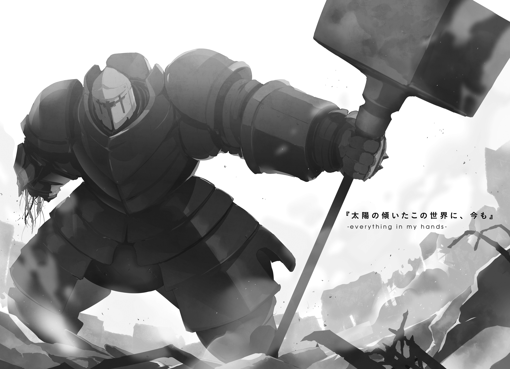
１．コルナディルーチェの妖精たち
全身の打診触診に始まり、目もとに灯りを近づけられて瞳の動きを確かめられたり、検査用の薬を飲まされ気分を聞かれたり、少量ながら血を抜かれたりした。
「ううう、全身いじくられちゃって、もうお嫁にいけないっすよ......」
素肌に病衣一枚という格好で、アイセアはのっそりと検査用ベッドから身を起こす。
「てのはさておき、これで検査は終わりでいいんすよね？」
返事がない。
カルテを睨んだ単眼鬼の医者が、難しい顔をしている。
顔のつくりの違う種族の表情は本来読みづらいが、それでも、わかってしまったり伝わってしまったりすることは、やはりある。
「......本当に、よく頑張ったんだね」
絞り出すようにして、そんな言葉だけが出てきた。
「にゃはは、しぶとさにだけは定評があるんすよー」
ぷちぷちと病衣のボタンを留めながら、いつもの愛想笑いでごまかした。
「生命力が、萎びきってる。体が、生きるということを忘れかけてるんだ。傷を負えばおそらくもう治らない。魔力を熾して衰弱した分の体力は、二度と取り戻せないはずだ」
「ういうい、そんな気はしてたっすよ」
深刻な声の単眼鬼に、つとめて明るく答える。
「次に戦場に立ったら、もう、帰ってこられるかもわからない」
「そうっすねぇ。それについては、やぁっとあたしの番かーってくらいの心境だったりするんすけども」
検査用のベッドに腰かけたまま、足をぶらぶらとさせてみせる。
「正直、無駄に長生きしすぎて、最近は心のほうがきついんすよ。生きててほしい子たちから順番に死んでいって、生きる意味のないあたしなんかが、ずるずるいつまでも生き続けてる」
「生きる意味のない生命なんてないよ」
「ああ......そうっすね。あたしら、生命ですらないっすから」
「そういう意味じゃなくて」
「そういうことにしといたほうがいいんじゃないすか、先生。使い捨ての道具に感情移入するなんてのは、ちょいと人聞きが悪いっす」
「確かにそう考えている者が多いのは事実だけど、君たちのことを直接知らない者──妖精たちに自我があることすら知らされていない者ばかりだよ。僕らは、君たちのことを使い捨てだなんて」
「先生たちが、あたしらを、ちゃんと死地に送り込まないと浮遊大陸群は守れない」
言葉を途中で遮った。
「だからこそ、あたしらはひとつの種族として認められてない。権利を持たない兵器として扱われてる。現場の全員が、躊躇なくちゃんと使い捨てできるように。そういうルールが必要だから、そういうことになってる。そうっすよね？」
「そうだな」
重たい息とともに、苦みばしった声で、言われた。
「そこまでは認めるよ。でもその上で、僕らが個人的にどう考えるかは、僕らの自由だ」
「あんまり甘やかす大人が増えると、あたしら、『死にたくないから戦わない』とか言い出すかもしれないっすよ？」
「......そうだね」
単眼の視線を、露骨に逸らされた。
「む。何か怪しいっすね。隠しごとでもあるんすか？」
「隠しごとというほどじゃないけれど。
もしも仮に──あくまでも仮の話としてだけど、君たちがもう戦わなくていいかもしれない、生き続けることもできるかもしれない、ってことになったら何をしたい？」
「はぁ。そりゃまた唐突な話っすけど」
ちょっとだけ考える。
「仮の話、ってことなら、まぁ、おおむねこれまで通りっすね」
「これまで？」
「森の中の倉庫で、のんびりだらだらと毎日を過ごすんす。ちっこい妹たちがわーわー遊んでて、子供っぽい母親役がぱたぱた走り回ってて。そういうのをのんびり眺めながらゆっくり本を読む。穏やか過ぎて、ついつい寿命が延びる毎日っすよ」
「......はは。そうか、うん、そうか」
単眼鬼は、うんうんと何度もうなずいて、
「やっぱり、長生きするべき子だね、君は」
さっきまでの会話をあっさりと台無しにするような、そんなことを言った。
ラキシュの体の調整が終わった。
とてもいい数字が出ている、大した素質の持ち主だ、と医師たちは口々に賞賛していた。そしてその褒め言葉をひとつ聞くたびに、少しずつナイグラートの気分は沈んでいた。刃物としての性能、爆弾としての評価がどれだけ高くても、そんなことで幸せになれる女の子なんているわけがないのだから。
ラキシュに才能があるというのなら、この先ずっと、その才能を使う機会が来ないほうがいい。来てほしくない。ていうか来るな。
「ふおおおおお！」
「ふわあああ......」
ティアットとラキシュが、二人並んで感動の声をあげている。
大麦広場。コルナディルーチェ市屈指の観光名所のひとつである。もともとはその名の通り、大麦のみを扱う卸市場だった場所だ。港湾区画近くに別の市場が作られたときにここは一度役目を終えて、今はただの多目的広場と化している。
広場のあちこちで、芸人たちが雑多な芸を披露している。球形人の曲芸師が無数のナイフでジャグリングし、蛙面人の手品師が細い火を吐き出し、揃いの仮面をかぶった楽団が楽し気な音楽を奏でて場を盛り上げる。
「わあ、わあ、わあ」
解き放たれた子供の好奇心は、とどまるところを知らない。人ごみから人ごみへ、ティアットが右へ左へ走り回る。手を引かれたラキシュが、悲鳴をあげながらついていく。
「こ、こら、あまり走り回るな、お前たちは観察対象だということを忘れるな！」
護翼軍の兵器管理手続き上、黄金妖精たちを外に連れ出すには最低限でも「携行する位官」が必要になる。というわけでお目付役を押し付けられた哀れな四位武官が、情けない声をあげながら二人を後ろから追いかける。
その様子を、ナイグラートは少し複雑な気分で眺めている。
「......本当に、ただの観光でここに来られてたならよかったんだけど」
無茶を望んでいるのは自覚している。この少女たちは、戦いに備えてここにいる。それも、本来ならば関わる必要のなかった戦いだ。だからこそ、観光などという、本来通るはずのない我がままが許されている。
我がままといえば、ネフレンのこと。
彼女はあの通り、死んだわけではなかった。けれど、無事だったわけでもなかった。クトリとはまた別の意味で変質を遂げたという彼女は、もう、妖精倉庫に戻ってくることはないという。
寂しい話だと思う。
けれど、悲しい話ではない。空は広くて世界は狭いのだ。どこかで元気でやっている、そう信じることができるというだけで救いとしては充分だから。死んでしまった者には、それだけのことをすら望めなかったのだから。
「おーい、ナイグラートこっちこっちー！ ほら、腕相撲大会なんてやってるの！ おじさんと一緒に出てみない!?」
ぶんぶんと手を振るティアット。複雑そうな笑みを浮かべながら、なんだかんだで乗り気で袖をまくるおじさんこと四位武官。ぺこぺこと頭を下げるラキシュ。
まったく。こっちの気持ちも知らずに、いい気なものだ。とてもいいことだ。
「......いいけどーっ！」
ぶん、と手を振り返す。そして、
「私が出たら大会、すぐに終わっちゃうわよー？」
ぱたぱたと、子供たちの場所へと走り出した。
何事も、頼んでみるものである。
駄目でもともとのつもりで中央大書館に入れないかと尋ねてみたところ、市長の娘だというフィラコルリビア......フィルと呼べと言っていたか......から「わかりました！」と力強い返事があった。そしてそれから半日もしないうちに、まさかの入館許可までもぎとってきてくれた。
驚いたのは、頼んだ当人であるラーントルクのほうである。
自分たちは何の権利も持たない、田舎育ちの妖精である。その一方でコルナディルーチェ市の中央大書館といえば、浮遊大陸群の叡智の集う代表的な場所のひとつだ。格が違うというか恐れ多いというか、ただ近づくだけで何か罰が与えられるのではないかと思えてしまうくらいに、場違いなのだ。
封筒で手渡された入管許可証が、なんだか恐ろしい凶器のようにも見える。
幾つもの仰々しい判子が捺された下に、『コノ者ニ機密書庫Ｂ─47マデノ閲覧ヲ許ス』などと謎の呪文が書かれている。そのＢ─47というのは一体何だ。知ったら消される系のまずい秘密が詰まっていたりするのか。
「......ラーンも、たいがい、無茶なこと考えるっすよねぇ」
同じ入館許可証を手にしたアイセアが、何やら達観したような顔で呟いている。
「言わないでください。たったいま、その自覚に押しつぶされそうになっています」
「お互い小市民っすね」
「身の丈というのは誰にとっても大切なものなんだと思いますよ」
しみじみと、そんな情けない言葉を交わす。
「さぁ、行きましょう！ 及ばずながら、お二人の調べものも、全力でお手伝いさせていただきます！」
一人だけやたらテンションの高いフィルが、ずんずかと力強く先を歩いていく。
「皆さまの本来の戦いにおいては、私はまったく力になることができません。いえ、それを試みようとすることさえ、妖精の方々の覚悟への侮辱になってしまうのでしょう。ですからせめて、私にできることのあるうちは、できるだけのことをさせてください！」
目の中で、真っ赤な炎が燃えている。
「この人、一度スイッチ入ると面倒なんすよねぇ......」
「以前にもこんなふうになったんですか？」
「技官がやらかしてくれまして」
またあの男の話か。どうしてあの男がからむと、どいつもこいつも、面倒くさい本性を暴きだされるのだ。
──大量の本と格闘した。
頭が茹で上がるかと思った。
本を読むのは好きだ。ものを考えるのも嫌いじゃない。けれどものには限度というものがある。度を越した量の情報を詰め込んだラーントルクの頭は、すっかり熱を持っていた。
「少し外に出て、ノートをまとめがてら休憩しませんか？」
そう提案してみたが、
「んあー、すいません、今はもうちょいこの本を頑張ってみたいっす。先に行っててもらえないっすか？」
「私はアイセア様をお手伝いしていますので、ラーントルク様はお先にどうぞ。あ、プディングの美味しいお勧めのカフェが裏手にありますので、そちらでお待ちいただいて合流するというのはいかがでしょうか？」
見かけによらずタフな二人に、口々にそんなことを言われた。
「いえいえ、分割行動はよくないでしょう、私たちは妖精なんですから」
ちらり、隣で置物と化していたお目付役の軍服に視線をやると、
「可能な限り自由に行動させろと一位武官から指示されている。だが、あまり離れるな」
意外なことに、許可が出た。
それでいいのかと思わなくもないが、いいと向こうが言ってくれているなら、敢えて引っ搔き回すようなことでもない。
「......そうですね。せっかくですし、お言葉に甘えましょう」
素直に頷くと、メモを挟んだノートを手に席を立った。
さて、お勧めされたカフェは、わりとすぐに見つかった。
表通りから離れているせいか、それほど客の入りはよくない。しかしその客たちはどうやらほぼ観光客ではなく地元の者で占められているようで、つまりそれだけ常連がつくような店だということなのだろう。
オープンテラスの席に座る。いろいろ目を惹くメニューの中から、ミルクティとアップルパイをピックアップ。注文する。
ノートを開く。読んだ本から書き写してきた走り書きのメモを、改めて眺め直す。
「うーん......」
自分たち黄金妖精とは、そもそも何者なのか。なぜ存在するのか。どこから来て、どこへ行くのか。いつぞや妖精倉庫でアイセアが提示したそもそもの疑問は、そんなものだ。
これだけ聞くと、まるっきり、思春期の悩みである。
しかも困ったことに、自分たちは客観的に見て、思春期の子供そのものである。
他の種族の子供であれば、思想書なり創作物語なりの中に答えを求めるところだ。しかしいま自分たちが読み漁っているのは、よりにもよって死霊術の研究書。しかも、この大陸群にあって望みうるおそらく最高レベルのものだ。
「改めて、後ろ暗い存在ですよね、私たちって......」
つぶやいてから、自分が一人きりであることを思い出す。
一緒にいた時間が長かったせいか、ノフトがすぐそばにいるような気がしてしまう。あの子自身はあんまり物事を考えないし物わかりがいいわけでもないけれど、とても聞き上手だった。考え事の最中にでも、ついつい言葉を引き出されていた。おかげで、今の自分にはすっかり、独り言の癖がついてしまっている。
よくない傾向だな、とは思う。しっかり自立した女を目指したいと思っているのに、どうにもこうにも、うまくいっていない。
「何をしても空回りになるとか、そういう時期なんでしょうかね......」
アップルパイをさくっと一口かじる。んまい。
と──強い風が吹いた。風はラーントルクの手元から何枚かのメモをすくいとると、そのままくるくると上空に吹きあげた。
「あ......っ」
慌てて手を伸ばしても届かない。席から立ちあがりさらに手を伸ばそうとした瞬間、さらなる風が、残りのメモをまとめて吹き飛ばす。
「きゃ、って、ああっ!?」
迂闊を悔やみながら、呆然と空を見上げる。
大急ぎで魔力を熾して追いかける？ いやだめだ間に合わない。走って追いかける？ いやそれで追いつけるとも思えないし、ついでに何か別のミスを重ねてしまうような気がしてしまう。ではどうすればいい。自分には何ができる。
逡巡している間にも、時間は流れる。メモは見る間に高く高く、どこまでも高く、
「──あ、あら？」
昇っていかなかった。まるで時間の一瞬だけを切り取ったように、すべてのメモが、ぴたりと動きを止めていた。
「これって......」
少し遅れて、またメモは動き出す。今度は風を無視し、まるで糸に手繰り寄せられるように、街路に立つ一人の男の手の中へと吸い込まれていった。
やたらと目立つ白マントをまとった、いかつい顔つきをした老人。
「あ、ああっ!? おじいさん!?」
「ふむ、先日の娘さんか！ 奇遇だな！」
驚いた様子もなく、通りの老人はメモ束を手にしたまま近づいてくる。
「このような場所に来てまで、勉学に励んでいるのか。結構結構、若いうちに学んだことは、未来の武器となる。むろん、扱い方を併せて学ばねば意味を持たんということでもあるが......ふむ？」
ふと、老人がメモ束に目を落とし、眉をひそめる。
「ありがとうございます、大切なメモなんです」
「ふむう、高等死霊術とはな。学生の自由研究にしては奇矯なテーマを選んだものだ」
「いえ、そういう身分ではありませんし、勉学というほど殊勝なものでもないんです。未来に備えるつもりもなくて、ただ、今知りたいというだけで」
「何だと？」
老人が差し出してきたメモを、受け取る。
「......そうか、その髪の色。お主も、黄金妖精であったか」
「あ」
一瞬、いろいろな感情がラーントルクの頭の中で交錯した。
黄金妖精という種族のことを知る者が、それに対して好印象を持っているとは限らない。次の瞬間にこの老人がどんな表情を浮かべることになるのか、怯えながら覚悟を決めた。
「そういえば、もう一人のお嬢さんが管理人なのであったか。失念しておったよ。
直接には決して見るまいと、決めておったはずなのだがな。まさかこのようなところで出会い、言葉まで交わすことになるとは」
はて。これはいったい、どういうことなのか。
老人の顔はかすかに、しかし確かに悲痛に歪んでいた。嫌悪でも隔意でもなく、どちらかというと後ろめたさのようなものがその表情からにじみ出していた。
「あの。おじいさん？ ええと、大丈夫ですか？」
間の抜けたことを聞いていると自分でも思う。大丈夫じゃないとしたら、それはどう考えても自分のせいだ。親切面して気遣いの言葉など言える立場ではないはずなのに。
「......はは。儂を気遣うか。優しい娘だな、お主は」
「はぁ」
なぜか褒められた。
何というかこう、最初に会ったときから、この老人とは会話が微妙にかみ合っていないような気がする。大切な歯車がかみ合わないまま、それでもいちおう回ってはいるような、そんな歯がゆい感じ。
「出会ってしまったものは仕方があるまいな。偶然はただの偶然だ、それを幸運とするか不運とするかは状況の活かし方にのみ依るものだ」
「はぁ」
何言ってるんでしょう、このひとは。
当惑するラーントルクの目の前で、老人は椅子を引くと、ラーントルクの向かいに座る。大柄なその体は、小さ目のカフェの椅子には、少しばかり似あっていない。
「死霊術の知識を通じて、知りたいことがあるのであろう。儂に尋ねてみよ。答えをくれてやる」
「いえ、私たちが知ろうとしているのは、ちょっと難しい内容の話でして」
「であろうな。構わんから、尋ねてみよ」
そんな無茶な。
先ほど、メモを一瞥しただけで、それが死霊術について調べているものだと理解した。この時点で、この老人がかなりの物知りであろうことは推測できた。しかし、自分たちが知りたいと思っていることは、そこらの物知りおじいさんの知識にあるようなものではないはずなのだ。
「......黄金妖精とは、そもそも何なのか」
聞くだけ聞いてみた。
答えられるもんなら答えてみろ、という心境だった。
「なるほど。なかなか要諦を突いた問いかけをするものだ。善哉善哉」
なぜか、どことなく嬉しそうに頷く。
「さて、どこから語ったものかな」
少し考える。
「遥かな昔、星神たちは、地神に命じ、人間という種を製造させた」
「は？」
いきなり関係ない話をされた、と思った。
当惑するラーントルクに構わず、老人は続ける。
「ゼロから創り出したわけではない。素材を用意し、加工して造り出したのだ。
素材は、大きく分けて二種類。ひとつめは、星神たちがこの世界に到来する前からここに存在していた唯一の生物種、〈原始の獣群〉。もうひとつは、放浪し生き続けること自体に倦み疲れていた、星神たち自身の魂。加工方法は」
皿の上。ラーントルクの食べかけのアップルパイを、指先で示す。
「それと同じだ。〈獣群〉を、粉々に砕いた自分たちの魂でくるみこんだ。魂から強制的に肉体を書き換えることによる大がかりな呪詛。〈獣群〉であったものは、星神に似た姿を持つまったく別の生物、つまり人間へと造り変えられた」
「はぁ......いえ、あの、ええと？」
通説になっている創世神話と一致していない。話が壮大すぎてわけがわからない。そもそも自分の質問の答えになっていない。総じて、どこに呆れればいいのかもわからない。
けれど、ひとつだけ、気になる言葉が交じっていた。
星神が、〈獣群〉なるモノを用いて、人間という種を造ったという話。
「だがまぁ、その後、人間という種は、ちと増えすぎてな。パイの数は増えたが、困ったことに皮のほうが足りなくなった。皮である星神の魂のほうは、砕かれたその時から増えたりなどしていないのだからな。日を追うごとに皮は薄くなる」
「......それは、まさか、〈獣〉が内側から解き放たれるという......」
それは、先日、地上で自分が至った仮説だ。しかしあの発想は、あの時たまたま見つかった古文書などを読んでいて初めて至れたものだった。同じような機会があったはずもないこの老人が、なぜ同じようなことを言いだしているのか。
「うむ。察しが良いな。まさか、そこまでは既に気づいておったか？」
感心し、老人はちらりと机の上のメモに目を走らせる。
「もともと〈原始の獣群〉は不死不滅の存在だった。それを人間という常命の殻の中に封じていたことで、それらは変質した。悔恨。希望。甘え。正義。優しさ。恐怖。無関心。無知。......そういった、人を死に誘う様々な要因に引きずられ、十七種の死を象徴するような存在へと変わっていったのだ。
そんなものが解き放たれては、人間という種が滅びる。そう考えた彼らは、一計を案じた。幸いにして、あの当時、たった二柱だけだが、星神が残っていた」
星神。そうだ、その伝説は今にも伝わっている。
五百年と少し前、人間の勇者が、最後の星神を討ったのだと。
「そう。その星神の魂を遣って、新しいパイの皮を作ろうとした連中がいた。
しかしその試みは失敗した。人間の持つ技術では、地神の行った業を再現できなかったのだ。星神の魂はうまく砕けず、ただ無数に削れて散らばっただけに終わった。新たなアップルパイは焼かれず、破滅の時は順当に訪れた。とまぁ、だいぶ省略したが、流れとしてはこんなものだな」
「......あの」
おずおずと、片手を挙げる。
「興味深い話ではあるんですけど、それは人間種とは何だったのかの話ですよね。私の質問は、黄金妖精についてのものなのですが」
「もちろん、その問いに対して答えたのだとも」
ああもう本当に、このおじいさんとの会話は嚙み合わない。
けれど、嚙み合っていないだけで、会話そのものは成立しているはずなのだ。ちょっとややこしい古文書に挑むつもりで、このおじいさんの言葉を読み解けばいい。そうすればきっと、言われたことは理解できるはず。そう考えて今の話を一通り思い返し、
「......まさか」
思い至る。
最後の星神の魂は、うまく砕けなかった。
新しいアップルパイは焼かれず、材料たる魂の欠片は散らばったまま。
「人間種が完成させられなかった、次の世代の人間の失敗作。それが私たちの正体ということですか？」
「ふむ。理解そのものは、それで間違っていない」
老人は頷く。
「それを失敗作と表現するのは、ちと早計に思えるがな。まぁ、解釈は人それぞれだ、前向きにでも後ろ向きにでも、好きに捉えるがいい」
前も後ろもない。そんなことより大事なことがある。
もしもこのおじいさんの言葉が真実なら、この浮遊大陸群でこれまで何百年も謎だとされてきたものが、いくつも一度に答えを得てしまう。そんなことはありえないし、ありえてはいけないはずなのに、なぜかそれが正しいように思えてしまう。
「あなたはなぜ、このようなことを知っているのです？」
「少しばかり長生きをしておるからな」
飄々と答え、肩をすくめる。
「今の話が真実だとして、それはまったくといっていいほど世の中で知られていないことだったはずです。そんなものを、なぜ私などに教えてくれたのです？」
「お主らには、負い目があるのだ」
少しだけ、悲し気に笑う。
「謝罪することも、撤回することもできん。そんな資格もない。だからせめてこのくらいは、とな。まぁ、卑怯で勝手な爺の自己満足にすぎんよ」
さて、と老人は立ち上がる。
「さすがにもう会うこともなかろうが、得難い時間であったよ」
「あっ」
呼び止めようとして、慌てて立ち上がる。
その瞬間、風が吹いた。またメモが飛んでしまうのではないかと思い、慌ててノートを閉じた。
そして改めて顔を上げた時には、老人の背中は、もうどこにも見えなかった。
「ふひー......疲れたっすよー」
それこそ学校帰りの学生のように、疲労で目を回したアイセアがふらふらとやってくる。その少し後ろを、毛皮に隠れて顔色のよくわからない狼徴人のフィルがついてくる。
「って、どうしたんすか、ラーン。ぼーっとしちゃって」
「......私たちは何者なのか。なぜ存在するのか。どこから来てどこへ行くのか」
「ラーン？」
「実際に答えを得てしまうと......案外、虚しくなるものなんですね......」
「ラーン？ おーい？ ラーントルクさんやーい？」
ラーントルクの目の前で、アイセアの手がひらひらと踊る。
食べかけのアップルパイの皿のフォークが、かちゃりと小さな音をたてた。
２．勇者と星神
突然、エルクが倒れた。
客室の掃除の最中、糸繰り人形の吊り糸を切ったように、その場に昏倒したのだ。
「大丈夫か!?」
慌てて抱き起こした。冷たい。ほとんど息をしていない。まるで死体だと感じてから、それが喩えでもなんでもないということに思い至る。こいつは死体で、まるで生きているように動き回っていることのほうが異常であるはずなのだ。
相手が生きてさえいれば、熱が出たり呼吸が荒くなったりで、病気の程度は見てわかるはずだ。けれど、相手が死体だとなると、状況をどう見積もればいいのかがまるでわからない。手当ての方法も見当がつかない。医師を呼んでどうにかなるとも思えない。何をしてやればいいのか、何をしてやれるのか、何もわからない。
いちおう、ベッドに運んで寝かせた。意味があるかはわからない。
遠い昔に、あるいはつい最近に、似たようなことがあった気がする。目を覚まさない誰かがベッドに横たわっていて、自分はその傍らで無力に震えることしかできない。やがてそのことに耐えかねた自分は立ち上がり、出来ることはあるはずだと信じて、誰かをブン殴りに行くのだ。
ああ畜生。今も誰かをブン殴って状況が変わるなら、その可能性が少しでも見えていたなら、迷わずそうしていただろう。けれど今この時に限っては、固めた拳をぶつける先に思い当たるものが何もない。
「濡れタオル......いや、冷やす意味あるのか？ 逆に温める......腐ったりしねぇよな？」
何かを思いついては腰を上げて、すぐに下ろす。先ほどからこの繰り返しだ。
アスタルトスからは「仕事のことはいいですからついていてあげてください」という言葉をもらっている。しかし、そばにいても何もしてやれないというのは、むしろ逆に辛いものだ。
やっぱり今は仕事に戻ろうか。いやしかしこいつの傍を離れたくはない。そんな迷いを抱えたまま、自分の手のひらをじっと見つめる。
「う......」
うめき声を聞いて、がばりと顔を上げた。
「あれ......？」
のしかかるようにして、顔を覗き込む。
顔色が、心なしかよくなっているような気がする。苦しそうにしている様子もない。ひとまず何の問題もなかったのだと知り、ヴィレムの表情から力が抜けた。
「よう」
だらしなく崩れた顔を晒す前に、無理にでも顔面の筋肉をフル稼働させて笑う。
「やっと起きたか、このサボり姫」
「わたし......あれ？ 寝ちゃってた？ そうじは？」
「その掃除の最中に、急に倒れたんだよ。心配したぞ」
「しんぱい......」
「お前いま、すげぇ冷たくなってんだぞ」
「そうなの？」
首を小さく傾げながら、エルクは自分の手のひらを額にあてた。よくわからない、という顔。そりゃあそうだ、自分の体温が自分自身でわかるはずもない。
ほれ、と額の上に、ヴィレムは自分の手を重ねてやる。
「あったかい」
「だから、お前が冷たいんだっての。
普通、過労だの心労だのなら、その逆。熱が出るもんだ。お前の体は普通じゃねぇし、どうやって手当てすりゃいいのか見当もつかねぇ。このまま二度と目を覚まさねぇかもとか思って、けっこう本気で焦ったぞ」
「ん、ごめん」
「おう、大いに反省しろ。んで、今はもう大丈夫なのか？」
「ん。ちょっと、つかれてただけだから。寝たら、すっきりした」
その言葉を聞いて、全身の力が抜けたような気がした。あの状態をただ「寝ていた」と称していいものかどうか、疑問は多々残ったが、追及する元気も残らなかった。
「そうか......何か、飲みたいものとかあるか？ 食いたいもんでもいいが。リンゴか何か、むいてきてやろうか？」
ぼうっとした顔のエルクに、優しい声で尋ねる。
「あったかい、みるく。すこし、あまいやつ」
「よし、任せろ」
すっと立ち上がる。
「なんだか、今日のびれむ、やさしい」
「俺はいつも優しい奴だぞ」
そう答えると、なぜか、あははははと本気で笑われた。
「待たせた」
ヴィレムが持ってきた鍋の中からは、甘い匂いが漂っている。
温めたミルクに少量の蜂蜜を混ぜ、ついでにシナモンの粉をアクセントにしてある。
「少しぬるめにしてはあるが、一気に飲もうとするなよ？」
「大丈夫なのに」
少し口を尖らせながら、エルクは一口を含み、こくんと小さく喉を揺らす。
「おいしい」
「だろ？ お前の舌の好みは、だいたい把握したからな」
「む」
その言葉を単純お子様舌だとでも解釈したか、少し不満げな顔をされる。が、本人にもそういう好みの自覚があったのか、それとも手の中に動かぬ証拠があったせいか、文句は返ってこない。
「......あのね。ひとつ、きいてもいいかな」
「ん？」
空になったカップに鍋からおかわりを注ぎつつ、ヴィレムは顔を上げる。
「何だ？」
「もし。もしもの話なんだけど」
「妙にもったいぶるんだな。いいから言ってみろ」
「もし──わたしがあと五日くらいで死んじゃうとしたら、もうちょっと、やさしくしてくれたりする？」
「は？」
眉をひそめる。
どこかで聞いたような言葉だと思った。いやそれよりも、今こいつがそんなことを言いだすということの意味は。
「なんだそりゃ。五日って、ずいぶん具体的だが、何かあるのか？」
エルクの顔が、しまった、と言っている。
「え？ う、ううん、そういうのじゃ、なくて。ごめん、忘れて」
エルクは、自分の胸元、深い傷の刻まれたあたりを、強く手のひらで押さえつける。
「お、おい、エルク？ まさか」
「きいちゃ、いけないことだった。くとりとおなじになれないかって、いけないこと試してた」
──痛い。
ずきりと、ヴィレムのこめかみの奥のあたりが痛んだ。
また、何かを思い出しかけた。
「ほんとにごめん。いまは、もうちょっとだけ寝かせて」
毛布を抱くようにして、エルクはヴィレムに背を向けた。
「わかった。ミルク鍋は置いとくから、自分でおかわりして飲んどけ」
軽い頭痛をこらえながら、ヴィレムはエルクの部屋を離れた。
ヴィレムとエルクの部屋は宿屋の二階の隅、使われていない客室を改装したものだ。
ぎしぎしとうるさい階段を踏みしめながら一階に降りる。
ここの宿は、平時に宿泊客がほとんどいない都合上、ふだんは一階の大きなラウンジを使い、軽い食事と酒が楽しめる店を開いている。そのラウンジの中央、小さな丸テーブルについたアスタルトスが、小さなタンブラーを傾けているのが見えた。
「話し声が聞こえましたが、彼女は目を覚ましましたか？」
「ああ。少し疲れて眠かっただけらしい」
「それはよかった」
人のいい笑みを浮かべて、アスタルトスは何度も頷く。
「──あれ？ あんた、酒、飲めないとか言ってなかったか？ 前に、酔っぱらった客に勧められた酒、『ダメなんです』とか言って断ってたよな？ ありゃただの方便か？」
「いえ、そういうわけでは」
恥ずかしそうに笑う。
「少し、酒癖が悪いのですよ。お酒が入ると気が大きくなるのか、ちょっとしたことで暴れ出してしまうようなんです。本人は覚えていないんですけどね」
「あー......そりゃ、タチ悪いな」
「取り押さえるのが大変だ、って妻と娘にもさんざん怒られました。なので、ふだんはできるだけ飲まないようにしているんです。今日のこれも、この一杯で終わりです」
「残念。それじゃ、俺もご相伴ってわけにはいかねぇか」
おどけた仕草で肩をすくめると、アスタルトスは「すみませんね」と素直に笑う。
「とはいえ、ちと喉は渇いたな。代わりに茶でも飲むかね。あんたも要るか？」
「はい、ここは素直にご相伴にあずかります」
ちゃっかりしているものだ。ヴィレムは苦笑いしながら厨房に入り、瓶から汲み置きの水を鍋にすくい、晶石焜炉にかける。
「......ニルスさんのことなんですが」
「ん？」
「あなたたちをここに連れてきた日、ニルスさんは、とても優しい目をしていたんです。私に後のことを任せると言いながら、『今度こそ普通に生きてほしい』と付け加えていました」
「......そっか」
なんとなく、予想がつく。とても短い間しか言葉を交わさなかったが、それでも、あれがどういう男だったのかについて、自分でも不思議なくらいに理解できている。
「ヴィレムさんもエルクちゃんも、普通の体じゃない。それもどうやら、生まれつきというわけでもなさそうだ......あ、このへんの肉の見立てには自信があります、なにせ私は喰人鬼ですから」
自慢げに言わないでほしい。
「おそらくあなたたちは、自分自身を投げ出したり無くしたりするくらいにとても大変な人生を送ってきて、それが一度終わった後なんでしょう。身も心も疲れきっている。そんなあなたたちに、別の人生を送れるのなら、送ってほしい......ニルスさんの言葉は、たぶんそういうことではないかと思います」
「あいつ、人の見てねぇところでそんな師匠ヅラしてやがったのか」
「え？」
「何でもねぇよ」
あの自称師匠が実際に自分の何であったのかはわからないが、ずいぶんと自分もエルクも大切にされているようだということはわかる。だからきっと、アスタルトスの推測は正しいのだろうということまで、わかる......気がする。
「気遣いは嬉しいんだけどな、そういうのは本人に聞こえるところで──」
首の後ろに、ちり、と焦げ付くような違和感。
「──ん？」
虫でもとまったのだろうか？ いや、そうじゃない。
肌の上にまとわりつくようなその違和感に、覚えはない。けれど、体が知っている。
「今夜は、泊まり客はいなかったな？」
「どうしたんです、いきなり。今夜はというか、今夜もいませんよ」
「大勢の恨みを買ったことはあるか？」
「それは......後腐れを残すようなものは、特に覚えがありませんが」
少し不安になる答えだったが、ひとまずは文字通りの意味にとっておこう。
「てことは、集団強盗の類か」
いくつかのこちらに敵対的な気配が、この宿を囲むようにして展開している。
いい狙いどころではあるのだ。街道を往く旅人をターゲットにしたこの宿は、ほんの少しだけ、人里から離れたところにある。そこそこ大きな造りと小綺麗に掃除されている姿は、ある程度資産があるだろうという推測にもつながる。そしてもちろん、食い詰めた野盗にとっては、備蓄されているはずの酒や食料も魅力に見えることだろう。
「おや。もう、そういう季節ですか」
「いや季節関係ねぇだろ。てか、何でそんなに落ち着いてんだ」
「春が近づくと増えるんですよ、そういう手合い」
いやあんた、虫とかじゃないんだから。
「ヴィレムさんはお茶でも飲んでいて構いませんよ。私が相手しますから」
「いや、雇われの立場で、そういうわけにもいかねぇだろ。俺がやるから雇い主は酒......はもう終わりだったか、いま淹れるから茶でも飲んでろ」
「心配はいりませんよ、慣れてますから」
「いやそれ理由になってねぇだろ、っていうか慣れるなよそういうのに」
ヴィレムは席を立つ。
過去の記憶は、相変わらず封じられたままだ。しかしこの状況にあって、自分は恐怖も緊張もまるで感じていない。それどころか、古巣に戻ってきたかのような一種の懐かしさすら抱いている。以前の自分は、よほど物騒な世界に生きていたらしい。
「本当に大丈夫なんですけどねぇ」
「いいから座ってろって」
こき、と指を軽く鳴らす。
無音で誰かを制圧しようと思うなら、相手の呼吸の把握は大前提だ。それは、当て身で気絶させる時でも、ナイフで命を奪う時でも変わらない。
肺の中に空気が残っていれば、それを吐き出すだけで声が出てしまう。仮に一撃で相手の意識を刈り取れたとしても、倒れた衝撃で声だけが出ることもありうる。だからある程度以上熟練した暗殺者であれば、他者の呼吸を盗む術を、ほぼ日常的に行えるレベルで身に付けている。
「......俺、ある程度以上熟練した暗殺者とかだったのかねぇ......」
闇の中から忍び寄り、相手の呼気が尽きた瞬間を狙う。
首筋を指で押さえ頭を揺らし、静かに意識を奪う。
自分自身でも少し寒気がするくらいに手際よく、襲撃は成功した。
腕の中でぐったりと力を失ったその相手を、改めて観察する。食い詰め者の強盗という予想は、まず外れだった。その獣人は、軍服を着込んでいた。手にしていたのは、銃身の長い火薬銃。少なくとも、そこらのごろつきが好む服装でも、手に入れられる武器でもないことは間違いない。
「この制服......護翼軍か？」
暗闇の中なので、色も形も、はっきりとは見えない。
しかしなぜか、そんな気がした。
「でもなんで、護翼軍がうちの宿を包囲する？」
まず考えられるのは、危険人物が逗留している可能性。しかしこれはありえない。なぜなら、そもそもこの宿には逗留客などいないからだ。
次に考えられるのは、実はアスタルトスが軍に追われる身であるという可能性。これは......人格的に考えにくいような、それでいて納得できるような不思議な仮説ではあるが、どちらかというとありえないような気がする。犯罪者を追うのはそれぞれの都市、それぞれの浮遊島が持つ自警組織の役目だ。護翼軍は浮遊大陸群全体の危機に対して抗うための組織であり、犯罪捜査や逮捕の権利は持ち合わせていない。
さらにその次に考えられるのは、
「俺......か？」
その疑問が浮かぶとほぼ同時に、シャッターが開かれランタンの灯りがヴィレムの姿を捉えた。
「動くな！」
いつの間に展開していたのか、複数の銃口が、まっすぐにヴィレムを狙っている。さすがは浮遊大陸群の守護者、大した練度だと感心する。
命を奪う装置をまっすぐに突き付けられた今になっても、ヴィレムの心は凪いだままだ。恐怖も脅威も感じない。
「こんな団体さんで、うちの宿に何の用事だ。食事か？ 宿泊か？」
「動くなと言っている！」
「できれば少し静かにお願いできねぇますかね。お休みになってるお客様に迷惑がかかりますんで」
まぁ、そのお休みになってるお客様というやつは、もちろん一人もいないのだが。
「対象を発見、無力化しますので、交戦の許可を」
「許可する、かかれ！」
号令に応じて、闇の中の気配が一斉に動き出す。
後続のことは後で考えるとして、いま相手をするべきは、ざっと六人。闇の中の銃口は少々面倒くさいが、対処できないわけではない。まずは手近な相手を二名ほど叩きのめし、その体を投げつけてランタンを破壊。灯りがなくなれば同士討ちも誘えるし、一人ずつ黙らせていく手もやりやすくなるはず。よし、この手で行こうか。
そんなことを軽い気持ちで決めて、いざ実行しようとしたタイミングで、
「だめ」
状況にまるで似合わない、少女の声が聞こえた。
「あなたたちじゃ、束になっても絶対にかなわない」
「お前、出てくるなと言っていたはずだ！」
「言われた。けどその時、私も、必要な時に自分の意志で動くと答えたはず」
ランタンの光の照らし出す狭い空間に、その少女が歩み入ってくる。
灰色の髪の、小柄な徴無し。
何を考えているのかわかりにくい、ぼんやりとした表情。左目を覆うように、簡素な眼帯をつけている。
「............」
どこかで。
見たことがあるような。
会ったことがあるような。
いや、そんなレベルの話ではなく。
何か大切なものを分かち合ったような。そんな記憶が──
「......ぐ」
激痛に襲われ、思わず額を押さえた。
「ヴィレム」
やはり、知り合いなのか。その少女は迷いなく、ヴィレムの名を呼んだ。
「ヴィレム」
繰り返し、名を呼んだ。
「ヴィレム、ヴィレム、ヴィレム......っ！」
一度繰り返すごとに、声に感情がにじみ出してきた。
少女が、駆けた。闇の中、土に何度も足をとられながら、ヴィレムに向かってまっすぐ走ってくる。そして、
「やっと、見つけた」
胸の中に、飛び込んできた。
温かい、と思った。
「約束、守れないかと思った。怖かった」
触れれば折れてしまいそうな細い肩が、小刻みに震えている。
「......あー」
突き放すことも抱きしめることもできず、ヴィレムは立ち尽くしている。
周りで動きを止めている軍人たちが、少しだけうらやましく思えた。状況に置いていかれて呆然としているのは自分と同じだが、少なくとも彼らは、この割れるような頭痛に悩まされてはいないはずだから。
「君は、俺の、知り合いか？」
まずは、現状の確認からだ。そう思い、尋ねてみた。
「え？」
少女が、顔を上げる。
「悪いが、俺は君のことをまったく思い出せない」
「な......」
『なあぁによソレェェ!?』
不意打ちだった。
突然の、音のない大音声が、至近距離から炸裂した。
よろめきかけた足を、なんとか立て直す。いつからそこにいたというのか......いや、実は最初からそこにいたのだとばかりの自然さで、そこに奇妙な生き物が浮いていた。
赤と白、美しい鱗に彩られた、大型の空魚。そう見える。しかし、決してそのものではありえない。暗闇の中、まるでそこだけ別の絵を貼り付けでもしたかのように、空魚だけが浮かび上がってはっきりと見えている。
考えるまでもなく理解できる。これは、幻覚かそれに類するものだ。
『ちょっとちょっとアンタ、いくらなんでもそりゃないんじゃないの!? そりゃあね、アタシゃ乙女の声の代弁者を気取るにゃちょいとばかり年くってるわよ？ 人じゃないけど人生経験豊富すぎて等身大のコメントとか出せなかったりするわよ？ 自分の家族のことでいっぱいいっぱいで、よそさまの娘さんのことまで口出せる余裕なんかないわよ？ でも今のだけはいくらなんでもありえないと思うワケよ、遠い昔に乙女だった気がしてる身としてはほっとけないワケよ！』
幻覚が、何やらまくしたてた。
「......は」
「カーマは黙ってて」
『黙ってられるわけないじゃないの何なのよこの男昔の女はもう用済みだとかどこまで典型的なクズなのよエルクに聞いてた話と違い過ぎよあの子本気でこいつのこと憧れてたのよ英雄物語のヒーロー扱いだったのよそれが何でこうなるのよ思い出せないとかほんと何ふざけてるの記憶封印でも受けてるのかってのって』
ぴたり、幻覚の早口が止まる。
ゆらゆらと優雅な動きでヴィレムに近づき、口先でヴィレムの額をつつく。
『ありゃ。本当に記憶封印されてる』
「え？」
少女が目をしばたかせる。
『しかも、すごく器用に一部の記憶だけを閉じ込めてる。今の世界にも、ずいぶんな腕の呪詛を組める術者がいるのねぇ。上手く使ったら世界から概念ひとつを消し去れるんじゃないかってレベルの欺瞞呪詛。それをここまで細かくまとめて個人に施すとか、すごいのを通り越していっそ変態的よ？』
「......俺の人格は、過去を思い出しちまうと維持できなくなるらしい。だから、過去につながる記憶だけを封鎖してくれやがったそうだ」
『ああ、なるほど......って』
幻覚が、空中で器用に後ずさった。
『アタシの声、聞こえてる!?』
「不本意ながら」
『噓でしょ!? 今のアタシ、憑依した相手にしか見えない薄幸の身のはずなんですけど!?』
「それは、そんなに不思議じゃない」
灰色の少女が、目を伏せて言う。
「私とヴィレムは、ひとつの魂魄体を分け合って受け入れてる。細かい理屈で説明はできないけど、たぶんそのせい」
「魂魄体？」
疑問の声に答えず、少女は、左目を覆う眼帯を外した。
閉ざしていた目を、ゆっくりと開く。
その下に見えた瞳は、右側の瞳とはまるで違う、鮮やかな金色。
「......その目」
思わず、ヴィレムは自分の右目に触れていた。
「やっぱり。ヴィレムは、そっちの目の色が変わってるんでしょう？」
「よくわからないが、本当に俺の事情に詳しいらしいな」
頭痛は少しだけ弱まりながら、相変わらず脳を揺らし続けている。心臓の鼓動のひとつごとに、脳がよじれるように痛みを訴える。
「ヴィレム。お願いがあるの」
「断る」
この少女は、自分の大切な誰かだ。そしてこの少女にとっての自分も同様だ。そのことは直観できていたから、その一言を絞り出すのには、大きな罪悪感が伴った。
「聞いて。妖精倉庫がなくなろうとしてる。私はもう妖精じゃなくなったけど、他のみんながこれからどうなるかわからない。ナイグラートが、今まで見たことないくらい、心細そうな顔、してた」
ずきり、頭が痛んだ。
「断る、と言った」
奥歯を嚙みしめ痛みをやりすごしながら、答える。
「昔のことは、思い出さねぇと決めた。だから、君の頼みは聞けない」
「......ヴィレム」
『まぁ、しょうがないかもしれないわね』
幻覚の空魚が、肺もないくせにため息を吐く。
『記憶を封じて〈獣〉が顕在化するのを防ぐ。言うのは簡単だけど、これ、もんのすごい荒業よ。いつどんな拍子で破れてもおかしくないし、一度そうなったら再封印は不可能。そんな状況なら、自分の過去に関わりたくないのは道理』
「でも」
『それ以上はアンタ個人のワガママよ、ネフレン。ヴィレム君を、自分のせいで、完全な〈獣〉にしたいワケ？』
「............あぅ」
ネフレンと呼ばれた灰色の少女が、黙る。
まだ言いたい言葉はあるのだろう。ぶちまけていない感情もあるのだろう。けれどそのすべてを、胸元に固く握った小さな拳の中で握りつぶしている。
ごめん、と心の中だけで謝る。
謝って済むような話ではないのだろう。たぶん過去のヴィレムが今の自分を見たら、全身全霊の力でブン殴って首から上を吹き飛ばしていることだろう。けれどそれでも、今の自分が、そうすると決めたのだ。
『それはそれで、ヴィレム君。過去じゃなくて現在の話なんだけど、うちのエルクのことは、知らないかしら？』
「知ってる」
即答した。
先ほどこのネフレンは、この幻覚のことを「カーマ」と呼んだ。その名前には覚えがある。いつぞやエルクが語っていた、いつか迎えに来るはずの家族の名だ。
「あんたのことを待ってた。今は体調を崩して、そこの二階で寝てる」
『体調？ え？』不思議そうな声『あの子、今まだ死体よね？』
「俺の記憶を封じたやつが、エルクの体の呪詛とやらも少し削ったんだとよ。今のあいつは、限りなく死体に近い不死者だとかなんとか」
『はいィィ!?』
すっとんきょうな声。なるほど、これだけ非常識な存在にとってすら、エルクの現況、ひいてはニルスがやったことは異常であったらしい。
「連れてけよ。あいつも、身内の迎えを待ってたぜ」
銃口を突き付けられながら、ネフレンとカーマを、エルクのところに案内した。
三人が話している間、ヴィレムは部屋の外に出ていた。聞き耳も立てなかった。だから、どういうやりとりが交わされていたのかについては、わからない。
三十分ほど経って、灰色の少女とカーマだけが、部屋から出てきた。
『今日のところは退散するわ』
先ほどまではあれほど多弁だったカーマの口数が、ずいぶんと減っている。
「連れていかねぇのか？」
『そうしたいんだけど、本人が時間をくれって言ってんのよねぇ。ふだんあんまりワガママ言わない子だけど、いざってときにはほんと聞き分けが悪くて』
でっかい空魚の、でっかいため息。
『初対面でお願いするのも悪いんだけど、ヴィレム君、もうしばらくお任せしていい？』
「そりゃ構わねぇが、いいのか？ あいつ、あんたが仕えてる家のお嬢様とかそういうのなんだろ？」
『ええまぁ、めちゃくちゃ雑にまとめりゃ、確かにそんな感じのものだけどねぇ』
器用にも、困ったような顔をされる。
「私は、反対した」
ネフレンは、少しだけ不機嫌そうな顔をしている。
「首に鎖をかけてでも連れ帰るべきだと思う」
『いやあんたそれ、ただの嫉妬でしょ』
「だってあの子、なんだか子猫っぽい」
『ちょっとは否定してみせるくらいしなさいよ、まったく』
何の話をしているのだろう。
「また来る」
ネフレンは、そんな言葉だけを残して、宿を去ろうとする。
「お、おい！ どこに行く!?」
その背を、軍人たちが追っていく。
「帰る。ここには危険な〈獣〉なんていない」
「待て、現場の放棄は許されない！」
「ここに現場なんてない。その辺りの判断は、私が預かってるはずでしょう？」
「それは......糞っ、武官は何を考えてるんだ！」
すたすたと迷いなく遠ざかっていく少女の背中を、軍人たちが追いかける。
そして、夜の闖入者たちはいなくなった。
「......結局、彼らは何だったんです？」
「俺たちの過去が、ここまで追いかけてきたらしい」
首をかしげるアスタルトスに、ふざけて気障っぽく、そう答える。
「帰してしまっても、よかったんですか？」
「俺には過去なんてないからな」
肩をすくめる。
「もっとも、あっちのほうは、どうなのか知らないが」
二階を見上げて、付け加える。
「家族の方が、迎えに来ていたんですよね？ エルクちゃん本人は何と？」
「何も。眠いから出てけ、と言われて部屋を追い出されたよ」
「あの方々について帰らなくて、よかったんでしょうか」
「さぁな。子供の考えることは、よくわからん」
これは噓ではない。でも、本当でもない。
エルクがここに残ったのは、たぶん、ヴィレムを独りで残していきたくなかったからだ。そのことを、半ば確信している。半ばまでしか確信できていない。
そのことを、深く感謝している。
「ともあれ、そんなわけだから、まだまだここで世話になることになりそうだ。改めてよろしく頼むよ、雇用主」
「ええまぁ、それはもちろん歓迎するんですが」
微妙そうな顔で、アスタルトスは首をひねる。
「どう言えばいいのか難しいですが、せめて、後悔のないように、生きてくださいね」
「そう心がけたいね」
つとめて軽く、そう答えた。
自分に過去はない。だから、あの少女の頼みを聞きもせずに断ったことは、正しい判断だったはずだ。しかしそれは、おそらくあの少女の状況を確実に悪化させる正しさだ。どうしたところで、胸の奥に苦いものが残る。
「......これは、聞いた話ですが」
「ん？」
「童話やお伽噺に、『ずっと幸せに暮らしました』っていう定番の締めがあるじゃないですか。あれは、それこそが童話やお伽噺の中にしか存在を許されない、何よりも現実から遠くかけ離れたものだからだっていうんです。魔法の剣だとかきらびやかなお城だとか、そういったものと同レベルの、現実ではありえない夢。そのくらい、私たちは、『ずっと』という言葉のむなしさを無意識のうちに嚙みしめている」
「いや、魔法の剣とかお城とかは、普通に現実にあるんじゃねぇか？」
「はて、言われてみれば確かにそうですね」
茶々を入れたが、アスタルトスは気分を害した風もなく少し考える。
人差し指を立てて、
「つまり、そういったファンタジックな小道具以上に、『ずっと』という言葉を架空のものだと無意識に考えているわけですよ、私たちは」
「お、おう」
「いつまでも同じ時間は続かない。世界そのものにすら、いずれ終わりは訪れる。大切なのは、変化は起きるものだと受け入れたうえで、それをどう活かして明日を迎えるかです。明日がどれだけ今日と違う日であったとしても、生きていくことはできます。そして生きてさえいれば、幸せになろうとすることはできるんですから」
「......なろうとする、ね。なかなか誠意のある言葉じゃねぇか」
「その気のない者まで摑み取れるほど、幸せというものは安くありませんからね」
肩をすくめる。
「ここには、いつまでいても構いません。けれど何か転機が訪れたなら、離れることには躊躇しないでください。あなたが生きていくべき場所は、その時あなたが生きている場所そのものなんですから」
「わかってる」
なぜこいつがいきなりこんなことを言いだしたのか、もちろん理解している。
いつ記憶を取り戻してもおかしくない自分。いつ単なる死体になってもおかしくないエルク。どれだけ過去を拒絶しても、現在にしがみついても、たぶんこの日々は、そう長く続けられはしない。
そのことを受け入れていなければ、おそらく終わりのその時には、世界やら運命やらを呪うことになるだろう。当たり前の毎日を穏やかに過ごす、ただそれだけのことすら許されないのかと、行き場のない憎悪を抱えることになるだろう。
当たり前の毎日を穏やかに過ごす。それが、どれだけの努力や犠牲を必要とする贅沢な望みであるかを、あっさりと忘れてしまうことだろう。
「わかってるさ」
長くは続かないだろう日々。けれど、今のところはまだ続いてくれている日々。アスタルトスが、エルクが、ついでにどこかに消えたニルスが、続けさせてくれている日々。
ならば、今はただ、この時間に感謝だけしていよう。
そんなことを考えながら、ずっと放置されていた紅茶を、口に含んだ。
当たり前だが、時間を経たせ過ぎたそれは、めちゃくちゃ苦くて渋くなっていた。
宿の周りに、軍の監視がつくようになった。
三交代制度。人数は時間帯によって上下するが、常時張り付いているのはだいたい三人か四人といったところ。主な観測定点は二か所、隣の農園の石垣の陰と、少し離れたところに架かった公用橋梁の監視小屋。どちらも肉眼での観測に無理のある距離だから、たぶん望遠監視用の機材も持ち込んでいるはずだ。ご苦労なことである。
うっとうしいといえば、うっとうしい。しかし、放っておいたところで何か実害があるわけでもない。アスタルトスに至っては「何かあったら軍が踏み込んでくれるということですし、お金をかけずに盗賊対策ができると考えると得しましたね」と前向きなことを言いだす始末である。
そういう意味ではお世話になっているととれなくもないし、一度コーヒーを差し入れてみた。めちゃくちゃ嫌な顔をされた。なんとか会話を成立させて、どういう理由で自分たちが狙われているのかについて聞き出してみたかったのだが、そういう雰囲気に持ち込むこともできなかった。
「まさか拷問とかするわけにもいかねぇしなぁ」
たぶん、やろうと思えばできるんじゃないかと思う。
この体は、色々とわけのわからない技術を体得している。マッサージやら、暗殺術もどきの戦闘術やら。そういったものをうまく使えば、相手の肉体を壊さずに意志と尊厳だけを破壊する、そういう痛みを与えるのも難しくはないだろうと。
もちろん、そんなことを実行すれば、今のこの生活は完全に壊れてしまうだろう。それでは何の意味もない。だから、自分が何者で、どうして軍の連中に監視などされているのか、つとめて気にしないようにして生活を続けることにした。
どことなく居心地が悪くて、いびつな日常。
──この穏やかな日々の終わりが、ゆっくりと迫りつつあるのを、実感する。
３．その日の朝
その時、ナイグラートは、人生でも十指に入るであろう、重大な決断を迫られていた。
厚切りベーコンサンドと、チャモ牛レバーのミルク煮込み。自分はこの朝食に、どちらを選ぶべきだろうか。
ここのベーコンサンドは美味しい、これは既にわかっていることだ。しかし問題はもう片方。チャモ牛という品種をナイグラートは知らなかった。レバーというのは店によって味の大きく変わる食材だ。総じてこれを注文するのは、ちょっとした冒険になる。
食べることは生きること。何を食べるかの選択は、いかに生きるかを選ぶに等しい。
「ぐぬぬぬぬ......」
真剣な顔で、ナイグラートは朝食のメニューを睨みつける。
その時、ラーントルクは、考え事をしていた。
自分の遺跡兵装を見るともなしに見ながら、思春期の悩みに決着をつけるべく思索を続けている。自分たちは何者で、どこから来てどこへ行くのか。そしてその先に、当然のようにこう続くのだ。自分たちは、いったい何をするべきなのか。
星神のかけらだという話は、あまりに突然で荒唐無稽で、しかしどうしようもないくらいに説得力があった。知識を得たというよりは、長年腹の底に抱えていたものを言葉に翻訳してもらったかのような納得。抗えない。しかし、だからといって、何がどうなるというのだ。
クトリのようになりたかった、と初めて思った。黄金妖精として生まれた理由とか生きてきた理由とか、そういうものをすべてかなぐり捨てて、あの子は生きたいと思える理由を持っていた。見つけ出していた。ちゃんと生きていた。気軽に憧れていいものだとは思わないが、それでもやはり、その強さをうらやましいとは思ってしまう。
その時、アイセアは、本を読んでいた。
大書館の蔵書とは関係のない、安っぽい創作小説だ。先日、街角の本屋で買ってきた。タイトルは『ほころびの三角形』、つい先日発刊されたばかりの最新七巻である。内容は既刊と同様で、通俗かくあるべしという見本のようだった。「偽りのない気持ち」を大義名分に、作中の誰も彼もが道ならぬ略奪愛に身を捧げている。
こういう大げさなまでに戯画化された話を読んでいる時こそ、逆に、自分たちのことを客観的に見られる──そんなことをアイセアは考えている。この物語に登場する恋愛関係は、ほぼほぼ悲恋になる。幸せになってはならない愛は、誰も幸せにならない形で終わる。そういうところにも、妙な親近感を覚えたりするのだ。
「ははっ」
本の中のヒロインが、一巻から数えて六人目の浮気相手を見つけた。三人目だった男の後輩にあたる鷹翼人で、本人なりのキャラ付けのつもりなのか、何かにつけて語尾に「っす」をつけて話していた。
「六人目かぁ......」ぼんやりと笑う「もうちょい時間があったら、あたしも滑り込めたかもしれなかったっすねぇ......」
その時、グリックは、13番島西岸、エルピス集商国の港湾区画にいた。
表向きは、コルナディルーチェ市の有力商人の雇われ操艇士としてである。そしてその裏では、エルピス国内での各商会の力関係の推移や大きな資金の動きを見極めるための密偵としてだ。
護翼軍の、それもどうやらバロニ＝マキシよりも上の誰かからの依頼である。
灰色のお嬢ちゃん......ネフレンが「一人でも大丈夫」と言っていた以上、無理に傍で守り続けている必要もない。それならばできることをやってやると、引き受けた。
「向いてねぇとは思うんだがな......」
自分は地上の財宝に心を預けたサルベージャーだというのに、何が悲しくて空の上のしかも他人の背中を監視していなければならないというのか。文句こそあったが、まさか男が、一度引き受けたものを投げ出すわけにもいくまい。
やれやれと辺りを見回すと、ふと、気になる顔を幾つか見つけた。コルナディルーチェ市に居を構えているエルピス系の大手商人が何名か、それぞればらばらに、13番浮遊島へと入ってきている。
何かここで大きな会合でもあるというのだろうか。いやそれならば、他の島の商人たちの姿もあるはずだ。なぜひとつの市の商人だけが、申し合わせたように......あるいは申し合わせて、こんなところに引き揚げてきているのか。
まるで、沈む艇から逃げる渡り鳥のようだと思った。
「......まさかな」
いやな予感がする。
その時、ネフレンは、２番浮遊島へ向かう飛空艇の中にいた。
「お主の友に会ったぞ」
いかめしい顔の老人が、にこりともせずにそんなことを言う。
ナイグラートのいたあの会合では、護翼軍の顧問だと名乗っていた彼である。その正体はあの浮遊大陸創世の立て役者にして永遠の守護者、大賢者スウォン・カンデル当人であるとか。
伝説の人物と顔を突き合わせているというのは、よくよく考えてみるとすごいことである。しかし思っていたほどの感動は湧いてこなかった。たぶん、というか間違いなくヴィレムのせいだ。彼を見慣れているせいで、凄い人の凄くなさと、凄くない人の凄さに対して、感覚が麻痺してしまっている。
「友って？」
「名前は聞かなかった。長い青い髪の、少し気の強そうな娘だったな」
「ああ」
それはラーンのことだろう、とすぐにわかった。
「良い子であった。一生懸命に生きようとしていた」
「？」
この老人が何を言っているのか、よくわからない。生きている者が一生懸命に生きているのは当たり前だ。厳密には生きていない黄金妖精でもたぶん似たようなものだ。
コルナディルーチェにはナイグラート以外にも何人もの仲間たちが来ていたと聞いた。しかしその誰とも顔を合わせずに、自分は今、ここにいる。
「やはり、会いたかったか？」
「もちろん。でも、会わせたくないっていうそっちの理屈もわかるから」
妖精倉庫自体があちこちの注目を集めているらしい今、そこに近づくということは、自分というイレギュラーの存在を各方面に知られかねないということだ。それは、今後の展開に対して大きな悪影響を与えかねない大きなリスクになる。
それでも、どうしても会いたいと駄々をこねれば、こっそり会うくらいのことはできたかもしれない。しかし、ラーンやアイセアはともかく、ティアットやラキシュがそのことをずっと黙っていられるとはちょっと思えない。いや、黙っていられたとしても、あの子たちにそんな重い秘密を抱えさせるということ自体、ちょっとやりたくない。
「元気でやってるなら、それでいい」
『ううう、健気よねぇ。おばさんちょっと泣きそう』
ここぞとばかりに湧いてきた空魚を、しっしと追い払う。
窓の外、遠くに、黒水晶で作った植木鉢が空を飛んでいるのが見えた。
「......まさか、あの面白いオブジェが、２番浮遊島？」
「そうだ」
「私に合わせたい人がいるのって、あそこ？」
「そうだ。人ではないがな」
本で読んだことがある。この浮遊大陸群に残された、数少ない秘境のひとつ。『世界樹の髄』とも呼ばれ、その奥には大陸群全体の秘密が隠されているとか。
『あらぁ、懐かしい気配。また御大層なところに引きこもってるのねぇ、アイツ』
耳元の空魚の声。もう一度、しっしと追い払う。
そしてその時、ヴィレムとエルクは、並んで食糧品の買い出しに来ていた。
コルナディルーチェ市の朝は早い。
その元凶のひとつは、やはり朝の食糧市である。いくつもの広場を所せましと埋め尽くす数々の露店。その店頭にぎゅうぎゅうに並ぶ、新鮮な商品たち。豆屋、野菜屋、サラダ屋、肉屋、芋屋、卵屋、パン屋、氷屋、鶏屋、香辛料屋、腐らせ屋。そしてそれらに負けない数の、活力にあふれた客たち。
ヴィレムは、手元の買い物メモに目を落とす。今日は、少々多めに食材を買いこんでいかなければならない。無計画に店を廻っていたのでは効率が悪いし、少し考えながら動いたほうがよさそうだ。
「ね、ね、びれむ！ あれなに？ 食べものなの？」
その袖を、ぐいぐいとエルクが引っ張る。
指さされた先には、色とりどりの石が並ぶ小さな露店。
「食いもんっつーか、むしろ食器だな。一部の爬虫種とかが、歯で嚙む代わりに、胃の中にアレを入れて食べたもんをすり潰すんだよ」
「ほぉー」
物珍しそうに、目をキラキラさせて見ている。
「言っとくが、自分もやってみたいとか考えんなよ。こと生理機能に関しちゃ、種族の壁ってやつは容赦なくブ厚いぞ」
「えー」
残念そうな顔をしているが、こればかりはエルクにどうねだられても、試させるわけにはいかない。下手をしたら普通に胃を壊す。もっと下手をしたら普通に死ぬ。
「じゃ、じゃああれは？ あれは何？ わたしも試せる？」
「ありゃあ見たまんまだ、ただの木だよ。俺やお前の胃袋にゃ合わねぇな」
「えー」
残念そうな声を出しているが、目はすぐに、次の面白そうなものを探して市場を巡っている。あまり変なものに気づかれる前に、用事を済ませてしまったほうがいいか。
「あ」
「ん？」
と思った矢先に、エルクの視線が、ぴたりと動きを止めた。
その先にあるのは市場の露店ではなく、その外。普通に店を構えている、老舗の帽子屋だった。よくよく視線を追いかけてみれば、エルクが見つめている先は、その店の店頭に飾られている大きなつば広帽子であることがわかる。
「ん？ なんだ、欲しいのか？」
いまエルクが着ている服は、アスタルトスの娘が幼いころに着ていたものなのだという。そして今は、それに合わせた色の帽子もいっしょに借り出している。
その服装は、充分にこの小さな少女に似合っている。似合ってはいるのだが......だからこそ、この子自身がお洒落を求めるのなら、それを認めてやりたい気もする。
「え......ち、ちがっ」
「別に遠慮しなくても、そのくらいなら買ってやれるぞ。ふだんあまり使ってねぇからな、給金はそれなりに貯めてある」
「そうじゃなくてっ、ほんとに、ほんとにちがうから！」
ぶんぶんぶんと首が横に振れる。
「そうかい」
少し残念ではあったが、そこまで否定されたのではしょうがない。諦める。
「そんじゃ、寄り道せずに買い物を済ますとするかね」
「う......ん」
人ごみの中を、再び歩き出す。
エルクはすぐ後ろをついてきてはいるが、時々ちらちらと振り返っている。どう見ても未練たっぷりだ。
こりゃあ後でこっそり買ってきてプレゼントするのが一番いいのかね、などと企んでみる。エルクに気づかれないように単独行動をとるのがなかなか難しそうだが、試してみる価値はあるだろう。
ふと......なんとなく、空を見上げた。
一隻の中型飛空艇が、ゆっくりと滞空しているのが見えた。
それ自体は珍しい話ではない。コルナディルーチェ市はもともと交易で発展してきた街だ。もちろん港湾区画にも面していて、いつでも多くの飛空艇が出入りしている。昼夜を問わず、空に何も飛んでいない時のほうが珍しいくらいだろう。
なのに、いまその空に浮かぶその飛空艇のことが、妙に気にかかった。
何かがおかしい。自分の中の違和感をうまく説明できない。
例えば、妙に高度が低い。さすがに建物にぶつかるほどではないが、船体腹部に描かれた所属組織名まで読み取れる高さというのは、少し異常だ。
そして、読み取れたその組織名のほうも、ちょっと普通ではない。
滅殺奉史騎士団。
思わず何度も読み返してしまうくらいに、ふざけた名前。
そしてなぜか、どこかで聞いたような気がする。ついでに、ほんのわずかに頭が痛むような気もする。自分の過去に関わりがあったのだろうか。まさか、そんな恥ずかしい名前の組織に所属していたというようなことだけはないと思いたいけれど。
「びれむ？ どうしたの？」
空を見上げたまま、考え事に沈んでしまっていたらしい。袖を引かれ、我に返る。
「いや、何でもねぇよ」
斜め上から斜め下へ、視線を移す。
「行こうか。あんまりのんびりして良い肉を買いそびれると、アスタルトスががっかりするだろうしな」
「いえてる」
あははは、と二人で笑い合う。
爆音。
「──は」
ヴィレムは反射的に、再び視線を上へやる。あの飛空艇の下部、呪燃炉のある付近から、派手に黒煙が噴き出しているのが見える。
一瞬遅れて、誰かが悲鳴をあげた。
さらに一瞬遅れて、大勢が悲鳴をあげた。
それから数秒もしないうちに、パニックが起きていた。飛空艇が姿勢を崩す。明らかに航行能力が損なわれている。墜落するだろうというのは、誰の目から見ても明らかだ。
エルクが、人波に流されそうになる。
「離れるな！」
「う、うん！」
手を伸ばす。指先が触れ合う。互いに手繰り寄せるようにして、繫ぎ合う。
そして改めて、空を見上げた。
黒煙はますます勢いを増し、飛空艇は加速度的に傾いていき、無理な荷重に耐えかねた船体が歪みはじめ、地上の悲鳴がますます勢いを増す。
ヴィレムは見た。飛空艇後部、普通の艇ならば姿勢制御用のバラストを積んでいる辺りが、大きく割れている。そしてそこから、明らかに砂利でも麻袋でもない何かが、次々と空中に投げ出されている。
あれは、何だ。
逆光になって、よくは見えない。おぼろげなシルエットだけが、なんとなくわかる。
全体としては、紐のような形状をしている。強いて喩えるならば、大蛇に近い。しかしどうやら、鱗の代わりに、無数の長い毛のようなものを生やしているようだ。
異常な生き物だった。いや、生き物と呼んでいいのかすら定かではない代物だった。
そしてなぜか、腹の底から湧き上がるようにして、その名前が思い出された。
「うそ......あれって......」
エルクも同じものを見て、同じような可能性に思い至ったらしい。
そうだ。あれは、自分のよく知るモノだ。忘れられないはずの記憶を刻んでくれたモノだ。記憶が封じられていても、心が、全身が思い出そうとしている。遠い夢の中で、かつて自分の何もかもを奪ってみせたモノ。
「〈穿ち貫く......二番目の獣〉......」
呆然と、呟いた。
４．勇者の資質
〈十七種の獣〉は、すべての生ける者にとっての、最悪の脅威である。
そのことは当然の常識として知れ渡っているが、しかしその〈獣〉が具体的にどういう存在であるかについては、あまり知られていない。
主な理由は二つ。そもそも謎に満ちていて詳しいことが何もわかっていないというのがひとつ。そして、出会った者は基本的に生きて帰れないせいで、必然的に、生き続けている者のほとんどが実際の〈獣〉を体験したことがないというのがもうひとつだ。
つまり。
自分たちがそのようなモノに襲われるということ自体、現代を生きる者のほとんどすべてが、実際にありうる現実として考えたこともなかったのだ。
これが護翼軍軍人であっても、状況はさして変わらない。所属する軍人のほとんどは〈獣〉を直接見たことはなく、心構えはともかく慣れているとはとても言えない。
加えて、本来〈獣〉は空を飛べない。〈六番目の獣〉が、条件次第で空を漂うことが可能なくらいだ。だから、敢えて地上に降りたりしない限り、残りの〈獣〉を目撃することもない。つまり、〈二番目の獣〉に関する知識も、対処するノウハウも、ここには致命的に足りていない。
護翼軍司令本部は、ひどい混乱の中にあった。
右から左から、被害状況についての報告が入る。〈獣〉の襲撃によるものが半分と、パニック状態に陥った住人が起こした事故や事件によるものが残りの半分。
そしておそらく、それぞれの中の過半数はデマやガセだ。誰も彼もが悪夢の中でもがいているような心地でいる今、まともな情報など望みようがない。しかしそれでも、報告が入ったならば軍は動かねばならない......そう考えて動く真面目な軍人たちが、さらに混乱に拍車をかけた。
「こりゃあ、出番っすかねぇ」
ふわーぁ、とあくびをこぼしながら、アイセアが目をこする。
ここにいても、外で何が起きているのかはほとんどわからない。わかるのは、〈獣〉が降ってきたという話と、その目撃情報などからしてどうやら相手は〈二番目の獣〉であるらしいということくらいだ。
〈二番目の獣〉についてのそれなりに詳細な資料が、たしか妖精倉庫の資料室に積まれていた。しかし、まさか突然戦うことになるなどとは予想もしていなかったから、誰も真面目に読んではいなかった。唯一の例外、どんなにつまらない資料でも隅々まで熟読してそうだったネフレンは、もうここにはいない。
情報が足りないのは、対〈獣〉戦ではいつものこと。さほどの問題ではないけれど。
「あたしらの戦場にしちゃ、今回は随分と変則的っすけど。これが誰かさんの初陣になるってのが、ちょいと不安っすねぇ」
「そうですね」
アイセアとラーントルク、二人の視線を浴びたパジャマ姿のティアットが、「はへっ」と間の抜けた声をあげる。
「わ、わたしも行きます！ 行かせてください！」
大慌てでティアットに着替えを押し付けながら、ラキシュが勢い激しく手を挙げる。
「駄目よ」
ナイグラートが首を横に振る。
「あなたはまだ、適合する遺跡兵装も決まってないのよ？」
「剣なら、あるじゃないですか！」
ナイグラートは言葉に詰まる。確かに、剣はあるのだ。
ヴァルガリス、ヒストリア、イグナレオ。三人の妖精の三本の聖剣に加え、お守り代わりにナイグラートが担いできた最後の一本。誰もそれを扱うことなどできるはずがなく、だから本当にただのお守りとしてしか役に立たないはずだったもの。
今も、ナイグラートの特大リュックサックから、その柄を覗かせている。
「でも」
「待ってるだけは、なんだかいやなんです。むずむずして、落ち着かないんです。役には......あんまり立てないかもしれませんけど、足手まといにはなりませんから！」
ナイグラートの胸に、小さくずきりと痛みが走った。
「駄目よ。調整後の基礎訓練も済ませていないような子に、無駄に危険に近づけさせるようなことはできないわ。あの剣を扱えたっていうのも、あくまでもテストでの話。実戦で問題なく扱えるって決まったわけじゃないんでしょ？」
「でも！」
ラキシュがさらに声を大きくする、そこに、
「失礼、お嬢さん方」
横から、男の声が割り込んできた。
振り返れば、数人の、ぱりっとしたスーツ姿の男が立っている。その中から一歩歩み出てきたのは、にやけた顔立ちの豚頭族。よくよく見ると、そのスーツの下、全身のあちこちに包帯を巻いている。
「あなた......エルピスの！」
ナイグラートの声に、一瞬で怒気が満ちる。
「ひっ!?」
「ナ、ナイグラート嬢、このようなところでお会いするとは奇遇ですな」
男たちの全員が気圧される中、豚頭族はなんとか踏みとどまる。
「何やら大変なことになっているようじゃありませんか。微力ながら力添えはできないかと思い、参上した次第です」
「よくもぬけぬけと......！」
秘密裏に、エルピスが〈獣〉をこの浮遊島に持ち込んだ。ナイグラートはそう聞いている。つまり、この騒ぎはすべて、この連中の仕込みである可能性がある。
今、街中では、大勢の者たちが殺されているはずだ。護翼軍や市の戦力が対抗するために動いてはいるだろう。しかし、そもそも〈獣〉に対して通常の銃砲火器は効果が薄い。加えてこれだけの混乱の中だ、まともな戦果を挙げられているとは思えない。
「何か誤解をされているようですが、あの騒ぎは我々の手によるものではありません。目撃者によりますと、滅殺なんたらという、この街の犯罪者集団の仕業らしいですな」
ぬけぬけと、何を言うのか。
あからさまに噓だと、目を見るだけでわかる。
「そう怖い顔をしないでいただきたい。今日は、純粋な善意で、手助けに来たのです」
敵意がないことのアピールなのか、ひらひらと、包帯を巻いた手を振ってみせる。
「護翼軍が今ここで動かせる正規の戦力では、失礼ながら、あれらに太刀打ちはできないでしょう。しかし今日は、たまたま港に、我々の兵器を積んだ艇が泊めてありましてね」
そこで思い出したように、「もちろん正規の手続きを踏んで持ち込んだものですよ？」とわざとらしく付け加える。
「それを動かして、是非あれらを討伐してさしあげようと」
「そ......」
別の島の軍がこの都市の中で運用される、そのことの意味をナイグラートは理解している。少しでも史学を学んだ者であれば、まずわからないはずがない。
「そんなこと、許されるはずがないでしょう！ 浮遊大陸群憲章に従えば、護翼軍の制裁対象になるはずよ！」
「いえいえ、それが違うのですよ」
顔面すべてを口にして、豚頭族は笑った。この一言を言うためだけに、わざわざここに来たのだ......そう言わんばかりの特大の笑顔だった。
「護翼軍の上の方とは、すでに話がついていますから」
「......え？」
「ああ、それと。すぐにオルランドリ商会のほうから連絡が入るとは思いますが、まぁ、親切心で先にお伝えしておきますよ」
わざとらしく思い出したように、付け加える。
「あなたたちの部署とあの小屋が解体されることについても、具体的なスケジュールまで含めて、既に決定しています。もちろん、そこに収められていた備品の今後の扱いについても」
「う、そ」
「ああ、そんな顔をなさらないで。徴無しの方の表情はどうにも読みづらいのですが、無力を嚙みしめる時のそれだけは別だ。あまりにもわかりやすくて、ついつい、笑顔が抑えられなくなる」
両手を広げ、どこから取り出したのかステッキをくるりと回して、これまたどこからか出てきたシルクハットをかぶる。
「というわけですから、ナイグラート嬢。今この街は、私たちのステージだ。だから、たとえばいま妖精たちを勝手に運用するようなことは、しないほうがよいでしょう。
あなたの可愛い可愛い人形たちが、あなたの手を離れた後にどんな扱いを受けるか......賢いあなたのことだ、どうすればいいのかは理解していますね？」
そう言い残し、高笑いこそしなかったが限りなくそれに近い後ろ姿を見せながら、男たちは司令室のほうへと去っていった。
「......いやー。意外と腐ってたんすね、護翼軍の上のほう」
アイセアがつぶやいて、ティアットが「え？」と顔を上げた。
「ここまで派手な手を打つとは知らされずに、先に契約を交わされてしまった可能性はありますね。小遣い稼ぎのちょっとした汚職のつもりが気づけば後戻りできないところまで来ていた、みたいな感じで」
ラーントルクが付け加えて、ティアットが「ええ？」とそっちを見た。
「あれってつまり、エルピスのひとたち、いま暴れてる〈獣〉を格好よく倒せる自信があるってことですよね。......なんだかくやしいけど、それならそれでもいいのかな」
ラキシュが寂しげにそう言って、「えええええええっ!?」ティアットは絶叫した。
「もももしかしてラキシュ、いまの話、わかったの!?」
「う、うん。難しいところは無理だったけど、全体的にはなんとなく、かな......」
「わかんなかったの、わたしだけ!?」
「だ、大丈夫だよ落ち着いて、いま説明するからぁ」
今にも摑みかからんばかりの勢いのティアットをラキシュはどうどうと制し、
「ええとね、エルピス国は知ってるよね？ 13番浮遊島にある、ここからはちょっとだけ離れたお隣さんみたいな国、ええと都市国家だけど」
「うん、〝エルピスの炎とピトスの影〟に出てた、意地悪ばっかの国でしょ」
「それで合ってるけど、映像晶石のイメージは忘れて。それでね、そのエルピス国は、その......たぶんだけど、戦争がしたいんじゃないかなって」
「なんで」
まるっきりわかっていない顔。
ちらり。ラキシュはアイセアに視線を送る。
「戦争にはね、国の中の問題を後回しにできる、魔法みたいな効果があるんすよ」
アイコンタクトを受けて、アイセアが説明を引き継ぐ。
「たとえばの話っすけど、いくら隣の人と仲が悪くても、外から敵が斧持って襲ってくるかもって時期にはケンカしてられないじゃないっすか。それに、多少貧乏だったりおなかがすいてたりしても、殺すか殺されないかの状況じゃ文句を言っていられない。外敵の存在は、身内の問題をうやむやにするんす」
さすがに愉快な話ではないからか、説明しながらアイセアは少しだけ顔をしかめる。
「ところが平和になると、そうやって棚上げにした問題が全部戻ってくる。外の敵がこなくなったら、どうしたって隣の人と仲が悪かったことを思い出す。この場合、解決手段はふたつにひとつっすよ。隣の人と戦争を始めるか、別の外敵と戦争を始めるか」
「......仲良くするって考えは、ないの？」
「あるっすよ？ 次の戦争の相手を見つければいいんす。
先日までずっと、〈六番目の獣〉がその役目を果たしてたんすよ。だから、浮遊大陸群の中は全体的に仲良くできてた。けれど......その〈六番目〉がしばらく出てこないという話になって、いくつかの国が、実はあいつのこと嫌いだったんだみたいなことを思い出した。その中でさっそく行動に移したのがエルピスということっすね。
やり方もなかなか巧妙っす。単に隣人を殴るだけだと、自分が浮遊大陸群の平和を脅かす存在だとされて、新しい外敵にされてしまう。だからアプローチを変えた。
外から敵を招き入れて、隣人の庭で暴れさせる。困った隣人の庭に入っていって、颯爽とその敵をやっつける。隣人は感謝して、自分から子分になる。めでたしめでたし」
ぱちぱちぱち、と投げやりに手を叩く。
「それってつまり、悪役を用意したの自分なのに、ヒーローのふりして恩を押し売りするってこと!?」
「お。まさにそれっす。なかなか理解が早いっすね」
「で、でも、ヒーローは護翼軍の仕事でしょ!? 他のひとが勝手にやっちゃダメなはず」
「だから、そっちのほうを先に骨抜きにしたんすよ。本来ヒーローであるべき護翼軍が役立たずなら、自分たちが格好よく活躍することで、護翼軍がこれまで培ってきた信頼も根こそぎ奪えるって寸法す」
「そんなの......でも......」
疑問が尽きたか、ティアットが黙る。
それを受けて、アイセアもラキシュも黙り込む。
「ココニ居タカ」
巨体に似合わない足取りで、音もさせずに〝石灰岩ノ肌〟が廊下を駆けてきた。
「ナイグラート。妖精タチヲ部屋ニ戻シテクレ」
「......ええ、わかってる」
ぽつり、つぶやくようにしてナイグラートは答えた。
「待ってください。まさか今の話、屈するつもりなんですか!?」
ラーントルクが二人の間に割って入る。
「ソノ通リダ。ソレガ上ノ命令デアリ、コノ危機ヲ最モ少ナイ被害デ終ワラセルタメノ一手デモアル」
「でも、連中の狙いを外させるには、『無理して動かした兵器が望んだような戦果を出さなかった』という結果にさせるしかありません。それに、今出れば、街への被害を少しでも減らせるかもしれないんですよ」
「その分、少しでは済まない被害が、あなたたちの中から出るかもしれない」
ナイグラートの声は、まるで怯える子猫の鳴き声のようだ。
「あなたたちをこれまで戦いに送り出していたのは、そうしなくちゃいけなかったから。あなたたち以外に誰も、その戦場に立てなかったから。そうでなければ、絶対に、危ないことなんてさせてない。でも」
きっ、と視線にだけ力を取り戻し、
「ここは、そういう戦場じゃないの。あの連中が用意して、あの連中が戦って、あの連中が勝ち残って獲物を得るための、ただの狩猟場なの。そんな身勝手な話に、あなたたちが命懸けでつきあわないといけない理由なんてないの」
「全部、あの連中の思い通りになるってことですよ？ 黙って妖精倉庫を潰させるつもりなんですか？」
「そんなわけないじゃない。最後まで抵抗してみせるわよ。でもそれは、私の戦いなの。あなたたちが血を流すようなことじゃない」
「フム」
一方、ライムスキンはどことなく落ち着いた顔で小さく頷いて、
「ヒトツ問オウ。オ主ラノ心ノ洞ニ、今、風ノ導キハ届イテイルカ？」
「......はい？」
久しぶりに、さっぱり意味のわからないトカゲ節が炸裂した。
「一振リノ刃ナラ、自ラ戦場ヲ選ビハセヌモノダ。自ラ望ム戦場ガアルノナラバ、ソノ者ハ戦士トナラネバナラヌ。柄ヲ握ル指ニ、支エル腕ニ、風ヲ宿サネバナルマイ」
「......えーと？」
うん。やっぱり、何を言われているのか全然理解できない。
「アイセア」隣の友人の脇腹を肘でつつき、小声で「あなた、妙な豆知識とかたくさん持ってるんだし、言ってる意味わかったりしないんですか？」
「そういうラーンこそ」やはり小声の返事「古代の言葉とかまで勉強してるじゃないですか。こと異文化交流に関しては、あたしよりラーンのほうが適役っすよ」
「私のあれは、下手の横好きです。現に今、全然役に立ってません」
「あたしだって、さっぱりわかんなくてお手上げ状態なんすよ？」
「......あの。ライムスキン、一位武官」
年長組の醜い押し付け合いをよそに、ティアットが半歩前に出る。
「わたしたち、この街、大好きなんです。それじゃ、理由にならないの......ませんか？」
「コノ地デ貴様ラガ斃レルヨウナコトガアレバ、次ニ脅カサレル大地ガ、ヨリ深ク傷ツクコトトナル。ソノコトハ理解シテイヨウ？」
「よく、わかってない、です」
「ホウ？」
「でも、クトリ先輩がここにいたら、きっと、こう言ってたと思います。
次の場所のことなんて知らない。大事なもののために戦うのが妖精兵なんだから。どんな理由があったって、こんな大変なときに逃げるなんて絶対にやだ......って」
ナイグラートが息を吞んだ。アイセアが「うへ」と変な声を漏らした。ラーントルクは無言で目を丸くした。ラキシュ一人だけが、その場で驚きを見せなかった。
「戦士ノ背ヲ追ウ者ハ、イズレ同ジク戦士ト育ツ......カ」
ライムスキンは、心なしか楽しそうに、喉をぐるぐると鳴らす。
「出撃ヲ許可スル、シカシ無理ハスルナ」
「一位武官!?」
ナイグラート一人が、悲鳴じみた声を出す。
「仕方ガアルマイ。無理ニ引キ留メ、強行突破デモサレテハカナワン」
「それは......そう、だけど......」
「ソレニ何ヨリ、コノ幼キ戦士ハ、確カニ風ヲ示シタノダ」
爬虫種の大きな手のひらが、ティアットの髪を軽く撫でる。
「風ヲ繫ギ止メルコトハ何人ニモ叶ワヌシ、許サレモセヌ。ソレダケダ」
予め本人に伝えておいた通り、ラキシュ一人は留守番に残すことにした。
ナイグラートに思いきり抱きしめられたラキシュの青い顔に見送られて、ラーントルクとアイセアとティアットの三人は朝の空へと飛び立っていった。
上空から見下ろして初めて、そういえば、このコルナディルーチェ市を訪れてから、まだ一度も空を飛んではいなかったのだと気づいた。いつもと角度を変えて眺める街並みは、何かずるをして舞台の楽屋裏をのぞいたかのような、奇妙な高揚を与えてくれた。一冊の本を楽しんで読んだ後に、きっちり整理された本棚に戻し、その背表紙を離れて眺める......そんな、不思議な感覚。
けれど、ほんの少し高度を落とすと、その街並みに傷がついているのがわかる。
なぎ倒されるように壊れた建物。それらの真ん中、墜落した飛空艇がひとつ。そして、その周囲にぽつぽつと、大量の血を噴き散らして倒れている者たち。血の赤い者、青い者、無色に近い者。いろいろな種族のいろいろな骸が、壊れた人形のように、街路のあちこちに転がっている。
......客観的に言って、かなり凄惨な眺めだ。
妖精種族は、死への恐怖心が薄いことの延長で、死につながるような事件や情景などといったものにもさほどの嫌悪感を抱かない。そこに死体がいくつ転がっていたとしても、それが原因でたとえば恐怖を抱いたりするようなことはない。
とはいえもちろん、あまりに理不尽な死が溢れている様を見れば、普通に腹は立つ。
「あーっ！ あれあれ！ ウワサの新兵器！」
ティアットが、ばたばたと全身で大発見を訴えている。指さす先に視線を向ける。
眼下の大通りを、巨大な金属鎧が歩いているのが見えた。
〝石灰岩ノ肌〟級の巨漢が二、三人は入りそうな特大サイズ。となれば中身は巨人族なのかというと、動きのぎこちなさからして、そういうわけでもないらしい。
何匹かの〈二番目の獣〉がその存在に気づき、襲い掛かる。無数の繊毛を使い瞬時に鎧の足元まで這い寄ると、沼地の蛭のように脛の辺りに張り付く。が、硬質化すれば鋼鉄すら貫くはずのその毛はあっけなく鎧の表面に弾かれ、〈獣〉はあっけなく石畳の上にひっくり返された。一瞬遅れて、巨大な戦槌がその〈獣〉を真っ二つに叩き潰す。
「なんか......予想してたより、だいぶ強いっすね」
「ええ。まったく同感です」
つい先ほどまで、エルピスの連中を、自分たちが強いと思い上がったただのバカだと思っていたのだ。〈獣〉のことはよく知らないけれど、強い自分たちが戦えば必ず勝つことができると根拠もなく信じている、そういう手合いだと思いこんでいた。
しかしどうやら、違っていたらしい。
あの金属鎧は、とんでもない強さで熾き上がった魔力で常時コーティングされている。そしてそれは、あの戦槌のほうも同様だ。
〈獣〉は通常の手段では破壊できない。強力な魔力を帯びた一撃で体組織の在り方を狂わせながらでなければまともにダメージを通せない。それが、黄金妖精と遺跡兵装の組み合わせが〈獣〉討伐に必須とされてきた理由だった。
しかしあの金属鎧は、遺跡兵装を持った黄金妖精に匹敵しうる出力の魔力を発揮し続けている。
「本当に、対〈獣〉の切り札になりうる新兵器なんですね......」
気になるのは、この鎧が扱っている魔力の出所だ。
それは、生命力と相反する。死に近づいている者ほど強く魔力を熾すことができる。たとえばあの金属鎧が中身のない機械仕掛けだったりするのなら、そもそも魔力を扱えるはずがない。しかし、あのサイズの鎧を着て平然と動き回れるようなマッスル系種族は、まさかそんな魔力を扱えるほど生命力に乏しいとは思えない。
（......この威力、妖精郷の門が開いた時の出力にすら、匹敵しかねない......）
不安定な存在である黄金妖精が限界を超えて魔力を熾すことにより発生する、一種の自爆。それが、妖精界の門と呼ばれる現象だ。文字通り爆発的な熱量の魔力を瞬間的に得られ、どんな〈獣〉であってもその熱量を素で浴びるだけで蒸発する。
技術や素材の工夫などで再現できるような類のものでは、ないはずなのに。
（いったい、どういう理由で......）
考えて答えが出る類の問題でもない。どうせ、素人の理解の及ばない凄い技術の産物なのだろうから。それでも、つい考えてしまう。
金属鎧の右肘の辺りから、何か、光の粒のようなものがこぼれ出しているのが見える。
どこかで見た光だと思った。どこでだったか、と思い出すよりも早く、一匹の〈獣〉がその右腕に食いつき、無数の体毛を針に変えて突き立てた。
魔力による防御は、足りていなかった。無数の針は、おそらくは鋼鉄製であろう装甲を貫通し、脆くさせて、引きちぎる。
「あ......」
鎧の内側にあったものが、外へとこぼれ出した。離れた空に浮いた自分の目にも、はっきりと見えた。先ほど見えたものと同じ大量の光の粒と、
それらの奥に、
何か柔らかい水色のものが、
「......え？」
見えた気がした次の瞬間には、そのすべてが光の粒へと弾けて消えた。
片腕を失った金属鎧は、しかしそれでも動きを止めはしなかった。左手で戦槌の柄を握り直すと、まるで痛痒を感じていないかのような動きで、いま右腕をちぎり飛ばしてくれた〈獣〉を叩き潰す。
「今の」
一瞬しか見えなかった。
一瞬だけで、それが何なのかを推測できた。
一瞬だけでは、それが何なのかを確信できなかった。
「まさか」
あれはきっと、この動く全身鎧の強さの根幹を為しているパーツだ。機密中の機密だ。もしあれが、自分が今想像した通りのものなら、どうしてこの鎧があれほどの魔力を熾し操ることができているのかの説明が簡単につく。
──まさか。もしかして、本当に。
いや、でも。それはもう、完全な大陸群憲章違反だ。近いうちにその権利を得ることになるとしても、今の彼らには、まだ、それを試みることは許されていない。
現実と想像、信じたいことと信じたくないこと。それらが頭の中でぐちゃぐちゃになって、ラーントルクの頭が、一瞬だけ、真っ白になる。
その時ヴィレムは、ラーントルクよりも、その金属鎧に近いところにいた。
そして、右腕の断面が、ラーントルクよりもはっきりと見える場所にいた。
だから、そこにあったものが光に砕けて消えるまでの一瞬の間に、すべてを見ることができていた。すべてを知ることもできていた。
金属鎧の右腕の中には、無数の縒り糸に身を縛られ鎧のリベットに固定された、一人の少女が入っていた。
明るい水色の髪。角も牙も生えていない、徴無しの風貌。
黒い仮面を被せられていて、顔は見えなかった。
全身が淡く発光していた。
全身を〈二番目の獣〉に刺し貫かれている。過剰に熾された魔力が暴走している。その両方が致命的だ。もう助からないと、ひと目で理解できる。
光が、ひときわ強くなる。
弾ける。消える。
少女の姿は、もうどこにもない。この世界から、永遠に失われた。
突然に、あの激しい頭痛がヴィレムを襲う。
──もし。もしもよ？
──わたしがあと五日で死んじゃうとしたら、もうちょっと優しくしてくれる？
声が。
箱に詰めて鍵をかけて心の奥深くに沈めたはずの声が、聞こえてくる。
──自分がいなくなるんだから、せめて、消えたくないじゃない。誰かに覚えててほしいじゃない。つながっててほしいじゃない。
「あ......」
記憶には霞がかかっている。
その声の主が、少女の顔が、うまく思い出せない。
思い出してはならないという強い思いが、記憶の再生を邪魔している。
──だったら、バターケーキって、焼ける？
そいつは、澄み切った蒼い髪の持ち主だった。
瞳の色は、海のような深い青だった。
素直じゃないくせにめちゃくちゃ素直で、自分のことは後回しにするくせに我がままで、そんなよくわからないやつだったけど本人もそんな自分に戸惑っていたようで、つまり最近になってあいつをそんな風にしていた誰かがいたという話になるわけで、
──ちょ、ちょと、痛い、苦しい、息出来ない、恥ずかしい、泥だらけだし擦り傷だらけだしお風呂入ってないしみんな見てるし、ってこら聞いてる!?
違う。
いま一瞬だけ見えた水色は、記憶にある空の蒼色と、同じじゃなかった。
いまヴィレムの目の前で消えた命は、あいつのものじゃなかった。
当たり前だ。あいつはもう、どこにもいない。
──うん......うん......すごく、がんばったよ......
幸せにしたいと、思ったのだ。
その願いに、しがみ付いていたかったのだ。
過去のことを忘れて、現在と未来のことだけを考えていたかったのだ。
あの時も。今と同じように。
そう願った次の瞬間には、その現在と、望んでいた未来とを、両方とも失っていた。
──あり、がとう。
だから、いまの水色は、あいつじゃない。それは間違いない。
まったくの他人、他妖精のはずだ。
けれど、きっかけには充分だった。ヴィレムはもう、思い出している。
クトリ・ノタ・セニオリス。
自分がいなくなった後も、誰かに覚えていてほしいと願っていた少女。
「く......そ......」
思わず口をついて出たその悪態は、誰に向けてのものだったか。
彼女を忘れていた自分自身か。
そうしなければ自分を保てなかった自分自身か。
記憶のかけらを取り戻したせいで、いま取り返しのつかないことになりかけている自分自身か。それとも、それらの全員なのか。
「びれむ！」
エルクが、駆け寄ってくる。
「来んな！」
「大丈夫、まわりにもう、あの〈獣〉はいないから」
「そうじゃねぇ！ ここに一体いるんだよ！」
きゅっ、と革靴の底を小さく鳴らして、エルクが立ち止まる。
「びれむ、まさか」
「ギリギリだ。たぶん、今ならまだ、ギリギリ引き返せる」
うめくように答えた。
強がりではなかった。ニルス・ディデク......どうして当然のような顔をして今のこの世界に生き残ってやがるんだかさっぱり理解できないあの超クソ師匠......の施した封印は強力で、しかも柔軟だった。
ヴィレム・クメシュは、ただの〈獣〉になり果てている。精神だか魂だかが〈最初の獣〉から剝がれ落ちた妄念と混ざり合い、肉体を変質させた。外見こそほとんど変わっていないが、中身はもう、通常の生命の枠組みを外れている。
ニルスの封印は、カップの中のミルクティを、紅茶とミルクに分けて安定させるようなものだった。
安定しているのだから、多少揺れた程度ではその均衡は崩れない。自分からスプーンを入れてかき回すような真似さえしなければ、いま思い出した記憶もそのうち薄れ、消えてくれるはずだ。そうなれば、すべては、少し前までの元通りだ。あの宿屋での、のんびりとした日々に帰ることができる。
そう。今ならまだ、引き返せる。自分が、そう望みさえすれば。
「びれむ」
「来るな」
立ち上がる。
体のあちこちを軽く叩き、自分の体の調子を確かめる。おおむね問題ない。片目は閉じたままで視界は狭く、頭の中では相変わらず大鐘がガンガン鳴らされている。しかし四肢は動く。骨や筋肉の配置も、人間種のそれと変わらない。息を吸って吐いて確認、肺や横隔膜についても同様のようだ。ならば、人の体を使った武技は一通りそのまま使えるはず。
「まって」
「紅湖伯のところに戻れ、エルク・ハルクステン」
背を向けて、言葉で突き放した。
「今日まで、寄り道に付き合ってくれていたことには礼を言う。だからお前は、お前が行くべきところに行け」
「そんなの」
「──頼むから、言うこと、聞いてくれよ」
首で振り返り、けけけと笑う。
「こっから先は、さすがに誰も連れてけねぇんだよ」
「びれむ！」
その声には、答えない。前に向き直る。
自分は何だろう、とヴィレムは考える。
人間種。元準勇者。専用の聖剣はなし。
護翼軍の二位呪器技官。ただしお飾り。妖精倉庫の管理者。
世界はとっくの昔に終わっていて。
勇者の物語もとっくの昔に完結していて。
そしていま俺は──ここで、何をしている？
自分が自分でいられる時間は、残り少ない。その間に、出来ることをすべて片づけなければいけない。名残を惜しんでいる余裕などない。
厄介な敵がいるという情報を、どうにかして種族の間で共有しているのだろうか。街のあちこちに散らばっていたと思われる〈獣〉たちが、次々にあの金属鎧の周りに集まってきている。
そして、金属鎧が槌を振るたびに、〈獣〉の数がひとつ減る。数の差こそあれど、力関係は明らかだった。〈獣〉は圧倒的で理不尽な敵ではあるが、圧倒的な魔力はその理不尽に抗える数少ない対抗手段のひとつ。有効に働いている限りは、逆に〈獣〉を圧倒することも、決して不思議ではない。
そうしているうちに、〈二番目の獣〉の姿はなくなった。
「強ぇな」
あのデカブツ金属鎧が何なのかについては、大体想像がつく。
どこかの軍組織が造った、対〈獣〉用の新兵器。桁違いに圧倒的な熱量の魔力を常時攻防双方で発揮することで、聖剣による増幅がなくとも〈獣〉の攻撃をしのぎ、逆に有効な攻撃を可能にもしている。なるほど、こいつを安定して運用できるのならば、不安定な少女たちに剣を持たせるよりも扱いやすい兵器となることだろう。
実際、大したものだ。中身を知らなければ、うちにも一台欲しいと思ってしまっていたかもしれない。
「開発、大変だったんだろうなぁ。根回しがしっかり終わる前にやってることがバレたら、関係者全員その日のうちに牢屋行きだしなぁ」
たぶん、周到に計画を立てていたのだろうと思うのだ。
長い時間と大量の資金を投入して、念入りに準備していたのだろうと思うのだ。
計画自体にもロマンに満ちた開発コードがあって、この機体にもそれっぽくかっこいい識別サインがつけられたんだろうなぁと思うのだ。
以前にも似たような感慨を抱いたことがあったような気がする。そしてあの時自分は、まったく迷うことなく、その苦労の結晶をブチ壊した。
そして今回も同じだ。
「悪ぃな。あんたみてぇな兵器を実用化されるのは、ちと困るんだよ」
右目の眼帯をむしり取り、金色の瞳をはっきりと開く。
視界一杯に、苛立たしい灰色が重なって見える。
（......ご立腹だな、俺の中の〈獣〉さんよ？）
壊せ消せ戻せ還せ崩せ──無数の言葉を借りて湧き上がる、強烈な破壊衝動。しかし、予め覚悟を決めてさえいれば、抗うこともできる。五分かそこらの時間であれば、ヴィレム・クメシュの意志を保ったまま、この体を動かせる。
鶯賛崩疾。前方に向かって全力で落下、金属鎧との距離を一気に詰める。
（今だけは俺も同意見だ。こいつだけは砂にする）
接近するヴィレムを敵だと認識したらしい。非常識な剛力に裏付けられた凄まじい速度で、戦槌が薙ぎ払われる。それからわずかに遅れ、びゅごうと強い風が槌を追いかけ吹き抜けていった。
（こえぇな）
はたはたと揺れる自分の前髪を観察しながら、溜めておいたあと一歩を踏み込む。半歩にわずかに余る程度の、絶好の間合い。宙に身を投げ、くるりと横に一度回してから、回転の勢いをそのまま乗せた掌を鎧の関節部に撃ち放つ。
ばぢん、と油が鉄板で跳ねたような音。一瞬だけ爆発的に圧を上げた魔力が、生身の掌を強引に吹き飛ばそうとする。皮が溶け肉が焼ける激痛。しかし構わず、ヴィレムは掌打をそのまま強引に撃ち抜いた。
肘までを鎧の内側にねじ込み、そこにあるものを摑み、無数の縒り糸を引きちぎりながら、引っぱり出す。
タンポポ色の髪をした幼い少女。
やはり、過剰に熾した魔力のせいで、とうに暴走状態にあった。全身が淡く発光している。いつ爆発してもおかしくない。
「楽になりたいか？」
聞こえているとはあまり思えなかったが、尋ねてみた。
少女はわずかに微笑んだ、ような気がした。
少女の胸の中央に指を当て、鼓動の虚をつき軽く押し込む。致命的なタイミングでリズムを狂わされた心臓が、一瞬でその動きを止める。
血の流れが止まれば、魔力の暴走も続かない。名前も知らない黄金妖精の少女は、静かに死んだ。
稼働を続けるだけの魔力を得られなくなったからだろう、金属鎧の動きが止まる。ヴィレムはもう一人、胸部に入っていた少女を引きずり出し、同じように命を止めた。
ぱんっ、と小さな音とともに、二つの骸が光の粉に弾けて消滅する。
風にさらわれるその粉に身を浸したまま、ヴィレムはしばし、悼むように口を閉ざす。
息を吸う。
吐く。
知らない妖精たちだった。少なくとも、倉庫の子ではなかった。それはつまり、大陸群のどこかに発生しながら倉庫に来られなかった、その前に捕獲されてこの兵器の部品に組み込まれたということなのだろう。
あとほんのちょっとだけ運がよければ、他の子たち同様に妖精倉庫に集められ、あの能天気な......たとえ兵器として終わる結末自体に違いはなくとも、それまでのそれなりに楽しい日々を送ることが、できていたはずなのだろう。
なのに、そうならなかった。
唇を嚙みしめる。いつものことだ。勇者を志した日から、こんな思いは何度となく繰り返してきた。救いたい誰かを見つけた時には、もう、すべてが取り返しのつかないところまで進行している。
「............やれ」
金属鎧の残骸を右目で睨みつけながら、心の中の〈獣〉に許可を出す。
無音の喜びとともに、〈月に嘆く最初の獣〉から引き継いだ生態の一部が解放される。
周囲の環境を原始のものへと引き戻すその在り方は、星神の創造以降のほぼあらゆる被造物を......つまり〈獣〉と土や砂といったものを除くあらゆるものを、原始にそれが持っていた本来の姿、〈獣〉や土や砂といったものへと引き戻す。
かつて星神は、というかそれらに仕えていた地神たちは、灰色の砂しかなかった大地を素材にして肥沃な大地を創り出した。よって、その大地が生み出したあらゆるものは、原形を呼び戻されれば砂礫の姿を取り戻す。
ぼす。
間の抜けた音とともに、壊れた鎧だったものが、灰色の砂の山になる。
辺りは静かなものだった。
当たり前だ。凶暴なバケモノが暴れているような場所には、誰だって長居などしたくない。街の人々は賢く、そして迅速だった。ヴィレムが首を巡らせたところ、見える範囲の人影はひとつきりだった。
「ラーントルク」
名を呼ぶと、その少女は覚悟を決めたように、何歩か前に近づいてきて......
それでも、それ以上は距離を詰めようとはしなかった。
その手の中の聖剣ヒストリアが淡く光を放ち、臨戦態勢にあることを教えてくれる。
さすがだ、と思った。
妖精たちは、本質が子供であるせいか、全体の傾向として素直である。一度親しくなった相手は何があろうと決して疑わなそうな危うさがある。そんな中にあって珍しく、ラーントルクは冷静な判断のできる子......だった気がする。だから今も、ヴィレムの顔を見ても油断せず、何かがおかしいと見抜いて警戒した。
......もともと自分が嫌われていただけ、という可能性については考えないでおく。
「お前が大陸群にいるってことは、『プランタギネスタ』は無事にこっちまで帰れたのか。すげぇ心配したんだぜ？ なんでこんな街にいるんだ？」
「いや貴方何言ってるんですか、それはこちらの台詞です。久しぶりですね、技官」
「おう。今日はお前一人か？」
「さて、どうでしょう。近くに隠しているのかもしれませんよ」
なるほど。こちらを警戒していることを隠しもしないか。しかもそのことを駆け引きの材料に使って牽制すらしてくる。本当に冷静で、しかも頭が回る子だ。
いつもの自分なら、妖精たちの気配くらいは簡単に読める。いるかどうかわからない伏兵など、駆け引きのカードにもなりはしない。しかし絶え間ない頭痛を堪えながら話している今は、そういうわけにもいかない。
「妖精倉庫がなくなりそうって話は、こいつに関係してるのか？」
砂の山に軽く蹴りなど入れつつ、尋ねてみる。
「どこから聞きました、そんな話」
ネフレンが尋ねてきたときに、そんな話をしていた。記憶のないあの時には聞き流したが、聞き流していたその内容を、今なら理解しながら思い出せる。
「いろいろあってな。どうなんだ？」
「正解です。護翼軍から〈獣〉と戦う権利を奪おうと画策したエルピス国防軍が、私たちよりもより優れた兵器として売り込んでいるもののようです」
なるほどな、と思う。
その答えはおおむね予想通りであり、同時に予想以上だった。
その軍の企みはわかりやすい。しかし、実際にこれだけ強力な兵器を製造されてしまっている以上、阻止することは難しい。
ああ、いや。
そうでもないか。あまり賢いやり方とは言えないが、打てる手自体は、ある。
（......ぐ）
頭痛がひどくなっていく。今こうしている間にも、残り時間は減っていく。
問答に使える時間は、もう、残っていない。
「私からも質問があるんです。あなたはいったいこれまで......」
「悪いが、のんびりした質問は却下だ。いまお前が一番知りたいだろうことだけ、今すぐ教えてやる」
「え......あっ!?」
ラーントルクが背後に大きく跳躍した。と同時に、一瞬前までラーントルクが立っていた場所の近くの街灯が、ベンチが、看板が、灰色の砂へと変じて崩れた。
「その力。まさか、本当に〈獣〉になったんですか!?」
ヴィレムは笑う。
「〈月に嘆く最初の獣〉の亜種だ。たぶんな」
「噓」
「俺の中の〈獣〉は、回帰願望の塊だ。かつて住んでいた世界を取り戻したい。その願いがそのまま、今ある世界を破壊したいという願望に繫がる」
「でも」
「故郷がなくなった世界に生きてくって、けっこう辛いもんなんだぜ？」
ラーントルクが息を吞む。
「さあ、問答はこのくらいだ。始めようか、浮遊大陸群の守護者サマ──」
自身の言葉を途中で切って、体をわずかに傾ける。人体の構造を限界まで駆使し、下ではない方向へと最高速で墜落する。それはかつて人間種が編み出し自分たちの宿命を預けた、最高峰の叡智のひとつ。
鶯賛崩疾。
ラーントルクの呼吸を盗み、反応のできない一瞬に体をねじ込み距離を詰めた。
反応は間に合わない。仕留めた、と確信した。
残す間合いは、半歩とわずか。体をひねる。先の二人を殺した時と同じ位置、胸部の中央の急所を正確に狙い、死角を経由して二指を打ち抜く──
のを、途中で止める。
ヴィレムとラーントルクの間、わずかな隙間に、一振りの大剣がねじこまれる。ヴィレムの指先に、ちりっと一瞬の熱が走る。ラーントルクの前髪が揺れる。
聖剣、ヴァルガリス。
「そういうの二人っきりでやるのって、やらしいと思うんすよー」
すぐ隣。いつの間にそこまで駆け込んでいたのか、アイセアが目を細め、いつもの笑みを浮かべている。
「交ぜてもらってもいいっすかね？」
「いいけどな、優しくはできねぇぞ？」
「にゃはは、その返しがもう充分に優しいっすよー？」
アイセアが手首を返す。ヴァルガリスの刀身が、不自然に鋭角な軌道を描いてヴィレムの首を深く狙う。姿勢を沈めて回避すれば、いつの間にか直上に振りかぶられていた剣がまっすぐに振り下ろされる。
「うおっ!?」
背後に転がるようにして、これもかろうじて避ける。
「ありゃま、今の避けるんすか」アイセアは惚けた声で「さすがっすねぇ。これまで実戦で外したことなかったんすよコレ」
「そりゃそうだろうな」
口元がひきつる。頰を汗が伝う。〈獣〉になっても汗は出るんだなとひとつ学ぶ。
「初撃から慣性制御の不意打ちかよ......本っ気で容赦ねぇな？」
「いやー、実はあたし、けっこう技官のこと本気っすからねぇ」
冗談めかしてそんなことを言いながら、休みを置かずに畳みかけてくる。
刀身の魔力からはさほどの圧を感じないが、もちろんだからといって無害なわけではない。
「ちょ......ちょっと、二人とも！ 何してるんですか!?」
たっぷり数秒遅れて、ラーントルクが悲鳴じみた声をあげた。
「見ればわかるじゃないっすか、技官の愛を受け取ってるんすよー」
「ガンガン攻めてる側の台詞じゃないよな!?」
「冗談を聞きたいわけじゃありません！」
「冗談？」
ヴィレムの裏拳がヴァルガリスを横から弾き、アイセアが姿勢を崩す──かと思いきや、器用に石畳を蹴って跳躍、転がるように距離を空けた。
「冗談なんて言ってないっすよ。ラーン、あんた、何で技官がこんなことしてるのか、まだわかんないんすか？」
「......え？」
ヴィレムは舌を打つ。
「余計なこたぁ言わなくていいっての」
片膝をついた姿勢のまま、アイセアは言葉を続ける。
「この人は、あたしたちに役割をくれてるんす」
「だから言わなくていいって」
「〈獣〉の脅威から浮遊大陸群を守る、最強最後の砦。その肩書きがあたしたちを戦わせてきたけれど、同時に守ってもきた。さっきのデカブツアーマーがいい証拠っすよ。エルピスの連中があたしらをどういう形で遣いたいのか、はっきりと見てわかった」
実際あれは、大した技術力だった。妖精郷の門を開き、暴走した膨大な熱量の魔力をすべて制御していた。一瞬の爆発としてではなく、稼働時間中は持続する大出力の燃料として扱っていた。どちらにせよ妖精の末路は同じではあるが、そちらのほうが兵器としては運用しやすいことだろう。
「だから技官は、その肩書きをもう一度あたしらに渡すつもりなんす」
アイセアが、わずかに顔を伏せる。
「あのデカブツは、技官──この〈獣〉に、まったく敵わなかった。その〈獣〉をあたしらが仕留められれば、黄金妖精の戦略的価値は無視してはいけないものだと示せる。少なくともエルピスの思惑は完全に外せる」
あっ、と声を出して、ラーントルクが口元を押さえる。
アイセアは、目もとをぬぐいながら、ゆっくりと立ち上がる。
「......妖精倉庫を守りたい。そのために命を張ってくれてるんすよ、このバカは」
「余計なことを」
理解してもらう必要のない策だったのだ。
自分はただの〈獣〉として、打ち倒すべき悪役として役割を果たせば、それだけであとはうまくいくはずだったのだ。
「......なぁ、お前ら。倉庫のちびどもは好きか？」
「はい？」ラーントルクが虚を衝かれて目を丸くする。
「ほい？」アイセアが首をかしげる。
「命懸けで戦ってるのは、あの連中を守るためなのか？」
「そ......」
ラーントルクの顔が赤くなり、
「そんなの、どうでもいいでしょう！」
ヴィレムは吹き出した。
「は......ははっ！」
懐かしい。ああ、本当に懐かしい。
そうだ。昔自分は、クトリに同じことを尋ねた。
そしてあの時、いまラーントルクが答えたのとまったく同じ答えを、聞いた。
「ああもう、お前らは！ お前らってやつらは、本当に！」
本当に──愛おしい。
思い出してしまった。自分がこの世界で、何をしようとしていたのか。
この世界に、もう自分の戦いはないけれど。
そこに、かつての自分たちと同じ思いを抱えて戦っている者たちがいるのなら。
せめてその支えとなろう。
誰も救えなかった自分の代わりに、大切な誰かを守りたいというその思いを、最後まで貫き通してもらおうと──
「──行くぞ」
今のヴィレムは、魔力を熾せない。
魔力は生命力と相反する。死に近い者ほど強い魔力を熾し、その分だけ加速度的に死に引きずられる。逆に言えば、死から縁遠い者は魔力と相性が悪い。〝石灰岩ノ肌〟やナイグラートなどは、強靱な種族の生まれであるせいで、そもそも魔力を熾すということ自体ができない。
今の自分のこの体は、既に人間のそれではない。そもそも死という終わりがちゃんと未来に残されているかどうかすら怪しい。つまりそういうことだろう。
そしてもちろん、素手だ。だから、使える武器は、身につけた武技体技と、〈獣〉としての本性を解放し相手を灰にすることだけ。しかも後者は、たぶん、厳密には肉体を持たない妖精たちには効きが悪いはず。実質上、頼れるのは、人としての自分の技術のみ。
難しい戦いだが、精一杯やろう。
そして、今度こそ自分の戦いを終わらせよう。
息を吸いながら、体を滑らせる。陽炎の歩法。危険に勘付いたか、アイセアの剣が稲妻の軌跡で辺りの空間を制圧する。そのすべてをすりぬけて、完全に距離を詰める。わずかに遅れてラーントルクが動き出したのが見えるが、間に合わない。右の肘がアイセアの顎を、左の拳が脇腹を狙う。アイセアがヴァルガリスを手放す。振り回していた最中の重量物を手放せば、当然姿勢が崩れる。肘と拳がわずかに目標を外す。アイセアの手が伸びて、ヴィレムの髪をつかむ。ぐい、と頭をまるごと、胸元に抱き寄せられる。魔力を帯びたアイセアの腕力は非常に強い、撥ねのけられない。
「ラーン！」
アイセアが叫んだ。
「早く！」
「う、っく」
迷いを抱えたまま、それでもラーントルクは、するべきことのために動き出す。突き出されたヒストリアの切っ先が、まっすぐにヴィレムの腹部に潜り込む。魔力を帯びた刃が、肉を引き裂きながら、腹の奥へと沈んでいく。
流れでる血は、赤い。
ラーントルクの顔が泣きそうに歪み、腕から力が抜ける。
「......あ......あ......」
「それだけか？」
ヴィレムの拳がアイセアの胸部に圧し当てられる。魔力の防護の上から、強引に透打を叩きこむ。肺を押し潰されたアイセアは悲鳴もなく悶絶し、ヴィレムの頭を押さえていた両手から力が抜ける。
「アイセアのさっきの話には、ふたつ欠けてることがある。お前らが充分に強くないなら、ここで全滅して終わりだ。よくある台詞だが、今後苦しむよりは今死んだほうがマシってやつだな」
アイセアをふりほどき、腹に突き立ったヒストリアの刀身を摑む。
「そしてもうひとつ。俺はもう〈獣〉だ。こうして話していられるような自我も、すぐに消える。今ここで仕留められないなら、まずこの11番浮遊島を墜とす」
ラーントルクの顔がさらに悲痛に歪み、ヒストリアを引き抜く。刀身が赤く濡れている。大きく振りかぶる。動きが遅い。隙だらけ。どこでも好きなところを狙い打てる。
──誘いか！
左の拳と右の脚打を放り込む。どちらも本命の打撃ではない、攻撃を誘うラーントルクの真意を引き出すための、誘い返し。果たしてラーントルクは身をよじり、こちらの加撃の軌道を強引に逸らすと、そのままの勢いをすべてヒストリアに加えて振り抜いた。
ヴィレムの首の位置を、処刑刀の鋭さをもった颶風が吹き抜けた。
「なるほど」
ぬるり、まとわりつく粘液のような動きでラーントルクの背後をとったヴィレムが、耳元でささやく。
「迷いは消えたようで何よりだ。でもな、全力を出してその程度だって言うなら、俺としても殺られてやるわけには」
「たあああああああああああああああああああ！」
至近距離。三人目の妖精の、力強くも可愛らしい、雄叫びの声。
──は？
ティアット。
ああ、そうだ。失念していた。
この街に初めて彼女を連れてきたのは、他でもないヴィレム自身だったというのに。
この娘も、妖精兵なのだ。聖剣を手に戦う大陸群の守護者で、自分たち勇者の正当な後継者なのだ。
──イグナレオか！
ティアットが持つ聖剣イグナレオは、決して格の高い剣ではない。量産型のそれより少しだけ性能がいいかなという程度の、地味な剣だ。固有の特筆能力も、「目立たなくなるだけ」という、使いどころを選ぶもの。
──もう使いこなしてんのか、成長早いなオイ！
もちろん、アイセアとラーントルクの二人に集中力を注いでいたからこその結果ではある。止まらない頭痛も後押ししていただろう。だとしても、この距離まで気づかれもせずに詰めてこられたということは、ただそれだけで驚嘆に値する。
そもそも剣の特筆能力は、手にしてすぐに使い方がわかるというようなものではない。よほど真面目に自分の扱う剣に向き合わないと、何をどうしたらどうなるのかを感じ取ることすらできないはずなのだが。
この子はいい兵士になるよ。そう、いつぞや単眼鬼の医者が言っていたのを思い出す。ああまったくだ。本当にその通りだ。あんた名医だよ。
けれど、あと一歩足りない。
ラーントルクを突き飛ばし、ティアットに向き直る。
勢いはある、気迫も充分、迷いで動きを鈍らせてもいない。けれどどうしようもなく体格がなく、腕力がなく、技術や経験も足りていない。完全な不意打ちに成功していればともかく、こうして対応するだけの時間をヴィレム・クメシュに与えてしまったからには、もう希望は残されていな
ずん。
「......あ？」
巨大な刃が、ヴィレムの胸から生えていた。
見覚えのある形状の、刃だった。
極位古聖剣のひとつ、セニオリス。
──まさか、クトリ？
軽い混乱を覚えながら、振り返ろうとする。
体が硬直している。苦労して首を巡らせる。
「あ......うあ、あ......」
ぐしゃぐしゃの泣き顔が、そこにあった。
よく知っている顔だった。そして、まるで予想していない顔だった。
「ラキ......シュ......？」
「うあ、あ......び、びれむさぁ、ん......」
なぜこの子が、ここに。まだ、小さな子供のはずなのに。
......ああ、いや。そうじゃない。子供は大きくなるのだ。ちょっとでも目を離せば、その隙に変わってしまうのだ。
自分が離れていた間に、妖精倉庫では、次々と新しい力が育っている。
「......はは」
嬉しい。
壊れかけの世界をこれまで支えてきた、壊れかけた子供の魂たち。こいつらは、やっぱり、本当に強い。ずっと道に迷い続けてきた自分などより、よっぽど。
後のことは、もう、心配いらないのだろう。
自分などがいなくても、もう何もしてやれなくても、大丈夫なのだろう。
蛇足に蛇足を重ねてここまで続いてきた、このヴィレム・クメシュという落第勇者の物語に、ようやく終止符を打つことができる。
「いいぜ。ギリギリだが、合格だ」
けけけ、と笑う。口元から血がこぼれ出す。
「ああ、だがラキシュ。セニオリスの使い方に関しちゃ、まだ満点じゃねぇな。不死の存在を相手にするなら、ちゃんとこいつを『不死殺し』として使え。凄ぇぞ、何せあの星神エルク・ハルクステンを五百年封じてた実績があるくらいだ」
「え......？」
「よく見とけ、こうやるんだ」
刀身に、手のひらを当てる。
聖剣は、戦っている相手の力に応じて魔力を高める。今のヴィレム自身は魔力を熾すことはできないが、セニオリスの内側には充分すぎるほどの力が充溢している。これだけあれば、セニオリスの奇蹟を起こすには充分だろう。
刀身の内側に走る呪力線を、ひとつひとつ順番に弾いていく。まるでハープをつまびくように、小さな音があふれ出す。音が繫がり、へたくそな子守歌を奏でだす。
極位古聖剣のひとつに数えられるセニオリスは、数多の聖剣の中でも、特に気位の高いひとつだと伝えられている。扱うことの出来る者が極めて限られていたのがその理由だ。
正しく言葉でその条件を記述するならば、こうなる。
帰るところを持たず、帰りたい場所に還ることを諦めた、自分自身の未来をすべて投げ出し終えた者のみが、セニオリスを扱う資格を得る──と。
悲劇を抱えたものでもなく。悲劇を越えたものでもなく。
希望を持たぬものでもなく。希望を捨てたものでもなく。
本気で強く望む未来を持ちながら、その未来が決して手に入らないのだと受け入れたものだけが、この剣を手に、別の未来に手を伸ばすことが出来るのだと。
大剣の刀身の罅が、広がった。
その隙間から淡い光があふれ出す。
人の世にある最高位の聖剣セニオリスの固有の特筆能力が発現する。あらゆるものを「死者」に変えるその力は、不死の者が相手であっても例外とならない。
淡い光が、ゆっくりと弱まり、消える。
「技官......？」
ラーントルクが顔を上げて、ぽつりとつぶやく。
「ヴィレム......？」
頭上のイグナレオを振り下ろす先もなく、呆然とティアットが名を呼ぶ。
「うう......うあああ......」
ラキシュは、ただ、声を押し殺して泣きじゃくるだけだ。
馬鹿野郎。
声はもう出せなかったから、心の中だけで苦笑する。
お前らは勝ったんだ。危険な〈獣〉を排除して、浮遊島を守った。ヒーローだ。自分たちの価値を示した。これからの明日を自分の手で摑み取った。
だから、喜べよ。
喜んでくれよ。
お前らが泣いてたんじゃ、何のために俺がここでブッ倒れてるのか、わからなくなるじゃねぇか。これはあれだ、アイセアのせいだ。あいつがヘンな種明かしなんてするから、うまいこと悪役になろうって俺の計画がパーになったんだ。
ああ、もう、畜生。最後の最後まで締まらねぇなぁ、俺は。なんでこう、やろうとすることがかたっぱしから、うまくいかねぇんだろうなぁ。
──いいんじゃない？ そうやっていつも一生懸命でいるほうが、きみらしいよ。
くすくすと、笑われたような気がした。
聞こえるはずのない声だった。幻聴だと、はっきりとわかった。
それでも。
最後にそいつの声が聞こえたということを、嬉しく思えた。
（............）
そいつに、言いたい言葉がたくさんあった。
伝えたい思いもたくさんあった。
けれど、そんな時間も余裕も、どこにも残されていなかった。だから。
（ありがとな）
最後にたったひとつだけ、そのことばを、心の中でつぶやいた。
すとん、と、幕が落ちるようにして視界が暗転した。
包み込むような浮遊感。どこまでも落ちて行くような錯覚。
一面の黒の中へと、低く、深く、重く。どこまでも、どこまでも。
──２番浮遊島。
ふと、ネフレンは振り返る。
そこにあるのは、四季がごちゃごちゃに混ざり合った不可思議な庭園。その向こうには、ただ青い空だけがどこまでも広がっている。
「どうした？」
大賢者が尋ねてくるが、答えない。代わりに、
「......あの馬鹿」
小さく、呟く。
その頰を、小さな雫がひとつだけ伝って落ちた。
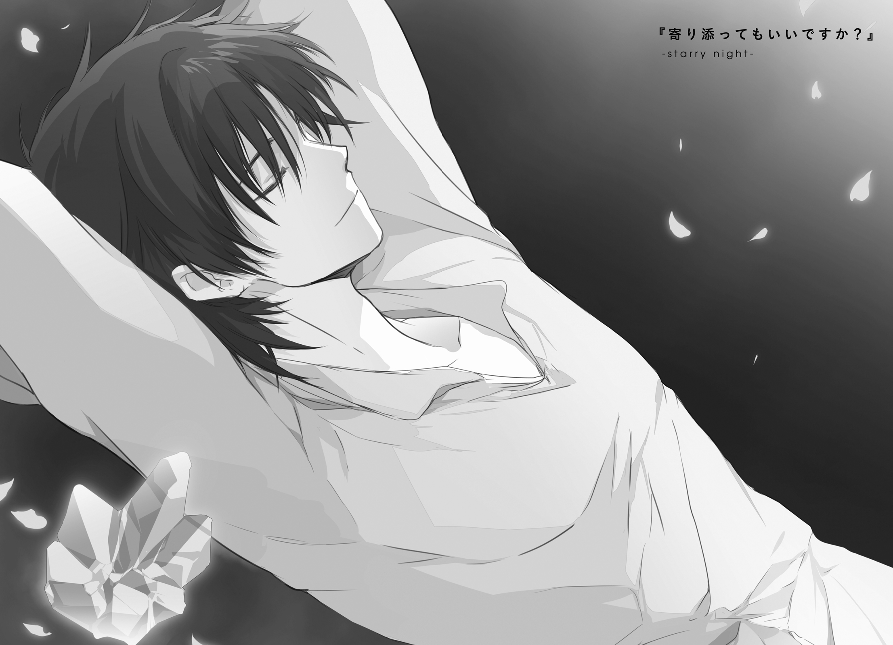
日常は、いつだって終わりかけている。
終わりかけの毎日の繰り返しが、日常を形づくっている。
それに新しく参加する者がいれば、離れていく者もいる。
少しずつ形を変えて、本当の最後を迎えるその時まで、ずっと続いていく。
新聞には、あの〈獣〉の群れの襲撃は、滅殺奉史騎士団なる連中の仕業だということで報じられた。もともと市内でよく暴れる悪名の高い連中であったこともあり、その情報は極めて自然に浸透し、信じられた。
エルピス国とコルナディルーチェ市、ひいては護翼軍との間に、どのような取引があったのかはわからない。感情的には真実を広めてほしい気がしてならないが、下手にそんなことをすれば戦争である。
ただ、少なくとも、今回の件でエルピス国防軍は大きく立場を失った。護翼軍の上のほうでも相当の人事異動があったという話だし、同じようなことをすぐまた繰り返すようなことはないはずだ。
──その新聞の隅の方に小さく、コルナディルーチェ市の外れで一人の豚頭族の変死体が発見されたという記事が掲載されていたことを、付け加えておく。
エルク・ハルクステンが帰還した。
この事実は、浮遊大陸群最大の秘境にして静謐なる聖域である２番浮遊島を、ほぼ文字通りの意味で大きく揺るがした。
『うおおおおおおおおおおおおエルクうううううううううううううう』
でっかい黒の頭蓋骨が、吠えた。
死に微睡む者。光の園に闇を灯す者。様々な仰々しい通り名を持つ神格、三地神がひとつである黒燭公が、威厳も尊厳も何もかもをかなぐり捨てて、絶叫している。
虚ろな眼窩の奥で怪しい光が激しく明滅し、唇を持たない歯がガチガチと打ち鳴らされる。
『よくぞ、よくぞ無事でえええええええ』
『ええいうるさい、お黙んなさいこの役立たず！』
でっかい赤の空魚が、ぴしゃりと叱りつけた。
同じく三地神がひとつである紅湖伯が、怒りも露わにぐるぐると辺りの宙を舞う。
『だいたいアンタ、五百年もかけて何やってんのさ！ 主神の魂を使って世界を防衛してたってアレは、百歩ゆずってよしとするわよ？ でも、なんでそんだけの時間をかけて、星船の修理、全然進んでないのよ！』
『し、仕方が無かろうが！ 儂のこの姿を見よ、自らの肉体の再構築も儘ならんほど、力が足りておらぬのだ！』
『余計なことばっかしてるからでしょーが！ いいからこんな浮き島世界なんて、さっさとまとめて墜としちゃいなさい！』
『できるか馬鹿者！』
「ああもう、ふたりとも、うるさーい！」
二柱の神に挟まれたエルクが、肩をいからせて叫ぶ。
『でもエルク、こいつにさっさと力を取り戻してもらって呪詛ほどかせないと、アンタもずっとその死にかけた体のままなのよ？ 早くもとに戻りたいでしょう？』
『そ、それはだな、前向きに考えてはいるのだが』
「別に、いい」
二柱が、揃って『は？』『む？』と疑問の声をあげる。
「わたし、このままでいい」
『なななんで!? ちゃんと生き返ってからじゃないと、星船が直っても、乗るのに体が耐えられないわよ？ この世界を出られないのよ？』
「どこにも行かない。この世界、けっこう好きだし」
『いやいやいや！ この世界って、もう終わっちゃってるじゃない！ ほとんど何もないじゃない！ 完全に何もなくなるまで秒読み段階じゃない！』
「でも、その秒読み、まだのこってるし」
『何なのその刹那的な考え方!? ちょっとちょっと黒燭公、アンタからも何か言ってやってよ』
『う、うむ？』
急に話を振られた頭蓋骨が、惑うように歯をかたかたさせる。
『浮遊島に在っての生活で、良い出会いでもしたか？』
「......うん」
『そうかそうか。好いた男でもできたか？』
「........................ううん、それは、ちがう」
『ちょっとぉ!? アンタ何聞いてるのアンタ何答えてるのぉ!?』
「あんなの、ちょっとしかかっこよくない。くとりもりーりぁも、妥協しすぎ」
『そうかそうか』
好々爺然と笑い、頭蓋骨が何度も頷く。
その周りを、空魚がなにやら喚き散らしながら、ぐるぐると回る。
その様子を、ネフレンはぼんやりと眺めている。
紅湖伯はいまだ、物質体とやらを得たりはしていない。ネフレンの精神の一部に棲んでいる。ただ、ネフレンがこの２番浮遊島の特殊な結界の中に留まっている限り、その結界の内側で好きなように動き、好きなように他者に絡めるとのこと。『ここって原始世界の雛形のアーカイブでもあるから、肉体と精神を軽い混交状態にできるのよ』とのことだが、よくわからない。詳しい説明もしてくれなかった。説明書がほしい。
「ねぇ、カイヤ」
黒燭公の従者である猫徴種の娘に、声をかけてみる。
「はイ、何でしょウ、ネフレン様」
「今夜のごはん、何にする予定？」
「決めてはおりませんガ、夏の園の実りが良いのデそちらの収穫で何かを作ろうかト」
「ん、わかった。あとで手伝うね」
言って、ネフレンは部屋を出ようとする。
「どちらヘ？」
「ヴィレムのとこ」
ヴィレム・クメシュの遺体は、２番浮遊島に運び込まれ、その深いところに安置されている。『また氷漬けにしたほうがよいのかのう』というのが黒燭公の意見だったが、エルクとネフレンの二人に却下された。
綺麗に整えられたベッドの上、まるでただ眠るように、ヴィレムは死んでいる。
「......寒く、ない？」
ネフレンは、ヴィレムの手に触れてみる。冷たい。
「寂しく、ない？」
頰に触れてみる。やはり冷たい。
毛布の一枚もかけてやりたいと思う。もちろん、そんなことをしても意味はない。
以前たびたびそうしていたように、また寄り添って眠りたいとすら思う。けれど、もう、そうすることにすら意味がない。
「生きかえらせるのはそんなに難しくない、って、いーぼが言ってた」
部屋の戸口に、いつの間に来ていたのか、エルクが立っている。
「わたしの場合といっしょ。セニオリスの呪詛をちょっとでもゆるめれば、ちょっとだけ死体じゃなくなって、勝手に生きかえる」
「それは、〈獣〉として、でしょう？」
「もちろんそうだけど。ねふれんは、それでもこまらないでしょ。あなただって、おなじ〈獣〉なんだから」
「意味がない」ネフレンは首を横に振る「壊れたヴィレムを独り占めしたって、うれしくない。私は、ヴィレムを......」
少し考えて、
「ヴィレムを、不幸には、したくない」
「ふぅん。ねふれんも、趣味わるい」
つまらなそうに言って、エルクは部屋の中に入ってきた。
そしてそのまま、いそいそと、ヴィレムの隣に横になる。
「何してるの？」
「ひとやすみ」
「どうしてここで？」
「べつに、たいした理由はないけど、なんだか落ちつくし......いたいいたいっ！」
耳を引っ張って、ベッドから引きずり出した。
そのままずるずると、部屋の外まで連れ出す。
「添い寝禁止」
「なんでなんで！ 死体どうしなんだから、問題ないでしょ!?」
「そこは私の指定席。死体だろうと星神だろうと譲らない」
「横暴だーっ！」
ずるずるずる。
夢の中にいる。
夕焼けが見える。
真っ黒な地平線の向こうに、太陽が沈もうとしている。
足元には、灰色の六角形を敷き詰めたような小さな足場。その足場の外には、何もない真っ黒な空間。
ここにあるのは、消えかけたあの夕陽と、この残り少ない足場だけ。他にはなにもない。終わりかけで、無くなりかけの、年老いた世界だ。
そんな場所に、青年は立っていた。
何もすることもなかったし、何も考えることもなかったので、ただぼうっとして、消えゆこうとする太陽を眺めていた。
ふと、青年は、隣にある気配に気づいた。
そこに、いつからそこにあったのか、小さな水晶塊が転がっていた。
なんだろう、これは──と青年が見つめていると、それはばきばきと音を立てながら割れ、膨れ、曲がり、削れて、人によく似た姿をとった。
──ああ、そうか。
こいつが俺の中の〈獣〉か、と青年は悟った。〈最初の獣〉の欠片を飲み込み、それを呼び水として目を覚ました、人間たる自分の半身である存在。
何百年だか何千年だかは知らないが、人類史と同じだけの長さに渡って、お互いに隣人であったはずの相手だ。なのにお互いのことをまるで知らなかった。それどころか気づきすらしていなかった。
「なぁ、おい」
声をかけても、それは動こうとしなかった。
「初めまして......ってのも何か妙な感じだな。ずっと一緒にいたんだからよ」
返事はない。ただ、どこを見るともなく、〈獣〉は立ち尽くしていた。
「ずっと無視してて、悪かったな。お前だって、被害者みたいなもんなのによ」
やはり、返事はない。代わりに、
「──よう」
覚えのある声を聞いて、振り返った。
消えかけた朱色に照らされ、年齢のわかりにくい、懐かしい顔の男が立っている。
「クソ師匠」
「ずいぶん色々やってきたみたいじゃねぇか。心残りはねぇか？」
「数えきれないくらい、たっぷりだ」
「そいつぁよかった」
ヴィレムの隣によいせと腰を下ろし、ニルスは笑う。
「最後まで充実した人生を走ってた証拠だ」
笑えるようなことではないと思う。
「やっとわかった。こいつらは、故郷に帰りたかっただけなんだな」
隣の水晶塊に目をやりながら、語る。
「ん？」
「あの、灰色の海を取り戻したかっただけなんだ。
奪ったのは、星神。しかもその理由は、あの連中はあの連中で、故郷を望んだから。そんな望郷の念のぶつかり合いの結果、地上は滅んで、故郷を失った者達が浮遊大陸群に追いやられた。
どいつもこいつも、ただ、帰りたかっただけ。取り戻したかっただけ」
太陽のゆらめきが、ニルスの影を小さく揺らす。
「世界を壊すのに、悪なんていらないんだ。始まりはどれも、誰にも咎められないような小さな願い。そんなものがこんなに簡単に、終わりに繫がっちまう」
「そうだな。この世界も、もう終わりだ」
ニルスがぼりぼりと頭を搔く。
「ついでに言えば、俺ももうそろそろ、行かないとならねぇ。俺がひとつの世界に留まって星神として振るえる力は六回までなんだが、お前を封印するのに、最後の一回を使いきっちまった。次の世界を探して、また旅に出ねぇとな」
「......あんた星神だったのか」
衝撃の事実、のはずだった。けれど特に驚かなかった。
心が摩耗しているせいなのか、それとも、この男なら正体が何であっても驚くにはあたらないと最初から諦めていたせいか。
「ついてくるか？」
「あ？」
「この世界はもう終末期だ。お前は死者で、できることは何もねぇ。だったら、俺と一緒に新天地に行くか？ うまくすりゃ、もうちょい生きやすい人生が送れるかもしれねぇ。少なくともここで永劫を死んで過ごすよりは、有意義に生きられる」
「あー......」考える「そりゃつまり、俺にも星神になれってことか？」
ニルスは苦々しく頷いた。
「そりゃ、楽しそうだ」
「お前なら、どこへ行ってもやっていけると思うがな」
「かもな」
故郷を無くしたことは、辛かった。苦しかった。でも立ち直れた。新しい場所を故郷だと思うことができた。その経験と思い出は、自分の大事な財産だ。
「結局俺は、お前にもこの世界にも、何もしてやれなかったからな。こいつが、クソ師匠としてお前にしてやれる、最後のことだ」
「その場合、こいつはどうなるんだ？」
隣の水晶塊を目で示す。
「今なら、お前らはかろうじて分離状態にある。〈獣〉をここに残し、お前だけを連れて行くことになるな」
「ああ......そういうことになんのか」
ヴィレムはぼりぼりと頭を搔いて、
「悪ぃ。やっぱ俺、行けねぇわ」
「そうか」
ニルスは頷いた。
「故郷を無くして、帰る場所がなくなってて、辛くて悲しい。
それでもさ。新しい場所を見つけることは、できるんだ。きっと、誰にだって」
浮遊大陸群を故郷としているあのたくましい人々だって、もともとは地上の民。
新しい故郷を受け入れるまでに、どれだけの血を流してきたことか。
「でも、急にやろうとしても、うまくいかねぇんだ。時間がかかる。
喪失の痛みから立ち直るのにも、誰かと出会うのにも、新しい場所に心を落ち着けるのにも。どいつもこいつも、そこで失敗したんだ。星神も。こいつら〈獣〉も。自分の故郷を一足飛びに取り戻そうとしたから、手段を間違えた。
まぁ、そういう俺も、なかなか気づけなかったんだけどな。でも、ちゃんと顔を上げてまわりを見てれば、すぐ隣に、教えてくれる誰かがいてくれたりするもんなんだ」
目を閉じる。
自分の場合、隣にいてくれたのは誰だったか。グリックだったり、ナイグラートだったり、ネフレンだったり、......クトリだったり。
自分にはもったいないくらい沢山のことを教えてくれた。世界の終わりのさらに先に放りだされた自分を、救ってくれた。
「俺は、こいつの、隣にいたい」
「話し合いをしたいってのか？ 無理だ。精神構造も生態も違うんだぞ？」
「そりゃそうだ。そこまで夢見ちゃいねぇよ」
馴れ馴れしく、水晶塊の肩（？）に腕を回す。
「こいつらは、こいつらの故郷の世界しか見えてねぇんだ。なくしたものしか視界に入ってない。だから浮遊大陸群のことを認められねぇし、俺らのことだって必死になって押し潰そうとしてる。
なんか悔しいじゃねぇか、そういうの。
だから、どうにかしてぇんだよ。
昔はともかく、今は何かヘンなのが隣にいる。そう、こいつらに思わせてぇんだ」
「馬鹿かお前」
「最近、自分でもそんな気がしてきた」
二人、最後に笑い合う。
「本当に、忙しいやつだな。死んだ後にまで、終わった世界に余計なお節介か」
「誰にもなれなかった俺にできることは、どうやらそれだけみたいだからな」
「......あー」
何かを言いかけたニルスの輪郭が、急にぼやけて見える。
「いいんじゃねぇか。お前らしくてよ」
「それも最近、自分でもそんな気がしてきた」
それきり、言葉が尽きた。
二人並んで、ぼんやりと夕陽を眺める。
ふと気づいて隣を見ると、ニルスの姿は、もうどこにもなくなっていた。
水晶塊──〈獣〉の妄執の欠片と、この終わる世界に、二人きりだった。
「......そんなわけで、長い付き合いになりそうだ、よろしく頼む」
ごろん、と、身を横たえる。この足場には、そのくらいの広さはある。
見上げた空には、何もない。夜空すらもがない。
「そういや、名前がねぇと不便だな。何かいい感じなやつ、つけてやろうか？」
そうのんびり言って、目を閉じた。
──あれから、少しだけ時間が流れた。
「こらあー！ 待ちなさいユーディア！」
「いっけね」
二人の少女が、おんぼろ宿舎の廊下を走る。今にも床が抜けてしまいそうではあるが、そこはそれ二人ともが慣れたもので、危なっかしい場所を器用に避けて駆け抜ける。
「今夜のごはんは先輩たちが帰ってくるお祝いのごちそうなんだから、つまみ食いしちゃダメって言ってたでしょうがー！」
「いやほら、あんまりにうまそうな匂いだったから？ やっぱアルミタの飯はうまいよな、ねーちゃんたちも大満足だぞ、うん。もちろんあたしも大満足」
「ああもうにくたらしい！ いっぺん、お尻叩かせなさい！」
「やなこったー！」
どたどたどたと、宿舎が揺れる。
「うるさぁい、二人ともしずかにしてぇ」
「なんです、またやってるんですかあの二人」
「ねねね、ここはいっちょ賭けようよ。今日はどっちが勝つと思う？」
「お、いいねぇ。僕はユーディアが逃げ切るに今夜のデザート」
「そんじゃ、あたしはその逆で。......タゼカちゃんも乗っかる？」
「へ？ あー......そんじゃま、カーナに。ベットは同じく今夜のデザートってことで」
「え、なんで？ これ、ユーディとアルミタのどっちが勝つかって勝負だよ？」
「そりゃまぁ、見てればわかると思うよ」
あちこちの窓からにょっきりと首を出して、少女たちがやんややんやと二人の逃走劇をはやし立てる。
「──今日もにぎやかっすねぇ」
奥まったところにある、資料室。
車椅子に座る金髪の女が、きししと楽しそうに笑った。
「埃が落ちるから、あんまり暴れてほしくないんだけど。せっかく大掃除したばっかりなのに、台無しだもの」
書類の束をめくりながら、桜色の髪の女が、こちらは困ったように笑う。
「そこは、おんぼろ倉庫の宿命っすね。そろそろ、がっつり改築したりしてもいいころだとは思うんすけど」
「そうなんだけどねぇ」
桜色の女、ナイグラートは、頰に指をあてて首をかしげる。
喰人鬼は年齢が外見に出にくい、とはよく言う。それを身をもって証明するように、その外見はあの頃とほとんどまったく変わっていない。
「あちこち思い出が刻まれてるから、いざ業者に頼もうかって思うたびに尻込みしちゃって。ほら、食堂の壁の傷痕とか覚えてる？ ノフトとラーントルクが背比べしてた時の」
「あー、細かく刻みすぎて、どっちがどっちだかわかんなくなったやつっすね」
懐かしそうに目を細める。
「そういや、その二人、今年は帰って来られそうっすかね？」
「ん。残念だけど無理みたい。二人とも、今の仕事、けっこう遠いところみたいで」
「あー。そりゃしょうがないっすね」
色々なことがあったのだ。
たとえば妖精たちの自由を制限するルールが、一部条件つきで緩和されたりもした。その結果、いま成体妖精たちの一部は、妖精倉庫の外で暮らしている。
ラーントルクは今、非公式にではあるが、オルランドリ商会に出向して妖精倉庫および遺跡兵装関連の経理や折衝を一手に引き受けている。そしてノフトは、地上に向かうサルベージャーの護衛として、護翼軍の非常勤戦力のようなことをやっている。
二人とも、今は、68番浮遊島からだいぶ離れたところで頑張っている。そうそう簡単に呼び戻せはしない。
「......そういや、コロンたちのほうは、もう帰ってきたんすか？」
「え？ ううん、まだよ。夕方くらいになるはずだけど」
「ありゃ。じゃあ、別件だったすかね。さっき港湾区画のほうに、民間じゃない感じの飛空艇が降りてったと思ったんすけど」
「さっき？ 変ね、そんな連絡受けてないけど」
ナイグラートが首をかしげる。
と、資料室の扉が控えめに叩かれ、一人の少女が顔を出す。
「すみません、ナイグラートさん、アイセアさん。リィエル見ませんでした？」
二人の女は、顔を見合わせる。
「見てないけど、どうしたの？」
「さっきから、どこにもいないんです。また森のほうに遊びに行ったとかだったら危ないから、気になって」
妖精倉庫の周りは、比較的深い森に囲まれている。それも、見えにくいところに水たまりができていたりする。不慣れな者や子供にとっては、そこそこ危険な場所だ。
「大変！ 捜しに行かないと！」
ナイグラートが書類を放り出して立ち上がる。
「そんなに心配はいらないと思うっすけどね。ちと過保護じゃないっすか？」
「過保護は保護者の特権でしょ！」
叫ぶようにそう言って、資料室を飛び出していく。
「ええと......私はどうしましょう」
残された少女が困ったようにそう言って、
「気にしなくていいと思うっすよ」
アイセアは肩をすくめた。
「カーナぁ！ 何してるのきみ！」
「にしし。漁夫の利、おいしくいただきました」
「ま、待ちなさぁい！ 待ってお尻出しなさぁい！」
「あー......こりゃ、さっきの賭け、タゼカちゃんの勝ちっぽいね」
「うーん。賭けといてなんだけど、まさか本当に当たるとは、びっくりだ」
「待ぁてぇ！」
「......本当に、にぎやかっすねぇ」
資料室に一人残されたアイセアは、ぽつり、寂しげに微笑んだ。
車椅子に腰かけたまま、窓の硝子に手を触れる。
昔、ここの窓の向こうに、彼と彼女たちがいたのだ。
短かったあの終わりの時を、忙しなく駆け抜けて行った、あの青年と少女たちが。
「色々なことがあったけど、こっちはけっこう、元気にやってるっすよ」
今はもう、彼らの姿はここにない。
だから、なんとなく青空のほうに向かって、アイセアはその報告を放り投げた。
「そっちはどうっすか？ 今、どこで何、やってるんすかね？」
空はどこまでも高く遠く。
言葉は吸い込まれて、何とも答えなかった。
頭上から、女の子が降ってきた。
見た目の年齢は、十にちょっと足りないくらいだろうか。樹の枝から足を踏み外してしまったらしく、頭からまっさかさまに墜ちている。このままいけば、地面にまっすぐ激突し、うららかな春の午後にはあまり似つかわしくない事態になるのは間違いない。
「おわっと」
青年は手を伸ばし、その女の子を受け止めようとした。しかしその寸前で足を滑らせて、派手に転倒する。結果、
「ぐえあっ!?」
その少女の下敷きになって、潰れた蛙のような声を出すはめになっていた。
「......痛ぇぇ」
「ご、ごめんなさいっ!?」
数秒遅れて、事態を把握したらしい少女が、慌てて飛び退く。
「け、怪我とかない!? ちゃんと生きてる!? 内臓とか、つぶれてない!?」
「あー、俺のほうは大丈夫だ。こう見えて頑丈なんでな」
ぱたぱたと服の汚れを払いながら立ち上がる。
「つっても、だいぶ汚れちまったな。お前の方は無事だったか──」
少女の姿を、見る。
よく晴れた空のような、蒼の髪。凪いだ海を見下ろした時のような、深い藍の瞳。
どこかで見たような、そんな気がした。
「──あれ？」
二人、目を合わせて硬直する。
「お前、どこかで会ったか？」
「う、ううん？ ないと思うけど......たぶん......」
少女が首を傾ける。
「わたし、ずっとこの島から出たことないし。きみ、この島の人じゃないよね？」
「あー、まぁ、久しぶりではあるかな」
曖昧な答えを返す。
「この道を歩いてたってことは、うちの倉庫に用事？」
「ああ」
「じゃあ、お客さまだ。ついてきて、案内してあげるから」
くるん、と身を翻し、少女は気取った足取りで歩き出す。
その背中を、青年はぼうっと見つめる。
「どうしたの？」
「いや......何でもねぇよ」
がりがりと頭を搔いて、青年は歩き出す。と、
「リィエルー！」
進行方向から、誰かを呼ぶ女の声が聞こえる。近づいてくる。
「リィエル......ああ、もう！ こんなところにいた！」
小走りに、背の高い女が近づいてくる。
「もう、心配させないでよ。一人で森に入っちゃいけないって、前から......」
ごめんなさい、でもねあのね、珍しい動物がいたの、逃げられちゃったけどそこの木の上まで追い詰めたんだけどね、あのね、
そんな、言い訳なのか自慢なのかよくわからない少女の弁明は、途中で途切れた。女の視線が自分に向いていないのだ。
「う......そ」
女が両の手のひらで口元を押さえ、震える声でつぶやく。
「まさか......え......そんな......」
「悪いな。だいぶ長いこと、留守にしてた」
え、え、え？
状況を理解できない少女の視線が、青年と女の間を往復する。しかし二人は何も説明せずに、まるで二人だけでわかり合っているかのように、視線だけをかわし合う。
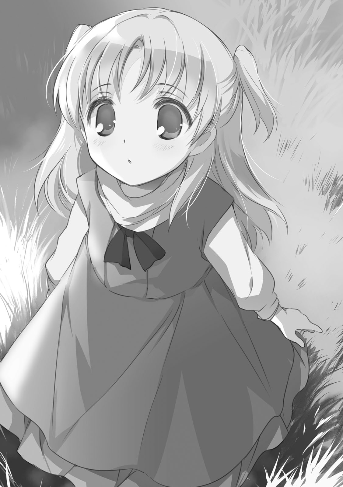
「ただいま」
男が、そう言った。
女は目を丸くして、白黒させて、ゆっくりと涙をにじませて、笑顔と泣き顔をぐしゃぐしゃに搔き混ぜた顔になった。
そして、震える声で、何度もつっかえながら、言葉を返した。
「おかえり......なさ、い......！」
あとがき／おわりのあとにかくもの
もしここにタイムマシンがあったら、十二年前の自分に会いたいです。
あの頃は毎日のように、深夜のファミレスのドリンクバーで傑作カクテルを追求していました。満足いく味のカクテルが出来上がったら、座席に戻っておもむろにノートＰＣを開き、真面目な顔でマインスイーパー。飽きたらハーツかソリティア。そして気づいたら朝が来ている。これぞ当時の私の標準的な作家生活。
そんなヤング枯野瑛のところを訪れて、こう言うわけです。
やあ僕は十二年後の君だけど、ひとつアドバイスをしにきたよ。
君がさっきＨＤＤの奥底にしまい込んだファンタジー世界の企画、絶対に捨てちゃだめだから。この後めちゃくちゃ波瀾万丈な経緯をたどることになるし、何度も折れそうになるっていうかぶっちゃけベキベキ折れるけど、それでもちゃんと完結まで走れる未来があるから。そこの企画書に書かれてる「人を食ったような腹ペコヒロイン」も、ちょっとだけ修正入ったけどちゃんと登場させられるから。
そこで、過去の私が言うわけです。未来からきたなんてすぐには信じられない、信じて欲しければそっちの時代に流行ってる映画を答えてみろと。そこで私は少し考える。最近どたばたしていてろくに映画を見られていませんが、それでも代表的な話題作の名前くらいは挙げられます。だから自信をもって答えます。『スター・ウォーズ』。
......あ、だめだ。
これ、「それいつの映画だと思ってんだよ！」って話がこじれるパターンだ。
過去の私のことは放っておきましょう。
というわけで、現在の枯野です。お待たせしました。
『終末なにしてますか？ 忙しいですか？ 救ってもらっていいですか？』の最終巻を、ここにお届けします。
はい、そうなんです。最終巻なんです。
ヴィレム・クメシュという人物の物語が迎えるひとつの結末までを、こうして語り終えることができました。
本当に色々なことがありましたが、多くの方々に支えられてここまでたどり着くことができました。ここまでの物語にお付き合いくださった全ての方々に感謝を。本当にありがとうございました。
そして早速ですが、お知らせがあります。
ぶっちゃけまして、新シリーズ開始の告知です。
ひとつの物語が終わり、そして、もうひとつの物語が幕を上げる。終わりかけた世界に生きる者たちの、まだ終わっていない日々。それは、それぞれに身勝手な終わりを望む者たちの、不格好に転がる儚い日々──
舞台は『終末な（略）』と同じ浮遊大陸群。ただ、少しばかり時間が経っています。小さかったあの子たちが大きくなっていたりします。
色んなことが最高にうまく動いていれば、この本と同時に本屋に並んでいるはず。タイトルは未確定ですが、今のところの感触では、『終末なにしてますか？ もう一度だけ、会えますか？』になるんじゃないかなーという感じです。......って、ちょっとだけ短くなったけど、やっぱり長いですねこれ！
というわけで、よろしければもうしばらく、この斜陽の世界の物語にお付き合いくださいませ。
二〇一六年冬
枯野 瑛
カバー・口絵・本文イラスト／ue
カバーデザイン／百足屋ユウコ＋モンマ蚕（ムシカゴグラフィクス）
終末なにしてますか？ 忙しいですか？ 救ってもらっていいですか？#05
枯野瑛
平成28年4月1日 発行
(C)2016 Akira Kareno, ue
本電子書籍は下記にもとづいて制作しました
角川スニーカー文庫『終末なにしてますか？ 忙しいですか？ 救ってもらっていいですか？#05』
平成28年4月1日初版発行
発行者 三坂泰二
発 行 株式会社ＫＡＤＯＫＡＷＡ
〒102-8177 東京都千代田区富士見2-13-3
電話 0570-002-301（カスタマーサポート・ナビダイヤル）
受付時間 9:00～17:00（土日 祝日 年末年始を除く）
http://www.kadokawa.co.jp/